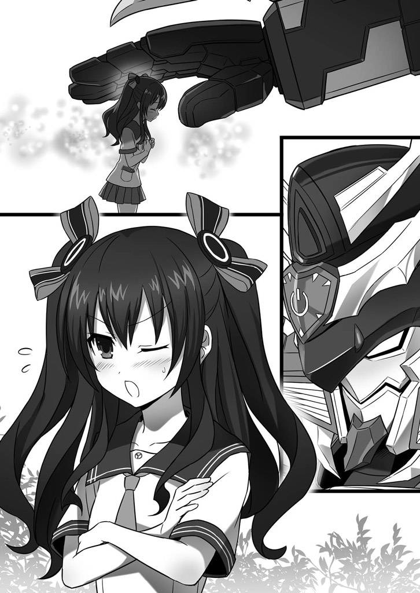

| 桜ノ杜ぶんこ 超次元ゲイム ネプテューヌ はいすくーる4 | |
| おかず | |
| (2013) | |
桜ノ杜ぶんこ
超次元ゲイム ネプテューヌ はいすくーる４
おかず


すー。はー。......よし！
み、皆さんこんにちは！ みんなのアイドル、ネプテューヌ......の、妹のネプギアです！ えーと、えっと......お、お姉ちゃん、カンペ。カンペ見せて。......あ、あ、そっか。はじめましての人は、はじめまして。そうじゃない人は、お久しぶりです。
こ、今回は、お姉ちゃんの代わりに私があらすじを......え？ なに？ お姉ちゃん。
今回は尺 が短めなので巻きでお願いします？ ま、巻き？ ああ、急いでっていうことなの？ えー、急にそんなこと言われても、私も緊張 しちゃってるし。あ！ 待って！まだめくらないで！ え？ え？ ＶＴＲ入ります？
「......後のことは、任せたわ......ネプギア」
「お姉ちゃん！ お姉ちゃんっ!! 」
あ、ＶＴＲってそういう......。
と、と、いうわけで、私たち姉妹の住んでいた天界で起きた戦いの最中、行方不明 になってしまったお姉ちゃんを捜 すために、私は天界から地上に降りることになりました。
ところが、なんの手違いか、私は大陸本土からずーっと南の海に浮かぶオオトリイ島というところに転送されてしまったんです！
しかも私ってば、海に落っこちて溺 れちゃう始末 。うう、いきなり前途多難です。
「あ、あれ？ どこだろうここ。......知らない天井が見える」
「アタシはユニ。......アンタの命の恩人なんだからね。感謝しなさいよね」
わぁ、結構うまく編集されて......とと、そうじゃなくって。
そんな私のことを助けてくれたのは、島にある唯一の学校、『イストワール記念学園・オオトリイ島分校』に通う女の子、ユニちゃんでした。
けど、助かったはいいものの、天界にいるいーすんさんとは連絡が取れなくなってしまって......。
そこで私は、ユニちゃんの他、可愛い双子のロムちゃんとラムちゃん、優しい西沢ミナ先生、大きくて強そうなロボット型生命体であるブレイブ先生たちのお世話になりながら、本土へ渡るフェリーが島に来るまでの間、分校の特別転入生として生まれてはじめて学校に通うことになったんです。
でも、その時私は、自分がどこから来た何者なのかを告げていませんでした。みんなに親切にしてもらえばもらうほど、私は隠し事をしているのが辛くなってきてしまって......。
「あ、これだ。『一年後輩に、とんでもない新入生が入ってきました。名前は、ネプテューヌといいます』......ん？」
「ラムちゃん！ 今のところもう一回！」
「名前は、ネプテューヌといいます。......あ、これだよロムちゃん！ お姉ちゃんの日記に書いてあったんだ！」
本当のことを言い出せないまましばらく経ってしまった頃、捜 していたお姉ちゃんが、本土にあるイストワール記念学園の本校に通っていることがわかりました。
でも、お姉ちゃんに会わせてもらうためには、隠していた私の素性 を説明しなければならなくなって......。これまで黙 っていたことが申し訳なくなってしまった私は、学校を飛び出しちゃったんです。
「......誰もアンタのこと嘘つきだなんて思ってないわ。て言うか、アンタが嘘ついて平気でいられるような器用 な性格じゃないのなんて、すぐにわかるわよ」
「ユニちゃん......ユニちゃぁん......」
「もう大丈夫よ。これからは、このアタシがついていてあげる。だからもう泣き止みなさいよ」
私は、みんなに嫌われちゃうのを覚悟していたけど......ユニちゃんをはじめ、みんなは私のことを暖かく許してくれました。それだけじゃなく、本土の学校まで一緒に来てくれることになったんです。
「やっと見つけた......お姉ちゃん！」
「わたしがお姉ちゃん？ あなたの？ 誰かと間違ったりして......ない？」
そしてついに、お姉ちゃんとの感動の再会......のはずが、またまた大きな問題が。
なんと、お姉ちゃんは地上に落っこちちゃった時のショックで、記憶喪失になっちゃってたんです！ そんなぁ、せっかく会えたのに。
正直、落ち込みました。取り乱しもしました。でも、辛いのはお姉ちゃんも同じ......。
「わたし......わたし、どうして覚えてないの？ こんなにわたしのこと好きでいてくれて、わたしのこと考えてくれるネプギアのこと、どうして覚えてないんだよぉ......」
「お姉ちゃん！」
......うう、このシーンは何度見ても私も......え？ もうＶＴＲ終わってる？
はわわわ！
えっと、こ、こほん。わ、私のことを忘れてしまったお姉ちゃんも、苦しんでいました。
どうにかして記憶を取り戻そうと、私の知らないところで必死に頑張ってくれていたんです。
「......次のお休みに、ねぷねぷとギアちゃんにとって思い出の場所をみんなで巡ってギアちゃんからお話を聞いたら、何かねぷねぷも思い出すことがあるんじゃないかって。どうですか？ このアイディアは」
「それだよこんぱ！ よくぞ、よくぞ言ってくれました！ わたしは、そーいうのを待ってたんだよ！」
そんな中、本土にやって来た時からずっと、私たちのお世話をしてくれていたコンパさんのアイディアで、お姉ちゃんと私が、前にこっそり地上へ遊びに行った時の思い出の場所を巡 るバスツアーが企画されました。
ユニちゃん、ロムちゃん、ラムちゃんはもちろん、ユニちゃんたちのお姉さんでもある本校の皆さんと一緒に楽しい時間を過ごすうち......、
「リサーチってわけじゃなくって、ずっと前にネプギアと一緒に食べた時さ、あんまり美味しくってその場でひっくり返っちゃってさぁ」
「ネプテューヌ、あなた今自分で何言ってるかわかってる？」
「へ？ いやだから、前にネプギアと食べた時に美味しかったから......」
「はいストップ！ そこでストップ！ 今言ったこと、もう一回！」
立ち寄ったフードコートのたこ焼き屋さんで、ついにお姉ちゃんが記憶の断片 を取り戻したんです！ あと一歩！ きっともうすぐ、全部思い出してくれるはず！
ところがそこに、またしても難関 が！
前からお姉ちゃんたちにひどいことをしてきた悪徳建設会社、マジックカンパニーが、大陸一番の電波 塔 、プラネタワーをジャックするという大事件が起きてしまいました。
マジックたちは、プラネタワーから大陸全土に洗脳電波を照射 して、世界中の人たちを自分たちの言いなりにしようと企んでいたんです。そんなこと、絶対にさせません！
「ユニ！ しっかり！」
「お姉ちゃん......ご、ごめんなさい......」
「こんな愛らしい幼女プラスその他ではもう吾輩 辛抱 たまらず！」
「い、いやー！ ヘンタイー！」
「...ひぐ...やめてぇ」
「てめえ！ 超えちゃいけないライン軽々と超えてんじゃねえ！」
でも、マジックカンパニーは卑怯 にも、私たちに内緒でタワーに忍び込んでいたユニちゃんたちを人質に、〝ゲーム〟と称して一方的に決闘を挑んできました。
決闘と言っても、ユニちゃんたちを人質に取られてしまっている以上、私やお姉ちゃんたちはまともに戦えません。
皆さんが次々に倒されてしまい、とうとうお姉ちゃんまで......。
そんな絶体絶命のピンチを救ってくれたのは、ブレイブ先生とコンパさん、アイエフさんでした。
そしてお姉ちゃんも、マジックの攻撃を受けた衝撃 か、それとも行方不明になった時と同じ、物凄く高い所から落ちていくというシチュエーションになったせいなのか。......ううん、違う。私のことを一心に思ってくれる気持ちが奇跡を起こし、すべての記憶を取り戻してくれたんです！
「今はネプギアだけが頼りよ。お願い、わたしに力を貸して」
「力を貸すって......ど、どうすればいいの？」
「一緒にこの剣に力を込めて。それだけでいい。後は、剣の力が邪悪な精神を浄化 してくれるはずよ」
記憶を取り戻したお姉ちゃんと私は、ふたりで協力して、ついにマジックを倒す......と言うか、マジックたちに取 り憑 いていた異世界の悪者を浄化することができました。
「ごめんね、ごめんね。心配かけたよね」
「お姉ちゃん......」
「わたしのこと、捜しに来てくれてありがとう。もうネプギアのことひとりにしないよ。約束する！」
「......おねえちゃぁん！」
こうして、今度こそ本当の意味で、私とお姉ちゃんは再会を果たすことができました。
でも、それは......。
「それじゃあ、行こっか」
「短い間だったけど、お世話になりました！」
私たち姉妹にとっては、始まりにしか過ぎません。
私たちには、地上から天界に戻って、どうしてもやらなければならないことがあるんです。
......これでＯＫかな、お姉ちゃん。ＯＫ？ バッチグー？ はー、良かった。
すごいね、お姉ちゃん。毎回こんなことやってるの？ 私はもう、今回だけで十分だよ。もう、緊張 で汗びっしょり。それじゃ、あとはお姉ちゃんにバトンタッチ......え？ ええ!? まだ終わりじゃないの？
こ、これを見て？ ......えーっと。
......。
さ、『ＳＩＤＥ--ＧＥＡＲ』って......何コレ？ ＧＥＡＲはネプギアの〝ギア〟？ だから今回は、最初から最後までネプギアが進行をしてください？ ......ええええ～っ！
む、無理だよそんなの！ 前だって私の回想 パートは、いっぱいいっぱいだったのに。
ネ、ネプギアならできるよ？ わたしの妹だもん？ ガッツだ、ガッツ！ ......何もそんなことまでカンペに書かなくても......いやいやいや、そうじゃなくって！
ほ、本気なのお姉ちゃん!?
『超次元ゲイム ネプテューヌはいすくーる４ ＳＩＤＥ--ＧＥＡＲ』、はじまり、はじまり～？ なお、もうカンペはない模様？
......。
あっ！ 待って！ 待ってよお姉ちゃん！ 行かないでってば！ お姉ちゃあああん！
「短い間だったけど、お世話になりました！」
誰もいない寮 の部屋に向かってぺこりと頭を下げたあと、
「さ、行こっか」
お姉ちゃんは、私の腰をぽーんと一回叩いて言った。
「さっきも言ったけど、本当に、本当にいいの？ お姉ちゃん」
こんなことを聞いちゃったら、せっかく気持ちに踏ん切りがついたお姉ちゃんをまた迷わせちゃう......。そう思っても、やっぱり聞かずにはいられなかった。
「んー。今戻らないと期末テストになっちゃうんだよねー。だから、タイミング的には今かなーって思うんだけど」
頭の後ろで手を組んで、腰をひねるようにしながら、お姉ちゃんが冗談 っぽく言った。背中に背負っている大きな剣が、かちゃかちゃと鳴る。
その、無理に面白いことを言おうとしている様子がまた、私を切ない気持ちにさせた。
「ネプギアこそいいの？ ぱぱっと変身して行けば、ちょっと島に寄るぐらいの時間はあると思うよ？」
そんな私を逆に心配するように、お姉ちゃんが聞いてきた。
「私は......ちゃんとお別れしたつもりだから」
「つもりって......」
私の曖昧 な答えに、お姉ちゃんの眉毛 がへにょりと傾 いた。
お姉ちゃんが記憶を取り戻し、マジックを......ううん、もう取 り憑 いていた異世界の悪いマジックは浄化 したんだから、マジックさんって呼ぶべきかな。
とにかく、そのマジックさんを元に戻してから一週間が過ぎていた。
オオトリイ島からこっちへやって来たユニちゃん、ロムちゃん、ラムちゃんは、しばらく自分たちのお姉ちゃんと姉妹水 入 らずの時間を過ごして、二日前にブレイブ先生と一緒に島に帰っていった。
「じゃあねー。また来るからねー」
「...ばいばい、ネプギアちゃん」
「色々あったけど、楽しかったわ。近いうちにまた会いましょ」
もしかしたら、これが最後かもしれない......なんてこと、言い出せるわけもなくって、私も、
「うん。またね！」
って、笑ってお別れしたんだ。だから......だから私は大丈夫。
でも、お姉ちゃんは......。
しばらく、私とお姉ちゃんはお互いに見つめ合う。と、
「あーもう。ダメダメ、暗いのはなし！」
ぶんぶんと顔の前で両手を振って、お姉ちゃんが言った。
「いい、ネプギア。別にもうこっちに戻ってこないわけじゃないんだよ？ あんまり考えすぎないようにしようよ。ちょっとの間だけ向こうに帰って、いーすんに元気な顔を見せてあげるんだって」
「いーすんさんに？」
「そうだよ。いーすん、きっとひとりぼっちで寂しくしてるよ。で、わたしもネプギアも元気満タンでーすって安心させてあげて、三人でぱぱーっと全部片付けて、また地上に来たらいいだけだってば。ね？ ね？」
ぱぱーっと全部片付ける......。お姉ちゃんは、明るくそう言ったけど、これから先、天界に戻った私たちを待っている事態 は、そんなに簡単なものじゃない。
それは、お姉ちゃんにだってわかってるはず。でも、だからこそ私もお姉ちゃんも、ふたりだけで帰ろうって、決めたの。
私たちの大切なお友達を、私たちの問題に巻き込んじゃうわけにはいかないから。
「そうだね！ ぱぱーっと片付けちゃおっか。足りない物も手に入ったしね」
「そうそう。いーすん驚 くよー、きっと」
「うん。期末テストまでにはこっちに帰ってくる勢いでがんばろー！」
「......あ、いや。それはちょっとぉ......」
私とお姉ちゃんは、お互いを励ますようにじゃれ合いながら、プラネテューヌ寮 の建物を出た。
ふたり並んで、学園の正門に向かって歩いて行く。
その道すがら、
「あ、ねぷねぷじゃーん。おお？ そっちが、今ウワサの妹さん？」
「姉妹お揃 いでどこ行くのー？ お買い物？」
クラスメートなのかな？ 反対側から歩いてきた、お姉ちゃんのお友達らしい女の子ふたり組が声をかけてきた。
「うん、ちょっとねー。すぐ帰ってくるけどね」
すれ違いざま、そのふたりに手を振ってお姉ちゃんが言った。
「じゃあ、また明日ねー」
「車に気を付けるんだよー」
「はーい」
それからも、正門に着くまでの間、お姉ちゃんは色んな人たちに声をかけられていた。
男の子も、女の子も、先生たちも、学園に住み着いてるっていうネコちゃんたちも......みんなみんな、お姉ちゃんに会うと楽しそうな顔になるんだね。
お姉ちゃん、人気者なんだね。
誇 らしい気持ちと、ちょびっとのヤキモチと......。何度か口に出して言っちゃいそうになるのを、私はガマンする。
ニコニコと明るい笑顔をいっぱい振りまいたお姉ちゃんと私は、広い学園の敷地 内 を十五分かな、二十分かな。とにかく、ゆっくり歩いてやっと正門に到着した。
と、
「あ......」
そこでお姉ちゃんの足が、ぴたっと止まった。
正門に寄りかかって腕組みをしているスーツ姿の女の人がいる。
あの人は......。
それまで誰と会っても笑顔だったお姉ちゃんの顔が、そこではじめて、ちょっと困ったような気まずいようなものになった。
「あちゃー。よりによって......」
おでこに手をやったお姉ちゃんが言うと、その声に気付いたスーツの女の人......学園長のマジェコンヌ先生が、ツカツカとヒールの音を立てながら私たちに近付いてくる。
「ど、どーも、マジェコンヌ先生。えっと、本日はそのぉ、お日柄 も良くって......」
あからさまに動揺 したお姉ちゃんのセリフに、ちょっとずっこけちゃいそうになりながら、私も、
「こ、こんにちは......マジェコンヌ先生」
なんとか笑顔を作って言ったんだけど、
「......」
マジェコンヌ先生は、シリアスな顔で私たちを見ると、
「話がある。ちょっと学長室まで一緒に来な。ふたりともだよ」
断りにくいオーラ全開で、すごく真面目な声で言った。
「え、えっとー。実はそのー、私たちこれからちょっと大事な用があって......ね？ お姉ちゃん」
それでも、私は一生懸命笑顔をキープしたままで答えた。
「う、うん！ そうなんだよ！ 超大事な用事なんだよ」
私に合わせて、お姉ちゃんも何度もうなずく。
「まぁそうだろうね。何しろ、世界の命運 がかかった用事だろうから」
と、マジェコンヌ先生が、何もかもお見通しっていう感じで言い、私とお姉ちゃんはふたりして黙り込んじゃうことに。
「行くんだったら、ふたりで変身して、誰にも見つからないように空でも飛んで行けばいいものを......。そんな、ここの風景を目に焼き付けるように歩いてるんだからね。バカな子たちだね」
そんな私たちに向かって、マジェコンヌ先生が続けた。
バカな子たち、なんて言う割には、その目がちょっと優しい感じになっているのに私は気付いた。
「い、いやー。何言ってるのかなー先生ってば。ちょっとわかんないなー」
まだなんとかしてごまかそうと、お姉ちゃんが頑張った。けど、これはもう、ちょっと無理って言うか......。
「いいから、ついてきな。そう心配しなくても、悪いようにはしないよ」
うん、ダメだぁ。
これはあれだね、どんなにコマンドで「いいえ」を選んでも、「いやいや、そんなこと言わずに」って無限ループになっちゃうやつだよね。
「はい」を選ぶまでは、絶対にこれ以上進ませてもらえない的な......。
「ほら、行くよ。ふたりとも回れ右！」
「はい」
「はい」
観念 して、私たちふたりは、素直にうなずいたのでした。
Ⅰ
「ねぷねぷも、ギアちゃんも、めっですよ。めっ」
学長室にやって来た私たちを待っていたのは、珍しくぷーっとほっぺたを膨 らませて怒っている様子のコンパさんだった。
「い、いやー、こんぱ。これにはね、海よりも深ーく、全部ドッキングさせたあのハードよりも高ーい事情というやつがあってね」
しどろもどろになりながら、お姉ちゃんが言い訳しようとすると、
「余計なこと言わないで謝っちゃったほうが身のためよ」
コンパさんの隣で腕組みをしたアイエフさんが、お姉ちゃんを遮 って言った。
その他にも、
「水くさいどころのお話じゃありませんわ。ねぷねぷも、ネプギアちゃんも」
ベールさんが言ったかと思えば、
「......黙 って消えようっていう、その考え方が良くないわ」
ブランさんが、ジトーッとした目つきでお姉ちゃんと私を見て、
「ネプギアはともかく、つまんない遠慮 なんかネプテューヌのキャラじゃないのよ。あなたが余計なことを考えると、めぐり巡 って私たちがとばっちりを食うんだから......最初から素直に相談すればいいのよ！」
最後にはノワールさんが一気にまくし立てた。
これには、お姉ちゃんもたじたじになっちゃって、
「ど、ど、どうしようネプギアー。みんな、すごーく怒っちゃってるよー」
私の両腕をつかまえて、前に後ろにがくがくん。
でも、頼られたところで私も固まってしまって、集まっている皆さんの顔を見渡すばかり......。
皆さん、私たちより先にマジェコンヌ先生に呼ばれて、ずーっとここで待っていたんだって。
しかも、どうやらこの口ぶりからすると、私たちが内緒でこっそり天界に帰ろうとしていたのもバレバレみたいで。
「さあ、ねぷねぷ、ギアちゃん。ちゃんとみんなにごめんなさいするです」
膨 らませたほっぺを、今度は赤く染めたコンパさんが、もう一回言った。
他の皆さんも、コンパさんの言葉に「うんうん」とうなずく。
「これは......しょうがないよ。やっぱり、私たちが悪いと思うもん。ちゃんと謝ろう、お姉ちゃん」
「そ、そうだね。あの優しいこんぱが、ここまでごめんなさいを要求してくるって、よっぽどのことだし......」
三ターン後には、パーティー全滅の特殊攻撃が待ってます......的なプレッシャーに負けて、結局私たちは、
「だ、黙ってふたりだけで天界に帰ろうとしてすみませんでした」
「悪気 はなかったんだってば！ 本当だよ。みんなに迷惑かけたくなかったからさ。だから、許して！」
ふたりで声を揃 えて、皆さんに頭を下げた。
と、コンパさんが、入口で立ちん坊だった私たちのところに近付いてきて、
「はい。ちゃんとごめんなさいできたですね。ふたりとも、いい子、いい子です」
さっきまでちょっと怖い顔をしていたのがまるで嘘のように、私たちの肩をきゅうっと優しく抱き締めた。
「それじゃあ、これからもみんなで力を合わせてがんばるです」
手を放したコンパさんが言った。
「力を合わせてって......こんぱ、わたしたちがどうして帰ろうとしたのか、わかって言ってるの？」
いつになくシリアスな顔つきでお姉ちゃんが尋 ねると、
「マジェコンヌ先生から大体のお話は聞いたです」
コンパさんが、こっくりとうなずいた。
「詳しい話はこれからみたいだけどね。ま、そういうこと。ふたりにも色々考えがあってのことでしょうけど、私たちにだって言いたいことは山ほどあるわ。......お互い今は、言いっこなしにしときましょう」
コンパさんの後を引き継ぐように、アイエフさんが言った。
「すみませんでしたマジェコンヌ先生。こちらの話は終わったので、もう大丈夫です」
その様子を見たノワールさんが、私たちを連れてきてからは特に何も言わず、自分の机でカチャカチャとノートパソコンを操作していたマジェコンヌ先生を振り返った。
マジェコンヌ先生が、ノートパソコンをぱたんと閉じて、顔を上げた。
「まったく、あれこれと手続きの多い連中だなお前たちは。まあいい、それじゃあ本題に入ろうか」
Ⅱ
マジェコンヌ先生の言う〝本題〟は、言葉だけで言うとすごく短いものだった。
「今、人知れず迫っている世界の危機を救うのに、お前たちの力を貸して欲しい」
ノートパソコンを大きなお仕事机の引き出しにしまって、机の上で手を組んだマジェコンヌ先生が、あっさりと言った。
まるで、「新発売のゲームを予約してあるから、店まで取りに行ってきてほしい」ぐらいの頼み方に聞こえる。
「そのお話は、昨日もうかがいましたわ。どうやら、ねぷねぷとネプギアちゃんだけで事態を解決しようとしているようだから、手を貸してやれと......」
「それは一向に構わないですが、具体的に何をどうしたらいいのか教えていただけますでしょうか？」
それに答えるベールさんとノワールさん。
こっちも、もうマジェコンヌ先生の頼みを引き受ける前提 になっていて、私もお姉ちゃんも目をぱちくりさせながら聞いているしかなかったところで、マジェコンヌ先生がまた私たちを見た。
「それについては、当事者に話してもらうのが一番だな。ネプテューヌ」
「え？ わたし？」
話を振られたお姉ちゃんが、自分を指さして聞き返した。
「そうだ。天界で今、何が起きていて、それがどう地上に影響を与えるのか説明してやってくれ」
マジェコンヌ先生がうなずき、皆さんの視線がお姉ちゃんに集まる。
「そ、そう？ それじゃ」
と、お姉ちゃんが口を開いた。......でも、大丈夫なのかな？ ふと、私の胸に不安がよぎる。
「話せば長くなるよ。まずね、ある日ね、私とネプギアが天界の見回りをしてたらね......あ、天界なんて言うけど実はそんなに広くなくって、だから、さーっと終わらせてあとは地上のテレビでも見てようかなーとか思ってたんだけど......」
そして、私の不安はすぐに現実のものに......。
お、お姉ちゃん？ テレビのこととかは、今話さなくてもいいんじゃないかなー？ おーいお姉ちゃん？ 聞いてる？
「そしたらさ、これがもう本当にびっくりなんだけど、なんかこう......黒くて丸くてゴロゴロっとしてるのにビカーって目がくっついてて、ゲショゲショした足みたいな手みたいなのが生えてるヤツが、ワラワラワラウラワラワラーって！ 一個だけ〝ウ〟が混 じってても気付かないよって感じで出てきて、それでもうわたしもネプギアも大慌てで、ワーってなっちゃってさ」
ああ......あああ、お姉ちゃん......。
これはさすがにと思って、私がバトンタッチを申し出ようとしたその時だった。
ピピーッというホイッスルの音がどこからか聞こえてきて、お姉ちゃんの説明（とはお世辞 にも言えないかもだけど）を中断した。
ええっ？ と思って音の鳴った方を見ると、ホイッスルを口にくわえたブランさんが、頭の上に赤いカードを一枚掲 げている。
「要領 が悪すぎるわ。あからさまな遅延 行為 は、レッドカードで退場処分よ」
「ブ、ブラン。どうしてアナタ、そんな物持ってるの？」
「今日の五限目、体育でサッカーした後にそのまま来たから。わたしは、審判 」
アイエフさんのツッコミもどこ吹く風と受け流して、ブランさんがマジェコンヌ先生を見て言った。
「マジェコンヌ先生の人選ミスだと思います」
「まったくだ。私としたことが......」
おでこに指を当てて、しかめっ面のマジェコンヌ先生。うん、これはちょっとしょうがないかな......。
でも、収まらないのはお姉ちゃんで、
「ちょーっと待って！ 待ってってば！ 盛り上がるのここからなんだって。初見 のムービーシーンをスタートボタンでスキップしちゃうみたいなプレイは、どうかと思うな、わたし」
せっかく張り切っていたところに水を差されちゃって不満そう。なので、ブランさんのレッドカードを無視して再開しようとしたんだけど、
「もういいから。ネプテューヌに任せてたら、日が暮れちゃうわよ」
「ムービーシーンは、あとでオプション画面からも見られますわ」
ひょいっと伸びてきたノワールさんとベールさんの手に捕まえられて、やっぱり退場処分にさせられちゃった。
「だから待ってって！ あらすじの時みたいに、カンペとＶＴＲ使わせてくれればこんなことには......」
「何をわけのわからないこと言ってるの。いいから、こっちでおとなしくしてなさいっての。......それじゃ、悪いけどネプギア、もう一回順を追って説明してもらっていい？ 巻きでね、巻きで」
なおも食い下がろうとするお姉ちゃんを、今度はアイエフさんが遮 って私を見た。
「は、はい」
言われ、お姉ちゃんに「ごめんね」と目で謝ってから、私が説明をやり直そうとした時だった。
─ ピロロロロ♪
今度はホイッスルじゃない、ケータイ電話の呼び出し音が学長室に鳴り響く。
「......私だ。どうした？」
それは、マジェコンヌ先生のケータイ電話だった。
「......そうか。よし」
私が話をするきっかけをつかめないまま見ている前で、手で「ちょっと待て」の仕草をしたマジェコンヌ先生が、電話に向かって話し続ける。
やがて、
「わかった。すぐに向かう。それまでに準備を頼む」
電話の向こうにいる誰かに何かをお願いして、電話を切った。
「あの......もういいですか？ お話ししても」
私は聞いた。それでてっきりＯＫがもらえるかと思いきや、
「いや、いい」
意外にもマジェコンヌ先生が首を振った。私だけじゃなく、他の皆さんも「え？」という顔になってマジェコンヌ先生を見ると、
「もっと適役 がいる。悪いが、また移動してもらうよ。全員、ついてきな」
一瞬、ほんの一瞬だけど、どこか嬉 しそうな笑みを浮かべてマジェコンヌ先生が言った。
Ⅲ
もっと適役がいる。......そう言って、マジェコンヌ先生が私たちを連れて行ったのは、学園の敷地 内 にある森のような所だった。
「学園にこんな所があったんだね。私、ちっとも気付かなかったよ」
隣を歩くお姉ちゃんに声をかけると、お姉ちゃんは、
「あ、そっか。ネプギアはまだ連れて行ってあげたことなかったんだっけ」
ポンと手を打って言った。
どうやら、お姉ちゃんには、これから行くところに何か心当たりがあるみたい。
じゃあ、もしかして他の皆さんも？ と思って聞いてみると、
「ギアちゃんが来た時は、ちょっとバタバタしちゃったですからね」
と、コンパさん。
「ちゃんと案内してあげなきゃなんて話してるうちに、タイミング外しちゃったのよね。ユニたちは帰っちゃうし、ネプ子とネプギアも黙っていなくなっちゃうところだったし」
続けて、アイエフさん。
「そのことは、もうごめんなさいしたでしょー。意外とあいちゃんってば、根に持つタイプなんだから」
またお姉ちゃんが言ってから、「ほら、ネプギア。見えてきたよ」と、前を指さす。
見ると、急にお姉ちゃんが指さしたあたりから視界が開けていて、進む先に小さな石造りの建物があった。
「教会？ に見えるけど」
私が言うと、
「ええ。元々、学園にあった古い教会をわたくしたちでリフォームしましたの」
前を行っていたベールさんが、私の方を振り返って言った。
「リ、リフォーム!? 」
驚 いて、私は教会だという建物をもう一度見る。
外見は、やっぱり何度見ても古びた教会で、日陰になっているところの壁には、苔 なんかも生えちゃっている。
だけどそこから上に顔を上げて屋根の方を見てみると、なぜか屋根にはソーラーパネルが並んでいたり、パラボラアンテナが立っていたり、確かに後から付け加えたに違いないっていう感じの設備が。
「あれは、わたくしがお小遣いで設置した太陽光発電装置と、衛星 を利用したネット回線の受信装置ですわ。電気も、ネットも、秘密基地でゆっくりゲームを楽しむには欠かせませんものね」
「ひ、秘密基地......ですか？ でも、ゲームなんかは寮 のお部屋で遊んだらいいんじゃ」
「わたくしのお部屋、今は部屋全体がゲーム機になってしまってますの」
す、すみませんベールさん。ち、ちょっと何を言ってるのかわからないです......。
どこからツッコんでいいのか、それともツッコんじゃいけないのか......。仕方なく、私は「あははは。す、凄いですね」なんて当たり障 りなくやり過ごしていたんだけど、その間にも足は建物に近付いていって、
「さあどうぞ、ネプギア。ようこそ、わたしたちの秘密基地へ！」
お姉ちゃんが、よいしょっとかけ声を出しながら、大きくて立派な扉を開けた。
中を見て、また驚いちゃった。
入口から見て一番奥にある一段高い祭壇 は、確かに教会の面影 を残していたけど、他はその......元が古い教会とはとても思えない内装 になっちゃってて。
「ソファーにテレビに、ゲーム機。あっちにあるのは、ミシン？ なんでミシンが......」
秘密基地と言うよりも、誰かのお家のリビングといった感じの光景が、私の目の前に広がっている。
「こ、これを全部お姉ちゃんたちが？」
目を丸くして私が聞くのと、
「......いくらなんでも私物化が過ぎるぞ」
というマジェコンヌ先生の声とが重なった。
私の後ろからずいっと秘密基地？ の中に入ってきたマジェコンヌ先生が、難しい顔をしてぐるりと中を見渡した。
瞬間、「あ、しまった！」という空気がその場に漂 う。お姉ちゃんたちにも、ちょっと悪ノリしちゃったかもなーという自覚はあるみたいで、いやーこれはそのーみたいな声が誰からともなくあがったんだけど、
「......まぁ、この件は後回しにしてやる。今用があるのは、地下だ」
マジェコンヌ先生は、うろたえるお姉ちゃんたちに、ふんと一回鼻を鳴らして話題を打ち切ると、ツカツカと奥にある祭壇 に向かって行った。
お姉ちゃんたちが、あからさまにホッとした様子で後に続き、私も置いて行かれないようにトコトコ。
その後で、またいくつかのビックリが立て続けに私を襲 うことになる。
ひとつ目は、祭壇が人の手で動かせるようになっていて、動かすと、そこに地下へ続く隠し階段が現れたこと。
ふたつ目は、その階段を下りていった先に、地上の教会とはまた別の、広い地下神殿みたいな空間が広がっていたこと。
そして、三つ目は......。
「お待ちしていました、マジェコンヌ先生」
「ちょうど今、準備が終わったところだぜぇ」
そう言って私たちを出迎えたのが、ついこの間、私たちと命がけの激しい戦いを演じたマジックカンパニーの社長、マジック・ザ・ハード......マジックさんだったこと。
更にもうひとり、彼女の隣には私の知らない人がいる。
ブレイブ先生もびっくりなメカメカしい顔つき─ 頭に伸びてる角は、ブレイブ先生よりも多い三本！─ をしたその人が、片手を上げて、
「よう、嬢ちゃんたち。元気だったか」
とか言って、こっちを見た。
「マジック！ それにジャッジ！ あなたたち、どうしてここに!? 」
こっちのトゲトゲした顔の人は、ジャッジさんというみたい。
驚きと、警戒心とが半々に混ざり合ったノワールさんの声で、私はそれを知った。
一方、ノワールさんは、
「マジェコンヌ先生、これは一体どういうことなんですか!? 」
興奮した様子でマジェコンヌ先生に詰め寄っている。
と、
「落ち着いてノワール。今の彼女たちからは、敵意 を感じないわ」
こちらは普段と変わらない冷静さで言ったブランさんが、ノワールさんの制服を引っ張ってなだめた。
「そうそう。そっちの帽子かぶった嬢 ちゃん......えー、なんて名前だったっけよ？」
「......ブランよ」
「ありがとよ。そう、ブランの言うとおりだぜ。オレたちゃ、お前らとケンカしに来たわけじゃねぇよ」
ブランさんの言葉に乗っかって、トゲトゲ顔のジャッジさんが言った。
「オレに取 り憑 いてた悪霊だかなんだかは、お前さんたちが浄化 してくれたって聞いてるぜ。オレだけじゃねぇ、マジックとトリックの野郎も......なあ、マジック？」
隣のマジックさんにも助けを求めるように言うと、
「......まぁな。それについては感謝している」
ちらっと一瞬だけ私とお姉ちゃんたちを見たマジックさんが、ぶっきらぼうな口調で言った。
「何あれ、新手 のツンデレ？」
それを見たアイエフさんが、ぼそりと言った。
「どう思う、ノワール？」
「どうして私に振るのよ！」
「あ、あいちゃん。からかったりしたら悪いですよ」
そこへ進み出てきたコンパさんがふたりをなだめ、ぺこりとマジックさんに頭を下げてから尋 ねる。
「あ、あのう......おふたりはもう、悪い人じゃなくなったですよね？」
「おうよ、もう全然いい人だぜ。てか、元々オレたちは悪党なんかじゃねぇよ。そりゃ、なんだ、助けてくれたお前さんたちだってわかってんだろ」
力いっぱいうなずきながら、ジャッジさんが答えた。と、それを聞いたマジェコンヌ先生が、
「元々悪党じゃない、か。昔、散々私の手を焼かせてくれたワル坊主どもが良く言うね。学園裏四天王、だったか？ 確か」
ちょっと意地悪そうな顔でジャッジさんの胸を、トンと叩いた。
「勘弁 してくれよ先生。何年前の話だっての。おい、マジックも何とか言いやがれって」「......マ、マジェコンヌ先生、今はその......む、昔話をしている時では......」
胸を押さえたジャッジさんとマジックさんが、しきりに私たちの方をちらちらと気にしている。
「何やらマジェコンヌ先生とマジックカンパニーの皆さんには、ふかーい関係がありそうですわね」
「そう言えばわたしとネプギアがマジックと戦ってた時ね、正気に戻ったマジックが、マジェコンヌ先生のパンチだかキックだかより痛いものはないとかどうとか」
「あらあら、わたくしたちの知らないところで、そんなやり取りが」
それを見たお姉ちゃんとベールさんが、ヒソヒソと小声で話す。
「私とコンパが、ブレイブ先生と一緒にタワーに乗り込んだ時も、ブレイブ先生がトリックと話してたわよね。我が友がどうとか......」
「マジックカンパニーの皆さんは昔、マジェコンヌ先生の生徒さんだったですね」
「それに、ブレイブ先生も。意外な関係だわ」
いつの間にやらそこにアイエフさん、コンパさん、ブランさん......要は私以外の全員が加わって......。
じーっ。
いくつもの視線が、マジェコンヌ先生とマジックさんたちに注がれた。
「......と、とにかく！ 先生のご指示どおり、装置は私とジャッジが。トリックも、既にヘリで向こうに渡っています」
ごほん、ときまり悪そうに咳払いをしたマジックさんは、その視線から逃げるようにマジック先生の影に隠れてしまった。
「病み上がりのところを悪かったな。助かったよ。で、装置ってのはあれだね？」
笑って、マジェコンヌ先生が神殿の奥を見やった。
釣られて私たちもそちらを見ると、確かに神殿の一番奥まった所に、それだけ人工的な何かが、どーんと置かれていた。
中央に大きな鍵穴のようなものが空いている四角い機械があって、その四角い機械を取り囲むように、四本のポールみたいな物が立っている。
「あれは......」
ふと、そのポールに見覚えがあるような気がして、私は装置の近くに走り寄った。
「あ、ネプギア！ 待ってよ！」
お姉ちゃんの声を背に受けながら、私はその装置を調べ始める。
まずこの中央の機械は......穴の中にあるのはセンサー素子 かな？ ということは、何かの解析 装置 ？ でも、周りのポールは多分......。
「あのー、このポールって、トランスミッションアンプリフェアーの一種ですよね？ 外部アンテナに接続するタイプの。どうして、データスキャナーに増幅器 が四本も......。大元の通信波はどこで受けるんですか？」
私が振り返って尋ねると、
「あー、そりゃあ屋根についてたパラボラを使ったんだ。ありゃあ、なりは小せぇがアホみてぇな受信感度でよ。民生品 じゃなかなかあのレベルは......って、えれぇ詳しいな嬢 ちゃんよぉ」
答えてくれたのは、意外にも......って言ったら失礼かもしれないけど、ジャッジさんだった。
それは、お姉ちゃんたちにとっても同じだったみたいで、
「ウ、ウソでしょ......。あのバトルだ戦いだヒャッハッハー！ のジャッジが、ネプギアのメカメカな質問にすらすら答えちゃってるなんて」
「人は見かけによらないですわね。あのバラボラアンテナは、リーンボックス州軍の実験品を買い取った物なんですの」
ぽかんとして、私たちのやり取りを聞いている。
でも、ジャッジさんのお話でこの装置が何に使う物なのか予想をつけることができた。
「これ、コンソールは別付けですよね？ 有線ですか？」
「お、おう......。その横っちょにケーブルとポートがあんだろ」
「地上の......プラネテューヌ製のライトニングボルト規格 ですね。これなら、Ｎギアのマルチジャックを使えば......」
言って、私は太ももに留めていたポーチからＮギアを取り出して、ジャッジさんに教えてもらったケーブルをＮギア本体と接続した。
「おいおいおい。なんなんだ、あの嬢ちゃんは。あれ、お前さんの妹だろ？ 何者だよ」
「ネプギアはメカの天才なんだよ......って、聞きたいのはわたしの方だよ。あなた、バトル狂いの脳みそきんに君じゃなかったの？」
「人聞きの悪いこと言うんじゃねぇよ。そりゃ、あれだろ？ 隣の世界のオレだろうが。こう見えても、オレぁ情報処理科だったんだぜぇ」
お姉ちゃんとジャッジさんが何やらお話ししている声が聞こえる中、私は自分の想像が正しいかどうか確かめるために作業を続ける。
繋 いだケーブルで装置にアクセスした私は、Ｎギアのマルチプルコンソールアプリを使って装置を起動させた。
ブウーンという低い音と共に装置が動き、四本のポールの先端にくっついたＬＥＤが青く発光した。
と、同時に、
『こんにちは、ネプギアさん。ずいぶん変わった方法でのアクセスですね。あれから何か問題でも？』
Ｎギアの画面に、私がよーく知っている顔が映し出され、スピーカーからはこれもとっても聞き覚えのある声が聞こえてきた。
Ⅳ
「それじゃあ、ここしばらく続いている異常気象は、すべてその天界にある地上管理システムの異常が原因だったということですか？」
『そのとおりです。地上の皆さんには多大なご迷惑をおかけしてしまっており、本当に申し訳ありません』
「そ、そんな通販サイトのサーバートラブルみたいに言われても......」
今、Ｎギアの画面に映っているのは、天界にいるいーすんさん。天界の中枢 で、地上の自然環境のバランスを取っているコントロールシステムの中枢、それそのものと言ってもいい存在だ。
マジェコンヌ先生の言っていた適役っていうのは、いーすんさんのことだったんだ。
そのいーすんさんと喋 っているのは、アイエフさん。
「それで、一体どうしてそんなトラブルが？」
何でも調べるのがお仕事であり、勉強と言ってもいいエージェント科のアイエフさん、どうやら内心では聞きたいことや知りたいことが山ほどあったみたい。
マジックさんたちが設置したメカと私のＮギアを通じていーすんさんと通信が繋がるや否 や、まず気になっていた質問をぶつけたっていう感じなのかな。
『それは、そちらにいるマジェコンヌさんたちに取 り憑 いたという異世界の精神体が関係しています』
答えたいーすんさんが、画面の中で顔を動かしてマジェコンヌ先生の方を見た。
『お久しぶりですね、マジェコンヌさん。しばらく連絡が取れなかったので、心配していましたよ』
いーすんさんが言うと、マジェコンヌ先生が「ああ、すまなかったね」と短く謝ってうなずいた。
「お久しぶりは、わたしも同じだよいーすん！ わたしのことも心配してよー！」
そこへ、マジェコンヌ先生をずいと押 し退 けてお姉ちゃんが顔を出した。
『も、もちろんネプテューヌさんのことも心配していましたよ。それは、先日お伝えしたかと思いますけれど......』
「この間はこの間、今日は今日だよ。あんな短い通信だけじゃわたしの苦労は伝えきれないんだから。あのね、あのね......」
と、そのままいつものお姉ちゃんペースで、話を別の方向に引っ張っていっちゃいそうになるのを、
「あーもう、何話してるかわかんなくなっちゃうでしょ！ 誰か、ネプ子のことつかまえといて！」
アイエフさんが、お姉ちゃんの頭を押さえて後ろへ後ろへと、追いやろうとする。
「ほらもう！ ネプテューヌ。話が終わるまでこっちでおとなしくしてなさいってば！」
やんちゃな子猫をつかまえるお母さん猫みたいな手つきで、ノワールさんがお姉ちゃんの制服の襟 をつかんで引っ張った。
うう、ごめんなさいアイエフさん、ノワールさん。本当だったら、私がお姉ちゃんの面倒を見てあげなきゃいけないのに、今は手が離せなくて......。お手数をおかけします。
ともかく、いつでもどんな時でも前へ前へのお姉ちゃんをそれで押しとどめて、
「すまないね、イストワール。話の腰を折って。続けてくれ」
マジェコンヌ先生がいーすんさんを促した。
それにしても気になるのは、マジェコンヌ先生のこの話し方。久しぶり、なんていーすんさんも言ってたし、まるで昔からいーすんさんと知り合いみたいな......。
でも、今そこをまた質問しちゃうと話が進まなくなっちゃうので、ぐっとガマン。今はまず、天界で起きていることを皆さんに知ってもらわなきゃ。
『それでは、少し長い話になりますが......』
いーすんさんが話し始めた。
その話をまとめると、こんな感じ。
ある時、別の世界で起きた異変 ─ お姉ちゃんの話によれば、異世界のお姉ちゃんこと女神パープルハートと、異世界のマジェコンヌ先生こと大魔女マジェコンヌとの戦い─
で、別の世界同士を繋 ぐトンネルのようなものができちゃった。
そのトンネルを通ってこちらの世界に逃げ込んできた大魔女マジェコンヌとその配下、つまりマジックさんたちに取り憑いていた異世界のマジック・ザ・ハードの存在を、天界で察知 したのがそもそもの始まり。
『......この世界でまれに発生する多少の歪 みや異変であれば、世界のバランスを取る中で薄められ、吸収されてしまうのですが、今回のケースはその歪み、異物が大きすぎました。システムは、こちらの世界に混入した異物......つまり、異世界の大魔女とその配下という存在を吸収、処理しきれず、言ってみればオーバーフローを起こしてしまったのです』
「......それは例えば、ゲームをむりやりバグらせてしまうみたいなこと？」
『いい例えですね、ブランさん。この世界全体をひとつの巨大なゲームワールドだとすると、想定されていない不正なパラメータを入力されたことで、ゲーム全体を司るプログラムが正常に走らなくなり、ゲームがおかしな挙動になってしまうというわけです』
もちろん、そんな異常事態をほったらかしにはできないから、すぐに異物を排除しようとしたんだけど、運の悪いことにこちらに侵入した異世界の精神体は、マジェコンヌ先生やマジックさんたちの肉体に取り憑いて、一体化してしまった。
『いよいよ混乱したシステムは暴走してしまい、管理者である私の制御 すら受け付けなくなってしまいました。そこで私は、最後の手段としてネプテューヌさんとネプギアさんに、システムを強制的に再起動してもらうことにしたのです』
「し、少々乱暴な気もいたしますけれど、そこまでには色々あったのでしょうね。パソコンが不調になったら再起動、というのはわたくしもよくやりますわ」
ところが、物理的再起動に向かった私とお姉ちゃんを待ち受けていたのは、無数のガーディロイドたち。
暴走したシステムは、それを止めようとした私たちも異物・敵だと見なしてしまい、防 衛 プログラムを作動させちゃった。
その防衛プログラムとの戦いの中で、お姉ちゃんは私を守るために......。
「てめぇで、てめぇのことを悪く言うのはイヤなもんだけどよぉ、異世界のオレたちってのは、はた迷惑なヤローだな。ケンカってなぁ、負けたら潔 く受け入れる。オレらの時代は、これが不良の美学ってもんだったのによぉ」
ブレイブ先生も言ってたけど、やっぱりジャッジさんたちって、昔は不良だったんだ......って、ダメダメ。私が話の腰を折ってどうするの。
『......残念ながら作戦は失敗し、システムの再起動キーでもあったネプテューヌさんの剣も失われてしまいました。しかし、偶然にも地上に落ちたネプテューヌさんと皆さんの活躍で異世界の魔女たちは浄化 され、結果、システムは今のところ小康 状態を保っています。これが、ここまでの経緯 です』
一旦そこで話を切って、いーすんさんは画面の中から私たちの顔をぐるっと見回した。
『ここまでで何かご質問はありますか？』
と、そこでなぜか、
「ふぇ......ぐすっ......」
涙目になっちゃったコンパさんが、めそめそとぐずったような声を出した。
「し、質問て言われても......。お話が早すぎるし、難しいしで、わたしには何がなんだかちんぷんかんぷんです......。ふぇーん、あいちゃーん」
「あーはい、よしよし。ま、あんまり難しく考えないで。このまま天界の異常を放置しておくと大変なことになっちゃうから、何とかしなきゃダメってことだけ覚えときなさい」
コンパさんの頭をなでなでしてあやしながら、アイエフさんが言った。
「なるほどね、前にここでお会いした異世界のイストワール様や、パープルハートが言ってた意味がようやくわかったわ。ネプ子、ちょっとこっち来て」
こちらは何もかも理解しましたって感じでふむふむとうなずき、お姉ちゃんを呼ぶ。
「え？ わたし？ はいはーい」
呼ばれたお姉ちゃんが、ようやく出番が来たとばかりに張り切ってアイエフさんの隣に並んだ。
「ほいほい、あいちゃん。来ましたよっと。わたしにご用？ 何かな？ 何かな？」
「用があるのは、アンタが背負ってる物の方だけどね。はい、背中の剣見せて」
言って、アイエフさんがお姉ちゃんの背中から剣を取り外していーすんさんに見せた。
「イストワール様、再起動に必要なキーというのは、これで代用できたりしませんか？」
『その剣は......。アイエフさん、ネプテューヌさん、これをどこで？』
いーすんさんが、お姉ちゃんとアイエフさんをまじまじと見た。
「あーんもう、天界に帰った時にいーすんを驚 かせちゃおうと思って黙ってたのに。......まぁいいや。ふふーん、この剣はね、何を隠そう異世界にいるもうひとりのわたし、女神パープルハートから預かった剣なのです！」
ていっと、妙に気合いが入った声でアイエフさんから剣を取り返したお姉ちゃんが、鼻息も荒く剣をＮギアの画面に近付けた。
『......やはり、そういうことでしたか。実は以前、ネプギアさんが地上へ降りた頃に私も異世界にいるもうひとりの私......史書 イストワールと名乗る存在からコンタクトを受けたのですが、彼女が言っていたのはこのことだったのですね』
普段、ブランさんなんかとはまた違った感じで冷静ないーすんさんが、この時ばかりはお姉ちゃんの持つ剣を食い入るような眼差しで見た。
『ただ、確かに形状は失われた再起動キーと同じようですが、そのまま使用できるかどうかは調べてみなければわかりませんね』
でも、それも一瞬のこと。すぐに冷静さを取り戻して言うのは、さすがいーすんさんといったところかな。
その代わり、というわけじゃないんだけど、「調べる」と言ったいーすんさんの言葉にはっとなってテンションが上がったのは、私だった。
「そっか！ この機械はそのために！ ......お姉ちゃん、その剣をこの機械に空いてる穴に差し込んでみて！」
私は、Ｎギアを片手に持ち替えて、空いた方の手で四角い機械を指さした。
「参ったぜ......。オレら、何のために無理こいて退院してきたのかわかんなくなってきちまったな、マジックよぉ」
「気にするな。結果的に先生のお役に立ったのなら、それでいい」
聞こえてきたジャッジさんたちの声が、私の閃 きが正しいっていうことを証明してくれたようなものだった。
「え？ こ、こうかな？ 向き、これで合ってる？」
急に大きな声を出した私に、一瞬たじっとなったお姉ちゃんが、剣を機械の中央に空いた穴の中にセットした。
すぐにＮギアの画面に別ウィンドウが開いて、剣をスキャンするかを尋ねるダイアログが表示された。
やった！ 大当たりだね！ 迷わず、ＹＥＳをタップ。
そうかぁ、このスキャナーに繋 がってるトランスミッションアンプリフェアーは、スキャンしたデータを安定して天界に向けて送信するための物だったんだね。
「......今更言うことじゃないが、どうやら私が使っていた昔のチャンネルは、まだ生きていたみたいだね」
順調に剣のデータをスキャンしていく装置を眺めて、マジェコンヌ先生が言った。
それから数分後、すべてのデータをいーすんさんに送り終わったところで、
「どうですか？ いーすんさん」
私が尋 ねると、
『......いくつかクリアしなければならない点はありますが、これなら何とかなりそうです。ありがとうございます、ネプギアさん。これは希望が見えてきましたよ』
画面の中で、いーすんさんがにっこりと微笑んだ。
Ⅰ
青い空。
「てやあああっ！」
白い砂浜。
『甘いぞ！ もっと気合いを入れろ！』
寄せては返す波の音。
「まだまだぁっ！」
そして、
『腰が入っていない！ 腰が！』
ずどーん！
どがががーん！
ユニちゃんとブレイブ先生の熱い特訓！
あー、やっぱりオオトリイ島はいいなぁ。心が洗われるみた......ん？ なんかひとつだけ、おかしなのが混 ざっちゃってないかな？
はて、と首をひねった私の目の前に、
「きゃあああっ！ どいて、どいて！」
ブレイブ先生に吹き飛ばされたユニちゃんが、甲高 い悲鳴とともに落っこちてきた！ すんごい激突音がして、盛大 にまき散らされた砂が、キラキラとお日様を受けて輝く。
「わぷっ！ ......だ、大丈夫ユニちゃん！」
私は急いで砂浜にめり込んじゃってるユニちゃんを助け起こそうとしたんだけど、
「触らないで！ 自分で立てるわ！」
叫んで私の手を払いのけたユニちゃんは、何度か肩を上下させて息を整えてから、
「まだまだ......終わらないわよ！」
自分で言ったとおり、歯を食いしばってひとりで立ち上がった。
そこだけクレーターみたいになっちゃった場所から、砂をかき分けかき分け出てきたユニちゃんの姿は、私が知っているこの間までのユニちゃんとはちょっと......ううん、かなり違う。
真っ黒だった髪の色は、目にまぶしいぐらいの銀髪になっているし、髪型もふわっと流したツーサイドアップだったのが、縦ロールって言うのかな？ 例えはちょっと変かもだけど、コロネみたいにくるくるっとカールしたものに変わっている。
瞳の色なんか、赤みがかった黒だったのが、鮮やかなグリーンになっちゃってるし。
何より目を引くのは、身に着けているコスチューム。そう、私やお姉ちゃんが変身した時と同じ、戦闘用のコスチュームだった。
でも、目を引くのはコスチューム姿だからってだけじゃなくて、何だかその......私のと比べると露出 が多いって言うか、肌色部分多めって言うか。
と、とにかく、いわゆる女神化......変身状態のユニちゃんが、
「ど、努力......根性ぉ......」
触らないでと叫んだ後は、わたしにはまるで目もくれずに、厳しい目つきで空の上を睨 み付けている。
で、もう一度砂を蹴って飛び上がろうとしたんだけど、ガクガクと震えちゃってる足にはそこまでの力は残っていないみたいだった。
力尽き、ストンと落ちた両膝が砂浜についたところで、変身も解けてしまった。コスチュームが、パッと光の粒子 になって飛び散って消え、髪の色が黒に戻る。
そこへ、
『ふむ、二〇分か。一応、これまでで最長変身記録だな』
上から声がして、プラネタワーで私たちを助けてくれた時と同じ、空戦モードになったブレイブ先生が、ゆっくりと下りてきた。
『この短い間で鍛 えたにしては、なかなかのものだぞ』
「じ、時間制限付きの変身なんて、そんなみっともない姿、お姉ちゃんには見せられないわよ。まだまだ、もう一回！」
片膝立ちになって、できる限り私たちの目線に近付いたブレイブ先生を、ユニちゃんは目つきを変えずに睨み付けるようにした。
体はフラフラでも、その声には力がこもっている。この分なら、体の方は心配ないかなと、私は内心でほっと胸をなで下ろす。
『まぁ待て。何でもかんでもぶっ続けでやれば成果が出るというものではない。続きは、明日にしよう。せっかくネプギアも来ているのだし......』
「そんなのんびりしている時間はないわ！ アタシがここでボヤボヤしている間にもお姉ちゃんたちはどんどん先に......そうでしょ、ネプギア？」
ブレイブ先生の言葉に強く頭を振ったユニちゃんが、急に私を見た。
「どんどん先にって......えーと......」
多分それはないと思うよ、と喉 まで出かかった。待って、待って。
うーん、なんて声をかけてあげたらいいんだろ。
ちょっと考えるから、それまでにざっと状況を整理しておくね。
改めて言うと、私は今、オオトリイ島へやって来て......ううん、帰ってきている。
マジェコンヌ先生が特別に用意してくれた学園の高速ヘリコプターで、ぶぶーんと。
マジックさんたちが用意していた機械で、お姉ちゃんの剣をスキャニングした次の日、朝一番で出発したんだ。
あの時、いーすんさんは、「いくつかの問題がある」って言っていた。
私が島に帰ることになったのは、その問題を解消するためだった。
『確かにこの剣は、素材も形状も製造法も失われた剣と同じですが......内部に記録されているデータにいくつか相違 が見られます。再起動キーとして使用するには、この相違を埋めなければ』
希望が見えたと喜んだのも束の間、いーすんさんはすぐに表情を引き締めた。
その時、マジェコンヌ先生が「やっぱりそうか」と意味深にうなずいた。
「どれほど良く似た世界でも、異世界は異世界。何もかもがこちらと同じではないからね」
『......まるで見てきたように仰いますが、マジェコンヌさんはどうしてそのことを？』
「見てきたのと同じだよ。不思議な話だけれど、私の頭の中には魔女の記憶ってやつがそっくりそのまま残っているみたいでね。......そうでもなきゃ、こう手際 よく機材の準備なんてできやしない。だろ？」
何もかもが同じではない、マジェコンヌ先生はそう言った。
いーすんさんと先生の話によれば、お姉ちゃんの剣は武器であり、再起動キーであるのと同時に、高性能な記憶装置でもあるんだって。
剣の中には、システムをリセットした後で読み込むための色んなデータを格納 しておく部分があるんだけど、今ここにある剣には異世界のデータが詰まっている。
だから、これをこの世界に合ったものに書き換えてあげる必要がある......みたい。
『海洋、森林、原野......そういった自然環境のパラメータを現地で採集 して入力し直す必要がありますね。できれば、火山のデータなどもあるといいでしょう』
私が送った剣のデータを調べながらいーすんさんが言い、
「勝手に帰っていたら、二度手間になるところだったろ？」
ニヤッと笑ったマジェコンヌ先生が、私とお姉ちゃんの肩を叩いた。
うう、お姉ちゃん。私たちの考えはちょっと甘かったって言うか、浅かったみたい。まさか、そんな手続きが必要になるだなんて......。
そんなわけで、剣の方は引き続き地下に残ったマジックさんたちといーすんさんに解析 を続けてもらうことにして、私たちは一度学長室に戻ることに。
戻るなり、早速マジェコンヌ先生がデータ収集のチーム分けを始めた。
「データの収集と転送には、Ｎギアを使うのが具合が良さそうだね。二手に別れてもらうよ。まず、ネプテューヌ、ノワール、ブラン、ベールにコンパとアイエフを加えたチームＡと......」
「ち、ちょっと待って。いくらなんでもパーティーバランスおかしすぎでしょ。前衛三人、後衛三人っていうのが基本だとしても、ネプギアひとりぼっちじゃ可哀想だよ。わたしのＮギアはあいちゃんにでも預けるから、わたしはネプギアと一緒にしてよ」
「話は最後まで聞きな。誰がネプギアだけひとりにするって言った。ネプギアには、これからオオトリイ分校に行ってもらう。この意味、わかるね？」
さすがに毎日忙しくお仕事してるだけあって、こういうところは本当にテキパキ。息つく間もないって感じ。
私のことを心配してくれたお姉ちゃんにも、躊躇 なくぴしゃっと言ってから、マジェコンヌ先生が私の方を見た。
「......えっと、海と山も調査するんだったら、オオトリイ島はうってつけってことですよね。私は、ユニちゃんたちとチームを組めと」
マジェコンヌ先生の言いたいことを予想して私は答えた。
「えー！ それなら余計にわたしもネプギアと一緒がいいなぁ。わたしだって、南の島でバカンスしたいしさ」
と、お姉ちゃんが言うのに、
「だからお前はネプギアと別々にするんだよ。どうもお前はネプギアに甘える傾向 があるし、ネプギアもお前を甘やかすきらいがあるからな」
マジェコンヌ先生は、またまたぴしゃり！ 「うう、ネプギアぁ......」助けを求めるようなお姉ちゃんの視線が、私に絡みついた。
あうう......。わ、私だって本音を言えばお姉ちゃんと一緒に島へ行きたい。
行きたいけど......。
「それに、だ」
なかなか、「お姉ちゃん、ガマンしてね」と言い出せないでいる私を見たマジェコンヌ先生が、また口を開いた。
「ネプテューヌだけじゃないが、チームＡには、明日から日程を繰り上げて期末テストを受けてもらわないといけないからね。どのみち、ネプギアとは一緒に行かせられないよ」
トドメの一撃、ってやつだった。
「......まさかとは思うが、日々勉学を重んじる我が学園の学生が、たかだか試験の日程が数日早まったぐらいでおたついたりしないだろうね？」
「し、し、職権 濫用 ！」
急に難しい言葉を叫び出すお姉ちゃん。そこへ、「はーっ」という皆さんの諦めきった感じのため息が加わって、場の空気は一気に最底辺までダウン。
えーっと、その......何て言うか......がんばって！ お姉ちゃん！ 私もがんばるから！ ね？ ね？
Ⅱ
......というわけで、状況整理はおしまい。
ユニちゃんに何か言ってあげるとすれば、お姉ちゃんたちは今頃期末テストの真っ最中のはずだから、そんなに心配しないでも大丈夫だよ。こうかな？
......。
だ、ダメだね。そんなこと伝えたところで、ユニちゃんの性格からしたら、
「あっそう。じゃあ安心だわ。焦らずやりましょ」
なんて、納得してくれるはずないし。それどころか、
「だったら、今のうちに少しでも差を縮 めなきゃ！ やっぱり特訓再開ね！」
って方向に考えがシフトしちゃうに決まってる。
「......ギア」
ああ、私は一体どうすれば！ 大体、私が何か言ったところでユニちゃんが考えを......。
「ネプギアってば！」
ぺちん。
おでこを叩かれる感触で、私はハッと我に返った。
見れば、ユニちゃんが眉毛を寄せて、じーっと私の顔をのぞき込んでいる。
「あれ？ ユニちゃん」
「ユニちゃん、じゃないわよ。さっきから甘やかすだの、職権濫用だの、ボソボソ変なこと口走って。大丈夫？ 熱中症になっちゃったりしてない？」
ひ、ひゃああ！ やっちゃったぁ！
こ、これは恥ずかしいよぉ！
頭の中で考えてたことが口に出ちゃってたのもだけど、励 ましてあげようと思ってたユニちゃんに逆に心配されちゃうだなんて。
「だ、だ、大丈夫！ 平気！ へーき。そ、それより特訓は？」
耳の先まで真っ赤になっちゃうのが自分でもよーくわかった。私は、大慌てでその場を取 り繕 う。
「だから、さっきからコツとか聞いてるのにアンタが上 の空 だったんでしょ」
「コ、コツ？ 何の？」
「ちょっと、本当に全然聞いてなかったわね」
うわーん、ど、泥沼 だぁ。
ごめんなさい、ごめんなさーい！
平謝りに謝って、結局もう一度最初から話してもらうことになった。
え、えーっと、ふむふむ。変身を長い間保つにはどうすればいいか......かぁ。
「あんまり人のアドバイスとか聞くのってガラじゃないんだけど、今回は事情が事情でしょ？ なりふり構ってられないのよね。だから、何かコツがあるなら教えて」
そ、そう言われてもなぁ。
自分でそんなこと意識して変身したことないから、正直よくわからないよ。
まさか生まれた時からってわけじゃないんだろうけど、私もお姉ちゃんも気付いたらできるようになってたとしか言いようが......。あ、私の場合は、ちっちゃい頃にお姉ちゃんが変身したのを見て、私もーって感じでやってみたらできちゃったような......。
ユニちゃんは、真剣な顔で聞いてくる。
せっかくアドバイスを求められているのに、ろくなことも言えず申し訳なさ満点になりつつも、私は正直に答えた。
そんな私の話を聞いたユニちゃんが、ふーっと息を吐く。
「アンタもインディジネス......自然発生型ってやつなのかしら」
「い、いんでぃ？」
初めて聞く言葉だった。戸惑う私に、ユニちゃんが言った。
「アンタのお姉ちゃん、ネプテューヌさんも多分そうね。ほら、ロムとラムがブランさんとやってた交換日記で、ネプテューヌさんの居場所がわかったことあったじゃない？」
「うん、あったね」
「あれから、アタシもお姉ちゃんとのメール見返してみたのよ。そしたら、高等部の一芸入試を受けに来た子と模擬 戦をやることになって、その子が訓練なしで変身できる子で......みたいなこと書いてあるメールを見つけたの」
「それがお姉ちゃんだったってこと？ でも、自然発生がどうのこうのなんて話、私は初めて聞いたよ」
私が言うと、
『これはあくまで地上人においての話だ。ネプテューヌとネプギアには、当てはまらないのかもしれんな』
いつの間にか砂浜にどっかりと座り込んで私たちのやり取りを聞いていたブレイブ先生が、急に話に入って来た。
「どういうことなんですか？」
『女神化については、近年ようやく少し研究が進んだ分野 でな。女神化と言うぐらいだから、変身できる素質があるのは女性に限られること。その素質には、さっきユニが言ったように自然にその能力が発現 するタイプと、修行、訓練......まぁ呼び方はどうでもいいが、自身の努力で資質を引き出すタイプの二種類があることがわかっている』
「それじゃあ、ユニちゃんは？」
「お察 しのとおり、後者のタイプみたい。五分以上変身していられるようになったのは、島でブレイブ先生の指導を受け始めてからね」
『そもそも女神化の資質を持っている者の絶対数が少ない上、自然発生型の因子 を持っている者は更に少ない。マジェコンヌ先生は、世界中から女神化できる資質を持った女子を学生として集め、教育しているが、自然発生型は全体の一割程度だそうだ』
「そうだったんだ......」
「そうだったのよ。で、残り九割のアタシに対し、稀少な一割の例があの子たち」
「あの子たち？」
肩をすくめたユニちゃんが、私の斜め後ろを肩越しに指さした。
え？ と振り向いた時、バーンと目に飛び込んできた光景に私は思わず何度か目をこすってそれを見返してしまった。
一〇〇メートルぐらい先に立っているヤシの木陰 から、ひょいと顔を出したのは、そう言えば朝から姿が見えなかったロムちゃんとラムちゃん。
今日も仲良く手を繋いで楽しそう。
......なのはいいんだけど、問題はそのふたりと一緒にいる人だ。
ぎょろんとした目玉と長い舌。カメレオンみたいな特徴ありすぎる顔に、お酒の詰まった樽 のような丸い体。
ジャッジさんやブレイブ先生もインパクト大な外見だけど、こっちも一度見たら忘れられない風貌 のあの人は......。
「トトト、トリックさん!? 」
「やっぱり、そっちに目が行くわよねぇ」
「さ、さすがに行かない方がおかしいって言うか......」
トリックさんだって、もう悪い人じゃなくなってるっていうのは、私にもわかってる。わかってる、つもり。だけどやっぱり......。
私は、実際にジャッジさんとは戦ってないし、マジックさんはその......トリックさんとはタイプが違ったし......ね？
「えーと......。だ、大丈夫......なんだよね？」
そう言えばマジックさんが、トリックさんは手はずどおりに向こうへ～なんて言ってたのはこのことだったんだと思い出しながら、私がユニちゃんに尋ねると、
「それがどうも大丈夫みたいなのよ。......アタシも信じられないんだけど」
ユニちゃんの言うとおりだった。
「あー、ネプギアとユニちゃんだー」
「...ブレイブ先生もいる」
「こらこら、待て待て、ラム。そんなに急ぐと、さっきのようにまた転ぶぞ」
向こうでも私たちに気が付いたみたいで、まずラムちゃんが声を上げて、たたっとこちらに駆け寄ろうとする。
その手を捕まえたトリックさんが言うと、
「はーい」
いつも私のお姉ちゃんに負けないぐらいゴーイングマイウェイなラムちゃんが、驚 くほど素直にトリックさんの言うことを聞いて足を止めた。
「...そうだよ。転んじゃうよ」
そう言うロムちゃんの方は、最初からトリックさんの手をきゅっとつかんで放さない。
そうして三人、トリックさんを真ん中に、仲良く手を繋 いでこっちに歩いてくるという光景は......ユニちゃんの言うとおりだったとしても、やっぱりちょっと信じられない。
「おお、ネプギア。すまんな、ちと昨夜は用事で村の漁協 に行っていたのでな。挨拶 ができなかった」
「ど、どーも。ト、トリックさんもマジェコンヌ先生の指示で島へ？」
「うむ。マジックと吾輩 が、お前たちに助けられた後で入院しておった病院に、マジェコンヌ先生が直接いらしてな。聞けば何やら一大事ではないか。先に退院したジャッジも、入院なぞ退屈で死にそうだったなどと言っておったし、せめてもの罪滅ぼしになればと思って微力 ながら手を貸すことにした」
罪滅 ぼし、と言ってトリックさんは太い指でぽりぽりと頭をかいた。
その話し方にも、声にも、プラネタワーで敵として出会った時に感じた怖さやいやらしさはこれっぽっちも感じない。
「トリックはね、島に来てまず最初にわたしとロムちゃんとユニちゃんに、ちゃーんと謝ってくれたから、許してあげることにしたの。ねー、ロムちゃん？」
「...うん。トリックちゃん、本当はすごくいいひとだよ。だから、ネプギアちゃんも仲良くしてあげて」
あれだけ怖がってたロムちゃんにここまで言わせちゃうのは、驚 きだね。でも、この様子なら本当にもう心配なさそうかな。
そう思って隣のユニちゃんを見ると、ユニちゃんも私と目を合わせてから「ま、そういうことだから」みたいな感じでちょっと肩をすくめた。
「我ながら、幼女たちをはじめ、ユニやお前にもひどいことをしてしまったからな......。警戒されてしまうのも仕方あるまい。だが、本当にもう吾輩 しっかりと正気に戻っておる。安心してほしい」
そんな私の心の中を見通したように、トリックさんが言った。
「あ、いえ。その、ごめんなさい。私ったら」
「謝ることはない。まぁそのなんだ......吾輩、確かに幼女 は好きだ！ 大好きだ！」
......え？
大好きだ、の部分でぐっと拳を握ったトリックさんに、消えかけていた不安感がまた少ーし顔をのぞかせる。
あれ？ そ、そこは同じなんです......か？
「乳臭い息が好きだ。まったいらなお胸が好きだ。舌足らずな喋 り方が好きだ！ 町で、遊園地で、プールで、学校で、この地上のあらゆる場所で健やかに生きるすべての幼女たちが大好きだ！」
え？ え？ えーっ!?
「しかし！ だがしかし！ 幼女を愛 でる者は、いついかなる時でも紳士たらねばならぬ。紳士たる者、決して幼女を怖がらせたり、悲しませたりはせぬ。自分で言うのもなんだが、怖がる幼女の気持ちも考えず、己の欲望のままにはぁはぁするなど外道 の所業 。言語道断 ではないか！」
い、いいこと言ってるのかな？ 言ってるよね？ ユニちゃん、本当に私も信じて大丈夫なんだよね？
「......思えば、異世界の吾輩は哀れな奴よ。幼女をむりやり捕らえてペロペロしようなどと邪な野望を抱かず、こうして心を開いて幼女に接する真の道を体得 していれば、幼女たちはおのずから打ち解けてくれたであろうに......くっ......」
目にうっすらと涙まで浮かべて力説したトリックさんが、その涙をこぼさないようにするためなのか、澄み切った青空を見上げた。
そこにいきなり、ポコ・ポコ・ポコ・ポン！ と、妙に明るい、リズミカルな音が鳴り響いた。
見れば、空を見上げるトリックさんの大きなお腹にじゃれついたラムちゃんが、そのお腹を手で叩いている。
「見て見てーロムちゃん。トリックのお腹、太鼓みたーい」
「...面白そう。わたしもやる（にこっ）」
「わーい。ロムちゃんと一緒に遊ぶポン！ なーんてね」
ポン・ポン・ポコ・ポン
この音が、トリックさんの言う「心を開いて接する真の道」なのかどうかは、わからないんだけど、
『......トリックよ、お前何の話をしにきたんだ？』
ただ、シュールな光景になっちゃってるのは間違いないっていうところで、ブレイブ先生が呆れたように言った。
それで、あっと顔を戻したトリックさんが、
「そうだった、そうだった。いかん、いかん。大事な話を忘れておった」
相変わらず、ラムちゃんロムちゃんにお腹をポコポコされっぱなしのまま言った。
「漁協 とは話がついたぞ。まさか本当のことを言って不安を煽 るわけにもいかぬから、資源調査に分校の課外授業という名目で、島の漁師たちにも海洋調査に協力してもらえることになった」
『本当か？ ひねくれ者の漁協長をよく説得できたな』
「なぁに、あの爺さんも人の子だ。可愛い孫娘にはデレデレらしくてな。その子を肴......とと、愛らしいことこの上ないと褒めまくって一晩酒に付き合ったら気に入られた。おかげで、腹はこれだがな」
ポン・ポコ・ポポーン！
「...ラムちゃん、上手」
「五〇コンボだポーン！」
うーん。微笑 ましいと言えば、微笑ましいのかな。
何だか私の知らないところで、データ集めの準備も進めてくれたみたいだし。
しばらくの間、砂浜にはトリックさんのお腹で奏でるポコポコリズムと、ラムちゃんロムちゃんの楽しそうな笑い声が響いていた。
Ⅲ
明けて翌朝。
前にお世話になった時と同じ、分校の宿直室 で目を覚ました私は、迎えに来てくれたユニちゃんと連れだって、朝早くから島の漁港に向かって歩いていた。
その道すがら気付いたのは、島の商店街を抜けて漁港へ続く一本道の両側に、いくつもの提灯 がずらーっとぶら下がっていること。
「ねえユニちゃん、あの提灯は何？ 前に来た時はなかったと思うんだけど」
気になって聞いてみると、
「ん？ ......ああ。そろそろ島のお祭りだから、その準備をしてるのよ」
「お祭りかぁ！ 楽しそうだね！」
はしゃいで答えた私だったんだけど、
「......そうね。楽しいわよ」
と、ユニちゃんは上 の空 。そう言えば、朝迎えに来てくれた時から何だか元気がないようにも見える。
「ユニちゃん、どうしたの？ 体の具合でも悪いの？」
「何でもないわ。気にしないで」
......気にするよ。
何でもないなんて言う割に、すぐに思い出したようにため息なんかついちゃってるし。
でも、これ以上突っ込んで聞いちゃうのもデリカシーがないような気がして、結局もやもやした気持ちのままで港まで来てしまった。
港には、ロムちゃんラムちゃんを連れたミナ先生と、トリックさんがもう先に来ていて、
「すみません。遅くなりました」
「もう出港の準備はできているみたいですよ。急いでください」
謝った私とユニちゃんは、ミナ先生に急かされて、堤防 に停まっている中ぐらいの大きさの漁船に乗り込んだ。
ブレイブ先生は、今日はお留守番。と言うか、学校に誰も残っていなかったら、他のみんなが困っちゃうもんね。
島の若い漁師さんが運転するその漁船に揺られること、二時間ぐらい。
三六〇度、見渡す限りの海。水平線に目を凝らしてみても、空との境界 がよくわからなくなっちゃう大海原 のど真ん中に到着した時になって、私はユニちゃんの元気がない理由を知ることになった。
「いいですか？ 指示された場所にこの機械を置いたら、すぐに上がってくるんですよ？ お魚が泳いでいても、きれいな珊瑚 を見つけても、絶対に寄り道しないこと。約束できますね？」
「もー。ミナちゃんてば、またわたしたちをチビッ子扱いして。心配しなくても、ちゃんとできるもん」
「...ラムちゃんと一緒だから平気。がんばるよ」
まんま、海で捕れるウニみたいな形をした機材の入った網状の袋（網に入れてると、ますますウニに見えてくる）を渡すミナ先生と、元気よく受け取るラムちゃん。
ちょっと離れた所から、その様子を見つめるユニちゃんの切なそうな表情。
そこで私は、やっと気付いたの。
「じゃあ行くよ、ロムちゃん。せーの......へんしーん！」
「...うん。へんしん！（きりっ）」
ユニちゃんの目の前で、ラムちゃんとロムちゃんの姿が、輝く光に包まれて変わった。
お姉さんであるブランさんと同じ白ベースに、可愛らしくピンクのアクセントが入ったコスチューム姿になったふたりが、
「じゃあ、行ってきまーす！」
「...お水冷たいけど...えい！」
ウニ型センサーの入った網袋をふたりで抱えて、ドボーンと盛大な水しぶきをあげて海の中に消えていく。
「だ、大丈夫でしょうかトリックさん。いくらマジェコンヌ学長の指示でも......私には、まだあのふたりに女神化を許可するのは早いと思うんです」
「西沢先生、幼女というのはな、時に大人の手から飛び出して行きたくなるもの。吾輩 たち大人は、その愛らしい背伸びを暖かく見守ってやらねばならんのだ」
「......よ、幼女はって......」
「西沢先生が思っておる以上に、あのふたりはしっかりしておるよ。吾輩、幼女を見る目については誰よりも確かなつもりだ。それにほれ、可愛い幼女には旅をさせよと昔から言うではないか」
「そ、それはようじ......女の子に限った話ではないような。......って、そうじゃなくてですね......ああ、もう。心配だわ」
やる気満々で海に潜っていったラムちゃんロムちゃんの様子とは裏腹に、ミナ先生はいつまでも心配そうに海面を見つめている。
一方私は、ふたりの変身した姿を見ていよいよ元気がなくなっちゃったユニちゃんの横顔から目が離せない。
「ユニちゃん......」
「つまんない同情なんかいらないわよ」
「べ、べつにそんなつもりじゃ......」
声をかけた瞬間、ユニちゃんが鋭 い目つきになって私を睨んだ。驚いて私が首を引っ込めると、すぐに「あっ」と小さく声をあげて申し訳なさそうな表情になり、
「ゴ、ゴメン。アタシつい......。ネプギアに当たったってしょうがないのにね」
自分の頭をこつんとやった。
「海の底で、いつ変身が解けちゃうかわかんないのなんか危なっかしくて使えないわよね。わかってるのよ、自分でも」
「ユニちゃん、あのね......」
「いいから、いいから。チビッ子ふたりが上がってきたら、次はアンタの番よ。ちゃんと準備しときなさいよね。アタシは、アタシにできることでお手伝いするから」
それから、逆に私に発破 をかけるように言って、ペちっと私の頬を両手で挟み込む。
「早速データが送られてきたぞ。幼女たち、なかなか手際 が良いな。ユニ、西沢先生、すまんが海中の様子をモニタリングしておいてくれ。吾輩、データの解析 で手一杯なのだ」
そこへ、私が預けたＮギアを繋 げた装置と、にらめっこになっていたトリックさんから声がかかり、
「オッケー、いいわよ」
私の顔から放した両手で、今度は自分の頬をパシパシっと叩いて気を取り直すようにしたユニちゃんが、トリックさんの方に歩いて行った。
「こっちのモニターを見ていればいいのね」
「うむ。漁師たちの話だと、この辺りはでかいサメなぞも出るそうだからな。異変があったらすぐに教えてくれ」
「わかったわ」
なんていうユニちゃんとトリックさんの会話が聞こえてきた矢先、
「つつつ、冷たいーっ！」
「...うう、寒いよぉ（ぐすっ）」
またザバッと海面を割って飛び上がってきたラムちゃんとロムちゃんが、漁船の甲板 にがっくりと膝を着いた。
小さな肩を抱いてカタカタ震わせ、かわいそうに唇なんか紫色になっちゃってる。
それでも、持って行った袋の中身は空っぽ。
頑張ったんだね、ふたりとも。
「お疲れ様！ はい、これあったかいココアだよ」
すぐにふたりのもとに駆け寄った私は、出港前にミナ先生が船に持ち込んでいた魔法瓶 の中身を差し出した。
「...ありがと、ネプギアちゃん。わたし、がんばったよ」
「うんうん、見てたよ。凄いね。偉いね！」
「...えへへ。ネプギアちゃんに褒 められちゃった」
「もー、そんなことで喜んでどーするのよロムちゃんは。本当に大変だったんだから！ 島の近くで泳ぐのと全然違うし。真っ暗で、冷たくて、お魚はみんな怖い顔してるし！ あーん、ミナちゃーん！」
「はいはい。本当に良く頑張りましたねふたりとも。あなたたちが、ここまで頑張れるだなんて......私、謝らなくちゃいけませんね。さあ、こっちに毛布がありますから」
ふたりの健気 な姿に、私もじーんとしちゃうものがあったんだけど、ミナ先生にはその思いもひとしおで、ちょっと涙ぐんじゃっている。
小さなふたりにとっては、初めて潜った深い海の底は大変な冒険だったみたい。
でもそれは、私にとっても同じこと。大体、私ちょっと海で溺 れたトラウマがあるって言うか......ここは、気を引き締めていかないとダメだよね。よーし！
サポートしてくれるトリックさんやミナ先生はもちろん、悔しい思いを堪えて明るく振る舞ってるユニちゃんの前で、みっともないところは見せられないもんね。
「頑張るぞ！」
小声で気合いを入れてから、私も変身した。
「準備はできたか？ では、ネプギアはこれを頼む。船を中心にこう、ぐるーっと広くばらまいてくれ」
変身した私に、トリックさんが甲板 に置いてあった何やら一抱えもある大きなドーナツのようなものを渡してきた。あのウニ型センサーとは、また違う道具なのかな？
「何ですか、これ？」
そのドーナツ、みっしりと詰まっていて重い。変身していなかったら、とてもひとりじゃ持ち上げられないような重さ。質問しながらちょっと顔が引きつっちゃったのは、顔を近付けるとすごく生臭かったからだ。
「練 り餌 を固めたのに、生体調査用のナノセンサーを混ぜ込んだものだ。抱えて泳いでいるうちに少しずつ溶けて、それを生き物が食う。すると、体内に入ったナノセンサーが、食った生き物のデータをあれこれと送ってくるという寸法よ」
ジャッジさんの話では、学生時代は工学科だったというトリックさんが、自信満々のドヤ顔で言った。
「ナノセンサーって......この短期間でよく用意できましたね」
「それが、吾輩 は調整を任されただけで、用意したのはマジェコンヌ先生なのだ。ちらっと聞いたところでは、お前が姉の記憶がどうのこうのとやっている間にも少しずつ準備を進めておったとか」
「マジェコンヌ先生が？」
お姉ちゃんとふたりで天界に帰ろうとしたところを引き留められてから、私がまた島に来るまで、あんまりテキパキと指示を出してくれるから、ついつい安心して言われるままに従ってきちゃったけど......改めて考えてみるとマジェコンヌ先生ってちょっと謎だなぁ。
まるでお姉ちゃんの剣が鍵になってるってこと、最初から予想がついてたみたいな準備の良さだし。
いーすんさんと知り合いっぽいことについても、結局まだ詳しいことはわからないままでこっちに来ちゃったし。
どこかで一度、ゆっくりお話しできる機会があればいいんだけど、何かちょっと取っつきにくいところがあるから、うまく話しかけられないんだよね。
「どうしたネプギア？ 眉毛を上げたり下げたり......。こっちはいつでもよいぞ？」
......とと、気になることは気になるけど、今はこっちに集中しなきゃ。
「だ、大丈夫です。いつでも行けます！」
変身していつもの何倍も力持ちになっている私は、ちょっと生臭いのが困りものの練り餌型センサーを、えいっと頭の上に持ち上げて船の舳先 に立った。
「ネプギア、気を付けなさいよね。海の底で何かあったって、アタシは......助けに行ってあげられないんだから」
さあ、飛び込むよという時に、ユニちゃんの声がした。
振り向くと、やっぱりちょっと寂しそうなユニちゃんと目が合う。
「うん、わかった。気を付けて行ってくるね」
それでも私のことを心配してくれるユニちゃんの心遣いに精一杯の笑顔で答え、私は今度こそ真っ青な海の中に飛び込んでいった。
Ⅳ
初めて泳いだ海の底は、練り餌センサーが重いけどとっても気持ちがいい......なんていうことは、これっぽっちもなかった。
島の浜辺でみんなとシュノーケリングした時とはまるで違う。
ロムちゃんが震えて言ったように、深く潜るほど水は本当に冷たくなってくる。
お日様の光と熱とが、全然届かなくなっちゃうからだ。
海底までは、二〇〇メートルぐらいはあるのかな？ もし変身していなかったら、周りの様子なんか絶対に見えないし、物凄い水圧で体がぺしゃんこになっちゃうだろう。
実際に自分も潜ってみてわかったことだけど......ロムちゃんもラムちゃんも、こんな暗くて不気味な所で一生懸命頑張ったんだ。
これはますます、年上の私が弱音を吐くわけにはいかないよね。
私は、まず一度海底のゴツゴツした岩場に足が着くまで潜ってから、大きく螺旋 を描くように上へ上へと泳いでいった。
海水に触れたところから少しずつ崩れたブロックの破片が、ゆっくりと海中に広がっていく。
ポイントは、この「ゆっくりやる」っていうところ。息が続く限り、ゆっくりゆっくり泳いで、できるだけ広い範囲にナノセンサーを撒かないといけない。
ラムちゃんが言ってた怖い顔の深海魚や、ほとんどエイリアンなんじゃないかと思う謎生物が、時々目の前を横切るのにドキッとしながら、半分ぐらいまで上がってきたかなーというところで、私は異変に気付いた。
何だか、誰かに見られているような......。
でも、ここは海の中。確かに深海魚の目玉はギョロッとして大きいけど、そんな視線を感じるようなものじゃないし。
そうだ、船の上ではユニちゃんが周辺の様子をモニタリングしてくれてるんだっけ。だったら、何か異変があれば知らせてくれるはずだよね。
さすがに水の中じゃお話はできないから一方通行なんだけど、何にも合図やらシグナルがないっていうことは、特に異常なしってことなはず。
これは気のせいだったかな。大体、こんな海の中で誰が見てるっていうの。やだなぁ私ってば......なんて考えた瞬間だった。
ちょん、と今度は私の足先に何かが触れた気がした。
いや、これは気のせいじゃない。確かに触った！ ななな、何が？
驚いて下を向いた時、私は見た。
変身して強化された視力でもってバッチリと。海の底から私を見上げている目を！
「......この辺りにはでかいサメなぞも出るようだからな」
潜る前にトリックさんが言っていたことを思いだした。だけど、今私を見上げているこの目は、サメなんかじゃない。
だって、サメには吸盤 のついた足なんか生えてないでしょ？
私の足をつっついているコレは、誰がどう見てもイカとかタコとかそっち系のアレのような......。
でもでも、イカってこんなに大きかったかなー？ うねうねと蠢 いている足の一本一本は、私の体よりも太いような。そんでもって、とんでもなく長いような......。
......。
に、逃げなきゃ！
私の全身を、最高最大のスーパー危険信号が走り抜けた。
もう、ゆっくりだの広い範囲だの言ってる場合じゃない！ って。
突き動かされるように、私は海面を目指して一目散に泳ぎ始めた。
もー！ もー！ ユニちゃん！ こんな大きな生き物が近付いているんだったら、ちゃんと教えてよー！
ばくばくと心臓が跳ね上がって、私の体の中からどんどん酸素が減っていく。でも、絶対にスピードを緩めるわけにはいかなかった。
下から確実に、私に向かって来る気配がある。もう気のせいでも思い違いでもない。絶対の絶対！
何がって、もちろん本体だよ。イカさんかタコさんの本体！
どんなにおっかなくても海の中では悲鳴も上げられず、とにかく逃げなきゃ！
もうこれ以上は息が続かない......限界！ という寸前で、海中に差し込んでくる太陽の光が強くなってきているのがわかった。
あともうちょっと！ 私は、最後の力を振り絞って泳ぐ。抱えていたセンサーのブロックは放り捨て、めちゃくちゃに両手で水をかき、やっとのことで海の上に飛び上がった私は、声を限りに叫んだ。
「イ、イカがーーっ！」
と、私の叫び声に合わせたみたいに海面がゴボゴボと泡立ったかと思うと、海を割って飛び出して来たのは、あの大きな足。
それが、あっという間に空中にいる私の体に巻き付いて......。
「きゃああっ！ たた、助けてーっ！」
船の上で、あんぐりと口を開けて私を見るみんなの姿が、やけにスローモーションで右から左へと流れていった。
「ダ、ダダ、ダイマオウイカだとぉっ!? 」
一際大きな口を開けて叫んだトリックさんの声も、右から左。ほら、救急車とかパトカーのサイレンが近くを通り過ぎるとき、妙にゆっくりに聞こえるあの感じで耳に入ってくる。
あー、やっぱりこれタコじゃなくてイカであってたんだ......じゃなくって！
「助けてくださーいっ！」
トリックさんに負けない大声で私も叫ぶ。叫び終わるか終わらないかというところで、真っ青な海面が目に飛び込んできた。
びしゃーん！ と体全体に衝撃があって、目の前が暗転する。
ひ、引きずり込まれちゃうううっ！
私はもう死にもの狂いになって絡みついた足を全力で引っ張り、もう一度空中に飛び上がった。
「んもー！ これ以上のイタズラはダメなんだから！」
しょっぱい海水をぺっぺっと吐き出し、また私は叫んだ。
ダイマオウだか、ダイトウリョウだか知らないけど、私が本気を出したらイカの一匹や二匹！ ん？ イカは一杯二杯......だっけ？ いやいやいや、そんな細かいことどうでもいいってば！
私は、お腹のあたりに絡みついている足の先っちょを両手でつかむと、思いっきり力を込めた。絶対に引っぺがして逃げ出してやるんだから！
なんて意気込んでみても、これがもう想像以上に大変。
足の表面はぬるぬるしてて力を入れられないし、吸盤 がコスチュームにべったり吸い付いちゃってるしで、全然思ったようにうまくいかないの。
その上、
「い、いやーっ！」
次々と海を割って伸びてきた二本目、三本目の足が、私のほっぺや背中をつんつくしてきて気持ち悪いよー！
「振りほどけネプギア！ ダイマオウイカは、大きいヤツだと最終Ｙステージの巨大戦艦並みに育つという、まさしく海の魔王！ 深海に引きずり込まれたら勝ち目はないぞ！」
微かにトリックさんの声が聞こえた。
「き、巨大戦艦並みって言われても......そんなの、どうすればいいんですかぁっ！」
「......どうすると言われてもな。ダイマオウイカの生態には謎が多く、最近ようやくルウィー州の公営テレビが、世界で初めて生きたダイマオウイカの映像を撮影してネットでも話題に......」
「そ、そういうトリビア、今はいりませぇん！ ......ひゃあああっ！」
ぎゅっ、と私に巻き付くダイマオウイカの足に力が加わった。
く、苦しい......体中の骨が折れちゃいそうだよ。このままじゃ、本当にイカの餌にされちゃう。そんなの嫌だよー。
うっすら涙のにじんだ目でもう一度船の方を見ると、為 す術 なしっていう感じで頭をかきむしっているトリックさんと、毛布にくるまったロムちゃんラムちゃんを抱き締めているミナ先生がまず目に入った。
「に、西沢先生！ 幼女たちに助けに行かせるわけにはいかんのか？ 相手が海の中では、吾輩にもどうにもできん！」
「む、無茶ですよトリックさん。ふたりともまだ体が冷え切ってて、とてもまともに動けません！」
「そうはいっても、このままでは船もろとも......うおっ！」
ほとんど怒鳴り合うように言い合うトリックさんとミナ先生。そこへ、私を捕まえているのと同じぐらいの太さをしたイカの足が、ドーンと船の後ろ......ちょうど舵のついているあたりに叩き付けられた。
船は、何の防御も施 されていないただの漁船。嫌な音がして舵 が壊れるのを、私は黙って見ているしかできなかった。
誰か......誰か......。
海の中へと引っ張り込まれちゃったら、もう反撃どころの話じゃないのはわかっているから、とにかくそれだけは防ごうと、私は全力で飛び続ける。
右へ、左へ。今の私は、釣り糸から逃れようとするお魚と一緒。天地が逆になっちゃってるけどね。
とにかく、むりやり海へ引きずり込もうとするイカに抵抗するので手一杯で、とても船を助ける余裕はなかった。
ロムちゃんとラムちゃんは、少なくとも今すぐには動けない。
今、頼りにできる人がいるとすれば......。
イカの足にぶんぶん振り回されながら、私の視線は、甲板 から身を乗り出してこちらを見ているひとりに注がれている。
「ネプギア！ しっかり！」
「ユニちゃん！ ユニちゃあん！」
「頑張って！ 頑張りなさいよ！」
「うん、頑張る。頑張るから......お願い、ユニちゃん......」
グン、と私を引っ張る力が急に強くなった。
いつまで経っても私を食べられないことに痺れを切らしたらしいダイマオウイカが、全身を使って深く潜ろうとしているんだ。
一瞬、完全に息が詰まり、体から力が抜けた。あっという間に私は海へ引き寄せられる。
「ユニちゃん......」
「ネプギア！ ネプギア！」
「ユニちゃん......たす......け......」
口の中に、塩辛い海水がどっと流れ込んできた。目の前が、どんどん暗くなっていく。
ああ......もうダメかも......。
諦めの思いが頭の中をかすめたその時だった。
「こらーっ！ 勝手に諦めるんじゃないわよっ！」
私の耳元でユニちゃんの声が炸裂 した。はっとして目を開くと......あれ？ 明るい。それに、息ができる。
「しっかりしなさい！ アタシのライバルが、こんなイカ程度の相手にやられちゃうなんて認めないわよ！」
......ユニちゃん？
ユニちゃんだ！
銀髪の縦ロール。黒い（ちょっと露出多めな）コスチューム。緑の瞳。
間違いない、変身したユニちゃんが私の目の前にいる。
イカの足ごと私を空中に引っ張り上げてくれたユニちゃんが、気付けをするように何度か私の頬を叩いた。私が、こくこくとうなずくのを確認すると、
「目ぇ醒めた？ 今助けるから、もうちょっとだけ頑張りなさい！」
言うが早いか、私から手を放したユニちゃんが一気に急降下。海の中に消えた。
しばらくして、ずーっと下の方から地響きのような鈍い音が聞こえ、海面が大きく波立って揺れた。
ただの波とは違う。下から突き上げるような揺れ方だった。
と、それまでぎっちぎちに私の体を締め付けていた足の力が、ふっと弱まった。
チャンス到来！ 私は、もう一度ありたけの力で巻き付く足をつかみ、引きはがす。
びちっ、びちっ、ばちん！
「わーん！ 痛い、痛い！」
もう何度目かわからない涙目で、吸い付く吸盤 も剥 がし、コスチュームに残った吸盤の跡と引き替えにようやく自由の身になったところで、
「ぷはーっ！ アタシが本気出したら、こんなもんよ！ 楽勝なんだから！」
弾丸のような勢いで水から上がってきたユニちゃんが、いえいっとＶサイン。
「イカはね、目と目の間が急所なのよ。アイツがネプギアにご執心 な隙 に一気に潜ってボッコボコに蹴っ飛ばしてきてやったわ」
髪の先から落ちる滴 をもう一方の手で払って言うユニちゃんに、気付けば私は思いっきり抱きついていた。
「ありがとう！ ユニちゃん大好きっ！」
「だ、だいす......バ、バカっ！ こんな時に何言ってるのよ！」
真っ赤になったユニちゃんが叫ぶ。
「まだ終わってないのよ！ アイツが目を回してるうちに逃げるの！」
抱きついたままの私を引きずって、ユニちゃんが舵 の壊れた船の後ろへ向かって飛んだ。
「わわわ！ ちょっと待ってよぉ！」
言いながら海の方をちらっと見ると、よっぽどユニちゃんに蹴っ飛ばされたのがこたえたのか、今まで気持ち悪いぐらいに勢いよく蠢 いていたイカの足が、力を失って海面を漂っている。......や、これはこれで十分気持ち悪いね。
「いつまで抱きついてんのよ、もう！ ほら、ネプギアは反対側に回って。ふたりで船を持ち上げて、行けるところまで行くわよ」
「はう......わ、わかった。けど、逃げるなんてユニちゃんらしくないような。さっきも楽勝って」
船の縁をつかんでえいっと持ち上げたユニちゃんに私が言うと、ユニちゃんは真面目な顔でぷるぷると頭を振った。
「そ、それとこれとは話が別。いくらアタシだって、あんなのを相手にするのはごめんよ。トリックが言ってた巨大戦艦並みっていうの、嘘でも誇張 でもないわよあれ」
「......み、見たの？ 本体」
「見たわよ！ 本当のこと言えば、アタシだけで船押して逃げれば良かったと思ったわ」
「そ、そんなぁ」
「いいから早く！」
真面目な顔から、一歩進んでちょっと怖い顔になってユニちゃんが言った。
「は、はい！」
ユニちゃんの指示どおり、船の前へ回り込みながら改めて見たイカの足は、海面にだらんと伸びている部分だけで二〇メートルぐらいはありそうな......。
た、確かにこれはまともに戦うとか無理かも。
そ、そうだよね。何も戦うだけが道じゃない。せっかく目を回してくれてるんだったら、刺激しないようにそーっと、そーっと。
私とユニちゃんは、力を合わせてゆっくりと船を持ち上げた。
「...ネプギアちゃん、平気？ 手伝う？」
毛布にくるまったまま、まだ寒そうにもぞもぞしているロムちゃんが舳先 までやって来て心配そうに尋ねてくるのに、
「大丈夫だよ。私とユニちゃんに任せといて。すぐ島に帰れるからね」
笑顔で答え、船底を叩いて合図するユニちゃんに合わせて、まずは静かに海域を離れる。しかし、せっかくの獲物を逃がすまいとする野生のカンなのか、私たちが移動を開始したその直後に、
「ネプギアちゃん、後ろ！」
舳先 から身を乗り出したロムちゃんが、私の背後を指さして叫んだ。
振り返って確認するまでもない。意識を取り戻したダイマオウイカが追いかけてきているのが、気配でわかる。
「ユニちゃん急いで！」
「わかってるっての！」
壮絶 な追いかけっこになった。
「右！ 右から来るわよ！」
「...今度は反対側！」
まるで一本ずつ、それぞれ別の生き物のように動くイカの足が何本も、四方八方から私たちに襲いかかってくる。
いつの間にか加わっていたラムちゃんとロムちゃんのふたりが、前だけ見ている私たちの代わりにイカの動きを教えてくれるのを頼りに、逃げる。逃げる！
まるで、めまぐるしい操作を要求されるアクションゲームさながら。
前もちょっと言ったけど、私、アクションはあんまり得意じゃないのにー！
思わず泣き言のひとつもこぼしたくなるけれど、長時間変身するのに慣れていないユニちゃんが必死に頑張ってくれてるのを思えば、私だけ騒ぐわけにもいかない。
とにかく、海が浅くなっている所まで逃げれば追いかけてこられないだろうという思いで、飛び続けた。
けど、それにもついに限界が。
私じゃなくて、ユニちゃんの方だ。
急にガクッと前につんのめる感覚があって、飛ぶスピードが落ちた。
「ユニちゃんしっかり！」
「よ、余計な心配......しなくていいの！」
私の呼びかけに気丈に返すユニちゃんだけど、明らかに苦しそう。
そうこうしているうちに、一気に差を詰めてきたイカの足が、がばっと背後で持ち上がる気配がした。
太陽が隠され、暗い影が落ちる。ななな、何て長さの足なの！ 海面から五メートルは浮かんでいるその上から、船を叩き落とす気なんだ。
ただでさえさっきの一撃でガタがきちゃってるところに、こんなのを食らっちゃったらもう......。
影が広くなる。風を切る嫌な音が聞こえる。
今度こそもうダメかもと覚悟したその時、
「ロムちゃんいくよ！」
「...わかった」
「せーの！」
『アイスコフィン！』
きれいにユニゾンしたロムちゃんラムちゃんの声がして、南の海らしくない強烈な冷気が私の髪をなぶった。
何が起こったのかと見上げると、今にも船に叩き付けられそうになっていたイカの足が二本、まとめて氷漬けになっちゃってる！
こ、これって、ロムちゃんとラムちゃんが？
「今のうちに早く行って！」
「...ごめんなさい。ここまで」
回復しきっていないところに無理をして大技を繰り出したせいで、ふたりともヘナヘナと甲板 にへたりこんだ。変身が解けちゃったところに、慌ててミナ先生が駆け寄ってくる。
「ふたりのことは私が。今は一刻も早く島へ」
「はい！ ......ユニちゃん！ もうちょっとだから頑張ろう！」
「誰に......向かって言ってるのよ！ チビッ子たちにばっかりいいカッコされたままで終われないでしょ！」
「その意気だよ！ ユニちゃん、ガッツ！」
「ユニ、今はあなたが頼りです。お願いします！」
「ユニちゃんがんばって！」
「...がんばれ」
「ユニ、ここが正念場 だぞ！ ブレイブに一泡吹かせてやるつもりで行け！」
期せずしてみんなの心がひとつになって、ユニちゃんコールが巻き起こった。
「そんなに期待されたら......頑張らないわけにいかないでしょ！」
ふっと私にのしかかる船の重さが軽くなった。
「ま、負けるもんか！ アタシが......アタシがみんなを助けるの！ このアタシがっ！」
ゆっくりと、また船が前に進み始める。
「ユーニ！ ユーニ！」
鳴り止まないコールに支えられ、限界を超えてユニちゃんは力を振り絞る。
その不屈 の努力が実って、ついに港が見えてきた。
もう少し。あとちょっと。ほんとにちょっと！ ラストスパート！
着く！ もう着く！ はい到着！
出発したのと同じ場所、堤防 の横に船を下ろす。
「いやー、大変だったね。一時はどうなることかと思ったけど」
やりきってみれば心地よい達成感が身を包むもので、私はふーっとおでこの汗をぬぐって船に乗っているみんなの顔を見た。
ところが、みんな全然喜んでないって言うか......あれ？
いやーな予感がして、私は恐る恐る背後を振り返った。
そこには、もうとっくにバイバイしてなきゃいけないものが......いる。
「しかも、なんか増えてるような......」
私の言葉に、みんなが一斉にうなずいた。
さっきまで多くても三本だけだった足が、気付けば四本五本と海の上に......。
それに、何だろう。その突き出した足のずーっと向こう側からぼこっと見えている赤黒い塊 は。物凄く大きいんだけど。
五本が六本になり、七本になり、ゆーっくりとこちらへ近付いてくる。
みんなで一斉に船から飛び降りて、走って逃げれば大丈夫。そう思っても、なぜだか足がすくんで動かない。
「ああっ！ 海に！ 海に！」
陽の光を受けてヌラヌラと蠢 くイカの足。遠くからこちらをうかがっているようにも思える本体。
あまりに気持ちが悪いのと、現実離れした光景に、私がちょっと正気を失って意味不明の叫び声をあげてしまった時だった。
『うおおおっ！』
そんな私の叫び声をかき消す、物凄い雄叫びが聞こえた。
それも、よーく知ってる声。同時に、
─ ガション！ ガション！ ガション！
港全体を震わせて響いてくるこの足音。頼もしすぎる足音は！
『たとえ夏休みに全国ロードショーが決まっている特別天然稀少生物 であろうとも、俺の生徒に手を出すことは許さああああんっ！』
ブレイブ先生！
『でええええいっ！』
重々しく地面を蹴る音がした。私たちの頭上を、大きな影が飛び越えていく。
「ブレイブ先生、やっちゃえええ！」
「...ブレイブ先生、かっこいい」
「来るのが遅いのよホント......しょうがない先生なんだから」
巨大イカゲソを見上げた時とは正反対。心から安堵の表情を浮かべて飛び越えていく影を見送ると、
『教育者としての正義を貫く！ この剣に賭けて！』
紅蓮 の炎を纏った剣を振りかざし、再びブレイブ先生が吠えた。
『うおおおおっ、燃えよ我が剣！ ブレイブソオオォォドッ！』
その姿はまさしく、大魔王に立ち向かう勇者様の姿そのもの。ブレイブ・ザ・ハードの名前に偽りなし！ 文句なしのカッコ良さ！
横薙 ぎ真一文字に払われた炎の剣が、巨大イカゲソの一本を鮮やかに斬り飛ばした。
やったぁっ！
ブレイブ先生、カッコいい！
Ⅰ
『はい、では〝潜入ミッションのポーズ〟を取ってみましょう』
空き教室に置かれたテレビから声がする。
「アタシ、今後何があってもブレイブ先生を本気で怒らせないことにしたわ」
その声に従って、ユニちゃんが匍匐前進 のような格好をしながら言った。
それには私もまったく同感。
今でもあの時の光景は、ありありと思い浮かべることができる。
吠 えるブレイブ先生。燃える剛剣 。唸 るビームキャノン。
ついに姿を現す超巨大触腕（イカゲソの中でも一際にょろーんと長くなってるアレね）。そして、小島と見紛 うほどの本体。
全力で締め上げてくる九本のイカゲソ（一本は先生が最初に斬っちゃった）。折られてしまうブレイブ先生のウィング。それでも怯 まず本体に突き進むブレイブ先生。最後は海の大魔王と島の教育者、お互いの誇りを賭けた壮絶な格闘戦。
ブレイブ先生の超重量級パンチが炸裂し、さしものダイマオウイカもそこら中を真っ黒に染める量のイカスミを吐いて逃走。斬ったのと引きちぎったのと、二本のゲソ（それでも先っちょだけ）を両脇に抱えて帰ってくるブレイブ先生......。
『続けて〝丸くなるハリネズミのポーズ〟です』
「ほーんと、カッコ良かったよねー。わたし、見直しちゃった！」
これもテレビからの声に合わせてボールのように丸まったラムちゃんが、無邪気に喜ぶ。
「...でも、イカさんもちょっと可哀想」
こちらは、ロムちゃん。
私はと言えば、あまりの大スペクタクル映像にもうお腹いっぱい。これからどんなアクション映画を見ても素直に驚けないんじゃないかって、ちょっと心配になるぐらい。
『いいですね。それでは次に〝回転する鳥のポーズ〟。頭をマットに付けて逆立ちし、両足を前後に思いっきり開きましょう』
またまたテレビから声がした。
テレビ画面の中ではトレーニングウェアを着たＣＧモデルのお姉さんが、説明どおりに何やら物凄いポーズを取っている。
「ここから先が、急に難易度上がるのよね、このフィットネスゲーム」
そ、そういう問題なのかなユニちゃん。頭をマットに付けて逆立ちって、多分相当辛いポーズだと思うよ......。
海洋調査の途中でダイマオウイカの襲撃を受けてから、二日。
ユニちゃんの判断でさっさと逃げ出したおかげで、冷たい思いをしながらロムちゃんラムちゃんが設置してくれたウニ型センサーは、壊されないで済んだ。
ついでに、イカがぐるぐる海の中をかき混ぜてくれたおかげで、私が撒 いたナノセンサーは予定よりも広い範囲に拡散 されて、データを集めてくれている。
今はトリックさんが、職員室の一角に席を借りて一生懸命データの解析中。相変わらず島はとっても暑いから、トリックさんのあの体で職員室はちょっと辛そうだけど、頑張ってもらうしかない。
で、私たちはデータの解析と転送が終わるまで休憩......というわけにもいかないので、こうしてユニちゃんが放課後に自主的にやってるっていう〝特訓〟にお付き合いしているというわけ。
その特訓でどうしてこんな、謎のヘンテコポーズ─ ヨーガっていうらしい─ を取り続けているのかと言うと、ユニちゃんによれば、
「行き着くところは、集中力。体の外じゃなくて、呼吸法で内側を鍛え、常にリラックスした状態で臨 むのが変身を長く保つコツだって気付いたの」
ということで、このヨーガみたい。
なんでもこれを続けることで心身のバランスが整い、ユニちゃん言うところの呼吸法ができるようになるらしいんだけど......本当かな。
二日前の一件で見事に変身最長記録を大幅更新したユニちゃんだけど、あの切羽詰まった土壇場 の状況を経てたどり着いたのがこの結論というのも少し心配の種。あの時、リラックスからはほど遠かったような。
「...あ、足が痛いよぉ（ぐすっ）」
「無理無理、むりーっ！ わたしたち、こんなことしなくても変身できるもん！」
「頼んでもいないのに一緒にやるって言ったのアンタたちでしょ。文句言わない。それに、呼吸法を会得すれば、お肌もツヤツヤでいつまでも若々しくいられるらしいわよ」
「わ、私......まだ十分若いし......お肌にも自信ある......よ？ いたたたっ！」
「あ、あとはそうね......。不死身の吸血鬼を倒せるようになるわよ。吸血鬼」
き、吸血鬼なんかと戦うことないよー。
『ねぷぎあ、さん。少し体のバランスが崩れています。息をゆっくり吸ってリラックスしてのぞみましょう』
む、無理ですお姉さん。無理ですー。
『それでは最後に、〝ドリルキックのポーズ〟です。体を宙に浮かし、腕を胸の前で組んで足を真っ直ぐ伸ばしましょう』
体を宙に浮かすって、普通の人には絶対無理ーっ！
などとユニちゃん以外の三人がヒーヒー言いながら（ちなみにユニちゃんは、〝ドリルキックのポーズ〟の時だけ変身してた。ずるい！）ヨーガを続けていると、
「......皆さん、何をやっているんです？」
ミナ先生が顔中に「？」をくっつけて教室に入ってきた。
「と、特訓？」
「どうして疑問形なんですか？」
それは私が聞きたいです、ミナ先生。
私が曖昧 な笑顔を浮かべると、
「まぁいいですけど......。終わったら、全員職員室に集まってください。明日からのオオトリイ山調査について説明しますから」
メガネのツルをつまみ、やれやれと首を振ってミナ先生が言った。
Ⅱ
「そう言えば、オオトリイ山って私まだ登ったことないなぁ」
手渡された地図を見て、私は言った。
地図には「オオトリイ島観光協会」の文字が入っていて、山に生えてる草花や住んでいる動物たちの写真なんかも一緒に載っている。
完全に、島を訪れる観光客向けのパンフレットだった。
「調査は、このハイキングコースに沿って行います。山頂までのルートを登っていく途中で、各所に観測センサーを設置したり、やはり動物用の飼料 に混ぜたナノセンサーをまいていきます。最後に、山頂付近の岩石を資料としていくつか採集すれば終わりです」
私の持っているのと同じパンフレットを引き延ばした物を、ホワイトボードに貼り付けたミナ先生が、「お勧め散策ルート」と色のついているルートを指し棒でなぞりながら説明した。
「観光客用のハイキングコースって......。そんな簡単なことでいいんですか？ なんだか、海と比べたら楽すぎるような」
はいっと手を上げたユニちゃんが、拍子抜けしたように質問した。
「その質問には吾輩 が答えよう。オオトリイ山は、言ってみればこの島そのもの。大陸全体を見渡しても貴重な活火山でもあるし、昔からその地質や特性は様々な学術機関によって調べられている」
「つまり、アタシたちはちょびっと補足のデータを集めればいいわけ？」
「そういうことだ。簡単だろう？」
「だからそう言ってるじゃない。簡単すぎよ」
トリックさんの言葉に、ユニちゃんが口を尖らせた。
「簡単なのはいいことなんじゃない？ この間みたいに大変すぎるよりは」
私が言うと、
「死にそうな目に遭いながら、ようやく変身の極意をつかめそうになってるのよ？ ずーっと先を行ってるお姉ちゃんに追いつくためにも、もっともっと厳しい環境に身を置かなきゃ」
びっと私に指を突きつけ、ユニちゃんが答えた。
「......うーん、そんなものなのかなぁ。私は、できれば変身して戦ったりすることがなくてすむなら、その方がいいと思うけど」
ロムちゃんとラムちゃんはどう思う？ 何気なく聞いてみると、
「わたしは、変身するの楽しいよ！ すっごい魔法も使えるようになるし。ちょー強くなれちゃうし」
「...お空も飛べるし」
とっても、ふたりらしい無邪気な答えが返ってきた。
「そうだね。空を飛べるようになるのは、私もちょっと気持ちいいかな」
なんて、私はふたりに合わせて言ってみる。
けど、そうしたら......、
「いけません。女神化というのは、そんなに軽々しい気持ちでしていいものではないんですよ！」
急に厳しい声で、ミナ先生がロムちゃんラムちゃんを叱った。
「今回は、特別なんです。マジェコンヌ学長が仰るから、仕方なく許可しているんです。全部無事に終わったら、またあなたたちの変身能力はしばらく封印しますからね」
えー。やだー。つまんなーい。ぶーぶー。
すぐにラムちゃんからは怒濤 の猛抗議が入ったんだけど、ミナ先生は聞く耳持たず。
「ダメです。もっと心と体を鍛え、大きくなって人々の役に立てるようになるまでは私が許しません。遊び半分で使っていい力ではないのですから」
「鍛えたよー。さっきも、ユニちゃんに教わってヨーガっていうのやったもん！」
「ダメなものはダメです」
「わーん！ ミナちゃんのバカー！」
あらららら。
わ、私のせいかな？ 思わぬところで変な展開になってしまって、あわあわしていると、
「まぁまぁ西沢先生。その話はまた後ですれば良かろう。幼女たちがせっかくやる気になっているところに水を差すのもどうかと思うぞ、吾輩」
こういう言い方をしていいのかわかんないんだけど......その......あんなにも、へ、変態さんだった頃の面影は一切なくなって、ちょっと喋り方が偉そうなだけの頼れるおじさんに変貌 してしまったトリックさんが、横からミナ先生をなだめた。
「ですから、どうして幼......女の子に限定するんですか」
「ま、まぁまぁ西沢先生」
「まぁまぁじゃなくてですね。いくらブレイブ先生のお友達とは言え、教育方針に口を出されるのは正直......」
あわわわわ。
また別の方向に脱線しようとしちゃってるよ。
「あ、あのぅ......ミナ先生も、トリックさんもその辺で。それより、調査はいつ始めるんですか？」
さすがに私が収めなきゃと割って入り、その場は事なきを得た。......ほっ。
ああ、せっかく収まったところなんだから、ラムちゃんもトリックさんの後ろに隠れてあっかんべーとかしないで。ね？ ね？
「......出発は、明日の朝です。今回は他のクラスメートも一緒に、自然科学の課外授業という形を取ります。なので、いつもと同じ登校時間に学校へ集合すること。いいですね？」
ぱちんと指し棒を畳 んで、ミナ先生がみんなの顔を見渡した。
それから、何か質問はありますか？ と言うので、私は手を上げた。
「はい、ネプギアさん」
「学校のみんなも一緒にということは、明日はブレイブ先生もついてきてくれるんでしょうか？ 海でのこともありますし......」
「そうしたいのはやまやまですが、先日のダイマオウイカとの一戦で空を飛ぶためのウィングが破損してしまったので、今回もお留守番です。修理には時間がかかるそうなので」
あー。それはしょうがないですねーという空気が、ふわっと職員室に広がった。
「それと、久々に全力を出したら全身がひどい筋肉痛になってしまったとか......。とてもじゃないが、歩いて山登りは遠慮したいと」
直後、その空気が一気に微妙なものに変わった。
「き、筋肉痛って......」
ほっぺを引きつらせたユニちゃんが、笑ってるんだか怒ってるんだかわからない変な顔になって言った。
多分、私も似たような顔してると思う。
ブレイブ先生の体って、機械でできてるはずじゃなかったかな。
「どうしたんですか？ 皆さん変な顔して。はい、それじゃあ今日はもう帰っていいですよ。今日は早く寝て、明日遅刻しないようにしてくださいね」
自分が言っていることに、まったく疑問を抱いていない様子でミナ先生が言う。
結局、私たちもそれ以上は何もツッコミを入れられず、職員室を後にすることとなった。
それにしても、海の次は山かぁ。
オオトリイ島の自然を満喫 できるのはいいけれど、あんまりのんびりできないのはちょっと残念。
早く全部終わらせて、次に来るときは今度こそお姉ちゃんたちも一緒に、思いっきりバカンスとかしてみたいなぁ。
そのためにも、明日の調査も絶対に成功させなきゃ。
それに今頃はお姉ちゃんたちだって、ジャングルかどこかで一生懸命頑張ってるはず。ユニちゃんほどじゃないけれど、私だってお姉ちゃんに褒めてもらえたら嬉しいし、負けられないって気持ちも確かにちょっとは......あるよ。
よーし、火山調査、張り切って行くぞぉ！
ひとり胸の内で決意を新たにした私は、職員室を出たところでユニちゃんたちに言った。
「ねぇ、良かったら今から私が泊まってる宿直室 に来ない？ 私、みんなほどオオトリイ山のこと知らないから色々教えてほしいな」
Ⅲ
「......ええと、オオトリイ山は標高七七七メートルで......カルデラ床の底型は一・五キロメートル。周辺の植生 は......」
「...ネプギアちゃん、〝しょくせい〟って何？」
「その土地にどんな植物が生えてるかっていうことかな。ロムちゃん、オオトリイ山にはどんな植物が生えてるのかな？」
「...うーんとねぇ、お花（にこっ）」
「お花かぁ......。もう少し詳しく教えてくれる？」
「...きれいなお花。赤とか、黄色とか（にこにこっ）」
図書室で借りてきたオオトリイ山について書かれた本を開き、メモを取っているところにロムちゃんが近付いてきた。
小さな座卓 で私と向かい合うように座って、ちょんと両手で頬杖を突き、私のメモ帳を興味深そうにのぞき込んでくる。
「...わたしのとっておき情報、役に立った？（どきどき）」
「もちろんだよ。ちゃんとメモしておくからね。オオトリイ山の植生は、赤や黄色のきれいなお花です......と」
「...よかった（にこ）」
嬉しそうなロムちゃんを前に、私がかりかりとボールペンを走らせていると、
「ほんとにアンタは真面目ねぇ。そんな丁寧にメモまで取っちゃって」
ラムちゃんとふたり、宿直室の小さなテレビに繋いだゲーム機で遊んでいたユニちゃんが、こっちを向いて言った。
「あ、ゲーム終わったのユニちゃん。だったらちょっと、教えてほしいんだけど」
ロムちゃんのとっておき情報も可愛くていいんだけど、さすがにそれだけっていうわけにはいかないので、私がノートの空欄を指さして言うと、
「そうやって、本やノートにばっかり頼ってると頭でっかちさんになっちゃうわよ。ネプギアはもっとこう、自分自身の体を使って色々覚えなきゃ」
なんて、ちょっと呆れたように手を広げた。
と、コントローラを置いたラムちゃんも振り返り、
「またそんなこと言ってー。ユニちゃんも、そーやってすぐお姉さんぶるんだから」
ユニちゃんの脇腹をぷにぷにと突っつく。
「な、何よ。アタシはただ......」
「わたし、知ってるんだから。ユニちゃんこの間のテストで、ネプギアが島に置いてったノート見ながらお勉強してたでしょ」
「んなっ！ どうしてアンタがそんなこと知って......」
「知って？」
「......じゃない！ してない！ そんなことしてないって言いたかったの！」
「うっそだぁ」
「嘘じゃないっつーの！」
「ま、まぁまぁふたりとも。落ち着いて。落ち着いて」
ぴーっと沸騰 しちゃったユニちゃんと、イタズラっぽくニヤニヤしているラムちゃんとの間に割って入って、私は本日二度目の「まぁまぁ」。
「ユ、ユニちゃんの言うことも何となくわかるよ。確かに、私ってちょっと頭の中で色々考え過ぎちゃうようなところはあるって言うか。でもほら、今回はさ、もし何かあってもブレイブ先生は助けに来られないでしょ？ だから、何が起きてもいいようにできるだけ準備しておこうかなって」
ユニちゃんの頭に、熱が出ちゃったときに使う冷え冷えパッドでも当てるつもりで、私はやんわりと言った。
「......ネプギアの言うことにも一理あるわね」
「で、でしょ？ この間みたいに先生に頼ってばかりじゃ、いつまでもお姉ちゃんたちには追い付けないって言うか」
ユニちゃん的にはグッとくるはずのポイントも混ぜつつ、私は更に説得。
案の定、ぴくりと反応したユニちゃん。あごの下に手を当てて、ふむと唸 る。
「確かにそうだわ。この間の失敗は、最後の最後にブレイブ先生の手を借りちゃったっていうところよね。きっと......ううん、絶対にお姉ちゃんたちだったらあのピンチも自分たちだけの力で切り抜けていたはず」
ユニちゃんに言われ、私も改めて考えてみる。
プラネタワーでの戦いも、内心では記憶を失ってしまったお姉ちゃんを助けてあげるつもりでいたけど、最後にはなんだかんだ言ってお姉ちゃんに頼っちゃったよね。
もし、ダイマオウイカと遭遇したのがお姉ちゃんだったら、どうしただろう？ 変身してやっつける？ 普通はそうかもしれないけど、あのお姉ちゃんのことだからダイマオウイカと仲良くなっちゃうなんていうこともある......かもしれない。
「ど、どーしたのふたりとも。急にうんうん考え始めちゃって？ 変なの」
「...とっておき情報、足りなかった？ まだあるよ？」
いきなり顔を見合わせて首をひねり始めた私とユニちゃんを見て、ラムちゃんロムちゃんが怪訝 な顔で尋ねてくる。
ふたりに心配されながらひとしきり唸った後で、
「......予習は大切よね。お姉ちゃんもそう言ってたし」
「お姉ちゃんみたいにその場の勢いだけで何とかしちゃう能力はないけど......きちんとデータに基づいて対策を立てることはできると思う！」
私とユニちゃんは、同時に口を開いた。
そしてまた明けて翌朝。
今度は港じゃなくて学校の教室に集合した私たちは、ミナ先生の引率 でオオトリイ山ハイキングコースへ向かった。
あれから予習の大切さに目覚めたユニちゃんと一緒に、結構夜遅くまで頑張っちゃったせいで、少々眠い。
でもでも、その甲斐あって私とユニちゃんの予習ノートの仕上がりは完璧だった。
もはや、どんな観光ガイドブックにも負けないぐらいにびっしりと書き込まれたノートを片手に、私たちは突き進む！
クラスメートのみんなにも協力してもらって観測センサーを設置したりする傍 ら、前の体験入学の時みたいな感じで始まるミナ先生の授業にも、予習ノートは大活躍。
「去年の登山授業では植物について勉強しましたが、今日は山そのものについてお勉強しましょうね。さて、オオトリイ山は皆さんも良く知っているように火山ですが、火山が噴火をした時、そこにできるすり鉢 のような窪地のことを......」
「はい！ カルデラといいます！」
「......そ、そうです。ユニさん、良く知っていましたね」
「予習しましたから！」
「で、ではカルデラの縁にあたる部分のことは......」
「外輪山 といいます！」
「せ、正解です。ネプギアさん」
「予習しましたから！」
うん、絶好調。
クラスメートたちからも、「おおー」「すげー」と感嘆 の声。最初は、突然どうしてしまったのかと目をぱちくりさせていたミナ先生も、私たちのやる気が本物だと気が付いてからは、
「すごい。すごいですよ。こんなにしっかりお勉強してきてくれるなんて、私は......私は本当に嬉しいです」
ちょっと目に涙を浮かべるぐらい感激してくれた。
そこから先も、私とユニちゃんの快進撃は止まらない。ミナ先生の出してくる問題は全部いわゆる、
「あっ！ ここゼミでやったところだ！」
状態で次々とクリア。
そう、今の私たちなら、勉強もデータ集めも、どっちも頑張れる！ っていう勧誘 マンガが描けそうなぐらい。
あ、でもデータ集めの方は昨日トリックさんが言ってたように、今日はその辺の地面や木にセンサーを置いたり、山に住んでる動物たち用の餌に仕込んだナノセンサーを撒 いたりで、同じような作業でも楽しい遊び感覚で進んでいくから楽ちん。
最近の異常な暑さも今日はなりを潜めて気持ちのいいお天気になってるし、冷たくて暗い海の底で苦労したのとは大違いだよ。
出会う動物さんも、グロテスクな深海魚と違って可愛い野鳥とかばっかりだったので、思わずいっぱい写真も撮っちゃった。
ロムちゃんとっておき情報の、赤と黄色のお花もね。パシャパシャ。
そんなこんなで順調にデータ集めもミナ先生の課外授業も進み、あとはもう少し頑張って頂上まで登り、そこで標本を拾って帰ればおしまいというところまで来た時のことだった。
まずはお弁当でエネルギーを補給しましょうっていうことになって、ちょうど真正面にオオトリイ山の頂上、さっきびしっと答えられた外輪山 っていう部分の尾根 がきれいに見上げられる展望スポットで、レジャーシートを広げてお昼を食べていると、
「ねえ、なんか今、これ小刻みに揺れなかった？」
ミナ先生が私たちのためにって朝早くから用意してくれたお重 をフォークで指して、ユニちゃんがおかしなことを言い出した。
「そ、そんなこと言って私が驚 いてる隙 に全部ぱくぱく......なんていうのナシだからね」
最初は、イタズラ心のドッキリだと思って私は軽く受け流したんだけど、
「そこまで食い意地張ってないわよ！ 冗談じゃなくて、ほらまた。お重の重なってるところがカタカタッて」
思いのほか真剣な表情でユニちゃんが続ける。
そんな、お重が生きてるわけじゃあるまいし。
私がお茶の入った紙コップを取り上げて笑うと、
「ほら、それ！ そのコップの中も見なさいよ」
いよいよ大真面目にユニちゃんが紙コップの中も指さすから、そこでようやく私もイタズラやドッキリじゃないとわかって、言われたとおりに中を見た。
そこで、気付く。
コップの八分目ぐらいまで注がれたお茶が、波立つように揺れていた。
最初に言っておくけど、コップを持ってる私の手がぷるぷるなんていうオチじゃないからね。本当に普通に持ってるだけなのに、これは一体......と思った瞬間、
─ ドンッ！
と、地面の下から突き上げられるような感覚がしたかと思うと、低い地鳴りとともに私たちの足下全体が小刻みに揺れ始めた。
「じ、地震です！ 皆さん、地面に手をついて姿勢を低く！」
すぐにミナ先生が叫ぶ。同時に、
「みんな！ アレ見て！ 山のてっぺん！」
ちょうど何かのタイミングで山の方を見ていたらしいラムちゃんが叫ぶ声も。
ミナ先生の指示に従って身を低くしていた私たちは、一斉にラムちゃんの声に反応してオオトリイ山へ目をやった。
「......これは......ネプギア！」
すぐに何かに気付いたように、ユニちゃんが私を見た。
私は、無言でうなずく。
これまで見えなかった煙が、山頂からうっすらと立ち上っていた。
最初は、空の高いところに浮かんでいる雲と同じような色と濃さだったその煙は、私たちの見ている前にみるみる色を濃くしていき、次第に黒に近いグレーに染まっていく。
この状態が意味していることは、ひとつ。ユニちゃんもそれに気付いたからこそ、私に確認を取ったのに違いない。
「ミナ先生！ 今のはただの地震じゃないと思います。きっと、火山性微動 ......オオトリイ山が噴火する前触 れですよ！」
赤ちゃんがはいはいするようにミナ先生に近付いて、私は訴えた。
「ネプギアさん、予習が完璧なのはわかりましたけど、火山の噴火というのはですね......」
私の剣幕 に一瞬困惑 した表情を見せたミナ先生。
だけどすぐに自分自身を落ち着けるように、揺れのせいでずれてしまったメガネを直してから、殊更 ゆっくりとみんなに語りかけるように言った。
「大丈夫です。いいですか皆さん、火山が噴火する時には、そのずっと前から前兆になる現象が起きます。オオトリイ山にはその前兆を察知 するための、今日皆さんが置いたような機械がたくさん設置されていて......」
何の前触れもなくいきなり火山が噴火するようなことはほとんどない。
ミナ先生が言いたいのは、つまりそういうことだと思う。余計な不安をみんなに与えないで、落ち着いて行動できるようにっていう、とっても先生らしい判断。
私が図書室で借りてきた本にも、そんなようなことが確かに書いてあった。
だけど、現実には目の前でこれも本に載っていたのと同じ噴煙 が上がっている。ミナ先生の気持ちとは裏腹に、事態は唐突 かつ物凄いスピードで進行している。
─ ドオンンッ
ミナ先生が話し終えるよりも早く、次の衝撃が来た。さっきよりも揺れが強い！
みんなの悲鳴が交錯 した。
「お、落ち着いて！ 皆さん、落ち着きましょう！」
必死で声を張り上げるミナ先生の肩越しに、山頂の様子をうかがっていた私は、その時にはっきりと見た。
黒くたなびく噴煙が一気にその太さを増し、その中に小さな稲光が何本も走る瞬間を。
濃い煙の下、まるで怒ったドラゴンが口を開けて舌をのぞかせるように、オレンジ色をした筋が見え隠れする様子を。
そして、その噴煙の中から飛び出し、四方八方に散っていく大きな塊、そのいくつかが真っ直ぐに私たちの方へ飛んでくるのを！
「ネプギアさん！ どこへ！」
気付いた時には、私は身を起こして走り出していた。一〇メートルぐらいを全力疾走したところで、ジャンプと同時に変身！
全身をコスチュームが包み込み、私の意志に応えるように白く輝くＭ．Ｐ．Ｂ．Ｌ の砲身が手の中に形作られていく。
「Ｍ．Ｐ．Ｂ．Ｌ、遠距離戦モード！ リミッター設定は省略 ！」
ずしっとした重みでＭ．Ｐ．Ｂ．Ｌが実体化したのを確かめた瞬間、私はためらいなくトリガーを引いていた。
Ⅳ
閃光が走る。
Ｍ．Ｐ．Ｂ．Ｌから放たれたビームが直撃し、飛んできた火山弾のひとつがその場で蒸発した。
見た感じは、大きめのスイカぐらいだったかな。あんなのがみんなの所に落っこちていたらと思うと冷や汗が出る。間に合って良かった。
でも、喜んでばかりもいられない。
飛んできた塊が、噴火の勢いで弾け飛んだ火山弾だとすぐに判断できたのは、まったくもって昨日の予習のおかげではあるんだけど......まさか本当にこんな形で役に立つだなんて、かなり複雑な気分だよ。
なんて考えている間にも、どんどん勢いを増して立ちこめる煙の中から次々に火山弾が吐き出されてくる。ここからじゃまだ見えないけれど、火口の近くは大変なことになっているのかもしれない。
「ミナ先生、急いで逃げましょう。ここは危ないですよ！」
振り返って私が言うと、怯えるみんなをなだめながらケータイ電話を耳に当てていたミナ先生が、諦めたように首を振って電話を切るのが見えた。
「電話が通じなくなっています。これでは、救助を呼ぶことも......」
そんな......どうしよう。
ミナ先生の返事に私は肩を落とした。そこへ、まるで狙ったようなタイミングでまた大きな火山弾が飛んでくる。
「ネプギア！ 後ろ！」
ユニちゃんの声に反応し、私は慌ててＭ．Ｐ．Ｂ．Ｌ を連射して何とかそれを撃ち落とした。あ、危なかったぁ。
「ロム！ ラム！ 変身しなさい。アタシたちで何とかするの！」
またユニちゃんの声がした。
「まっかせて！」
「...わかった」
すぐに三つの光がぱあっと広がり、変身した三人が私を取り囲むように駆け寄ってくる。
「で、何とかするって......どうするのユニちゃん？」
「わたしたちで、みんなのこと運ぶ？」
私とラムちゃんが、同時にユニちゃんに尋ねた。
「あーもう、いっぺんに話しかけないの！ ちょっと待って、考えるから！」
「...きっと学校でも、どかーんってなったの見てるよ。...ブレイブ先生、呼ぶ？（おずおず）」
一拍遅れて聞いたロムちゃんにも、ユニちゃんは首を振る。
「だから、電話通じないって言ってるでしょ。ま、ブレイブ先生のことだから、今頃歩いてこっち向かってるかもしれないけどね。でも、いくらなんでもそこまで待てないわ」
「じゃあどうするの？ やっぱりラムちゃんの言うとおり私たちでみんなを......」
「ミナ先生も入れて、アタシたちひとりにつき、ふたりか三人は同時に運ばなきゃいけないのよ。命綱もなしで、アンタ落っことさない自信ある？」
「......ない」
たとえ私自身は落っことさないつもりでいても、しがみついている方が力尽きちゃうっていうこともあるし。それに、人間三人を抱えている最中に、もし火山弾がまた飛んできたら絶対に避けられない。
「大丈夫、大丈夫だって！ ミナ先生じゃないけど、こういう時こそ冷静に。何かいい方法があるはずよ」
言いながら、ユニちゃんがうなじの辺りをモシャモシャとかき回した。
うう、ユニちゃんそれ全然冷静じゃない。
あーどうしよう、どうしよう。
焦れば焦るほど気持ちだけが空回りして、私は意味も無くその場で駆け足するみたいに足踏みを繰り返した。
こうしている間にも、噴火の勢いはどんどん強まっていく。
矢継ぎ早にドォンという音が山の方から響き、その度に空気がビリビリ震え、足下もガタガタ。
海では深海の巨大イカ。山では火山の噴火。偶然にしたってこんなの有りなの？ 何だか私たちのやること為すことを、誰かが邪魔してるみたいだよ。
あーもう、せめてこの間みたいに、みんなをまとめて乗っけておける船みたいな物があれば......。
そこまで考えた時、突如 私の頭にピーンと閃 くものがあった。
船......そうか、船！
思い浮かべたのは、私とユニちゃんが抱えた漁船を巨大イカゲソが叩き落とそうとした瞬間、ロムちゃんラムちゃんが協力して放ったあの一撃。一瞬でイカゲソを氷漬けにしたあの魔法だ。あれをうまく使えば、もしかして！
「はい！ はい！ 思いついた！ 思いつきました！ 聞いてください！」
相変わらずバタバタと足踏みしながら、私は勢いよく手を挙げて言った。
「氷！ 氷だよ！ ロムちゃんとラムちゃんの魔法で氷の船......ううん、この際船じゃなくていい。お風呂みたいな形の物を作って、その中に全員乗せて下まで運べばいいんじゃないかな？」
私の言葉に、ユニちゃんたちが「おおーっ」と一斉にうなずいた。
「ナイスアイディアよネプギア！ それで行きましょう。名付けて氷の箱船作戦！ ......そうと決まればロム、ラム、急いで氷！ 氷作る！」
ユニちゃんが、隣にいたラムちゃんの背中をどやしながら言った。
「わかった！ ......あ、でも、お風呂の形になんてうまく作れないかも」
「それはアタシに考えがあるわ。難しい形なんかにしなくていい。とにかく、上に全員が乗れるくらいの大きな氷のブロックぐらいなら作れるでしょ？ それでいいから」
「そ、それぐらいなら......。で、できるよね？ ロムちゃん」
「...うん。できる（きりっ）」
じゃあお願い！ 大至急！ とユニちゃんが手を叩いたのを合図に、ロムちゃんとラムちゃんがタタッとその場を離れ、五メートルくらいの距離でお互いに向かい合った。
双子ならではの以心伝心 で、ふたりは鏡に映したようにお互い同時に両手を頭上にあげて、「せーの！」とかけ声。
そしてまた同時に勢いよく両手を下ろす。その瞬間、周囲の気温も合わせて一気に急降下するのがわかった。
前の社会科見学で港にある大きな冷凍庫の中に入った時と同じ、首筋から肩に抜けていくぶるっとした寒気があって、ロムちゃんとラムちゃんの間にみるみる氷の塊が生み出されていく。
最終的には、辺の長さは三メートルか四メートルか、とにかく見上げるばかりの巨大な氷のブロックが完成した。
「はい、ぼーっとしない。次はネプギアの番よ！」
想像してた以上に凄いなーと、緊迫 した状況なのも一瞬忘れて私がそのブロックを見上げていると、すぐさまユニちゃんが私の背中をバンバン。
「え？ 私？」
「そうよ。まさかツルツル真っ平らの氷にみんなを乗せるわけにはいかないでしょ。だから、自慢のそのＭ．Ｐ．Ｂ．Ｌ でうまいことこの氷の上をくり抜いて」
なるほど、そういうことかぁ。さっすが、ユニちゃん。
最初からお風呂みたいな形に作るのは無理でも、これだったら......。よおし、任せて！ 私のＭ．Ｐ．Ｂ．Ｌで芸術的にくり抜いてあげる！
すぐに氷の上に飛び乗った私は、せっかくできあがったブロックを壊しちゃわないように出力調整に気を付けながら、氷の上にビームを打ち込んでいくつか穴を開けた。
「近接戦モード！」
その穴を取っかかりにして、近接戦モードに切り替えたＭ．Ｐ．Ｂ．Ｌのブレードでブロックを掘り崩していく。時間がないよ、急げ急げぇ！
芸術的にとは言ったものの、この際細かいところにこだわってはいられない。突貫 作業でどうにかこうにか、お風呂屋さんの大きな湯船ぐらいの、ミナ先生とクラスメートのみんなが全員乗り込める形に掘り終わったところで、
「ミナ先生！ みんな！ 急いでこっちへ！」
完成したばかりの、ユニちゃん命名〝氷の箱船〟の上から私は大声で呼びかけた。
手分けして小さい子たちから順番に箱船の中へ運び、最後にミナ先生も乗せたところで、
「最後はアタシの出番ね！」
すー、はー。
何度か深呼吸して息を整えたユニちゃんが、顔の前に構えた両手を握ったり開いたり。グーパー、グーパー。
「ユニちゃん、何するつもりなの？」
「こうするのよっ！ とりゃあああっ！」
そして、気合いの声とともにユニちゃんの両手一〇本の指が、箱船の底近くにズボッと突き刺さった。そのまま、
「でえええい！」
更なる気合いを重ねて、重たい氷の箱船を一気に頭上へ抱え上げる。
「こうして指を突き刺しておけば、手を滑らせて落っことさないでしょ。さあ、アタシが霜焼 けになっちゃわないうちに、さっさと逃げるわよ」
箱船を抱え上げたユニちゃんの体が、ふわりと浮き上がった。
「ロムとラムは、上側を支えて。ネプギアは、こっちに飛んでくる物とか、邪魔するものがあったら問答無用で撃ち落としちゃいなさい」
「り、了解！」
「オッケー。よーっし、行くよロムちゃん！」
「...うん」
文字通り、一致団結の連係プレーだった。
ユニちゃんが運び、ロムちゃんラムちゃんが方向を修正し、私は次々に飛んでくる火山弾を片っ端から撃ち落とす。
自分で言うのもなんだけど、私たちって結構スゴいかも。
お姉ちゃんたちにも、ブレイブ先生にも頼らずに私たちの力だけでみんなを助けてあげられたよ！
お姉ちゃん、きっと褒めてくれるよね。
Ⅰ
『よくやった！ 本当によくやったぞお前たち。俺は......俺は嬉しい！』
分校の校庭に、四人で協力して運んできた〝氷の箱船〟を降ろし、みんなを無事に家族の所へ帰してあげられたのを一番に褒めてくれたのは、ブレイブ先生だった。
あとになって聞いた話なんだけど、やっぱりユニちゃんの言ったとおりで、ブレイブ先生ってばオオトリイ山が噴火した瞬間に走って山に行こうとしたんだって。
それを止めたのは、トリックさんだったみたい。
「気持ちはわかるが、島民が避難 してきた時に学校関係者がいないでどうする。彼らを無事に保護するのもお前の大事な仕事なのだろう？ なぁに、心配いらん。あの子たちは強いぞ。直接戦ったことがある吾輩 が言うのだから信用しろ」
って。
避難というのは、もしオオトリイ山が噴火した場合、分校を避難所にするっていうのがあらかじめ法律で決まっていたから。
実際、私たちが帰ってきた時には、多くの島民たちが分校に集まってきていた。
その中には、一緒にハイキングコースを歩いたクラスメートのお父さんやお母さんもいて、みんな涙ながらにお礼を言ってくれたよ。
ようやく全員を、迎えに来たお母さんたちに引き渡して、私たちが揃 って変身を解いた時に、ドスドスと大股で近付いてきたブレイブ先生が、さっきの言葉をかけてくれたんだ。
私は、
「私やロムちゃん、ラムちゃんに指示を出してまとめてくれたのは、ユニちゃんなんです」
と、一番胸を張っていいはずなのに、何度も色んな人からお礼を言われているうちになぜか小さくなって私の後ろに隠れちゃっていたユニちゃんを引っ張り出した。
『ユニが？ ......そうか、立派だったな。偉かったぞ』
ブレイブ先生が、大きな人差し指の先っちょだけで、ちょんちょんとユニちゃんの頭を撫でると、
「べべ、別に先生に褒めてもらいたくてやったんじゃ......。大体、最初にアイディアを思いついたのはネプギアなんだから、アタシだけ褒めてもらったって......」
真っ赤っかになっちゃったユニちゃんが、もごもごと歯切れ悪く言ってからまた逃げるように私の後ろへ隠れようとした。

これは、えーと。もしかして......もしかしなくても、照れてる？
かと思えば、ちょっと離れたところでは、
「ど、どーしたの？ ミナちゃん。そんなギューッとされたら......」
「...ちょっと苦しい」
「いいから......もう少しこのままで......」
〝みんなの先生〟の顔から、〝保護者〟の顔になったミナ先生が、両腕でしっかりとロムちゃんとラムちゃんを抱き締めている。
ブレイブ先生もミナ先生も、それぞれずーっと見守ってきた教え子が大仕事を無事に（ここ重要だね！）やり遂 げたのが嬉しくて誇らしくてたまらないんだね、きっと。
できることなら、好きなだけその感動に浸っていてもらいたいと思うけれど、ただ、今はなかなかそうも言ってられない。
「まだここにいたか。何とか衛星回線を通じて本土と連絡が取れたぞ。急いで職員室に来てくれ」
ふーふーと息を切らせて走ってきたトリックさんが、私たちを現実へと引き戻した。
「......わかりました。ネプギアさんたち四人も一緒に来てください。ブレイブ先生は、引き続き周辺の警戒と、島民の皆さんの誘導をお願いします」
『了解した。そちらは西沢先生にお任せします』
すぐに先生の顔に戻ったミナ先生が言い、私たちはブレイブ先生を校庭に残し、職員室へと向かった。
『どうやら大変なことになっているようですね』
『まずはそちらの状況を説明してもらおう』
職員室にあるトリックさんの席。そこに置かれたパソコンのディスプレーには、いーすんさんとマジェコンヌ先生......ではなく、なぜかマジックさんの顔が映っていた。
「わー。妖精さんだー！」
「...かわいい（にこっ）」
「って言うか、どちら様？」
「学園関係者の方でしょうか？」
これがいーすんさんとは初対面になるミナ先生やユニちゃんたちに、私は彼女こそこの学園の名前にもなっている、いーすんさん......地上で呼ぶところの「イストワール様」であることを伝えた。
その時のみんなの驚きようと行ったら、それはもう凄かったんだけど、あんまり詳しく説明している場合でもないのでここは割愛 。
とにかく、ひとしきり衝撃が駆け抜けて、ようやく落ち着いたところで、
「天界の幼女はいいとして、なぜお前なのだマジック。マジェコンヌ先生はどうした？」
まずトリックさんが口を開いた。
『不服か？』
「別に誰もそんなことは言っとらんわ。お前もせっかく正気に戻ったのだから、もう少し吾輩を見習って愛想良くせんと誤解されたままだぞ」
『余計なお世話だ。......マジェコンヌ先生は、ネプテューヌたちにかかりきりなので私が代理で話を聞くまでのこと。無駄話はいいから、さっさと始めろ』
わっ、怖っ！
心を乗っ取られていようといまいと、元々マジックさんはクールな人みたい。
「マジックはな、学生時代に少し荒れておった吾輩たち四人のリーダー格だったのだ。いわゆる、スケバンというやつだな」
びくっと身をすくませた私に、トリックさんが耳打ちした。
「ス、スケバン......ですか」
それってやっぱり、こーんな長いスカート穿 いてたり、紐 の代わりに鎖の付いたヨーヨーを振り回したり......みたいな？
「当時は学園も今ほど大きくなくてな。いち教師だったマジェコンヌ先生とは、それはもう壮絶な......」
『......トリック』
ひ、ひいんっ！
こういうのを「ドスの効いた声」って言うのかな。
私だったら、どんなに怒っていたとしても出てこないような声で、ディスプレーの中のマジックさんがトリックさんを睨 んだ。
私だけじゃなく、ロムちゃんまでも「ひうっ！」と涙目になっちゃうほどの超迫力。
「わかった、わかったからそんな声を出すな。せっかく仲良くなれた幼女が怖がっているではないか。重苦しい話をする前に少しでも場の空気を和 ませてやろうという吾輩の気遣いがわからんのかお前は」
ぶつぶつと文句を言ってから、トリックさんがようやく本題に入った。
「......まぁ、ひと言で言えば状況は極めて良くないな。今回の噴火パターンは、過去のオオトリイ山における噴火データを見てもまったく前例がないのだ」
「あの......本当に何にも今まで前兆はなかったんでしょうか？ 私もここに赴任 してからオオトリイ山の観測は手伝ったことがありますが、今回のは本当に唐突すぎて」
おずおずと手を挙げたミナ先生が質問すると、トリックさんは即座に「ない」と否定してから、
「これは吾輩の勝手な感想だが、何やら狙いすましたかのようなタイミング、何者かの悪意すら感じるわ」
さっき私が山で抱いたのとまったく同じ感想を口にした。
それで私も黙っていられなくなり、
「わ、私も同じことを思ったんです。噴火のことだけじゃなくって、海でもそう。まるで誰かが私たちの邪魔をしたがっているみたいな」
胸にしまっていた気持ちを吐き出してしまった。
『誰か、とは？』
と、マジックさん。
「それは......わかりません。でも、おかしくないですか？ 私、昨日図書室で少しダイマオウイカのことも調べたんです。ダイマオウイカって、本当に生態 が謎で、生きてる目撃例はほとんどないって書いてありました。それが、本当に単なる偶然で私たちがセンサーを撒いていた海域に現れるなんてこと、あるんでしょうか？」
どうやら自分でも気付かないうちに、変だなという思いはかなり強く溜まっていたみたいで、一度話し始めたら止まらなくなってしまった。
「そこへ今回の噴火......それも私たちを狙ったような。偶然にしてはできすぎているように思うんです」
肺の中の空気を空っぽにしちゃう勢いで喋り終えると、
『あり得る話かもしれませんね』
最初に答えてくれたのは、いーすんさんだった。
『暴走したシステムは、これまで何度も私がまだ制御下 に置いている部分にもアタックを仕掛けてきています。まだ致命的な侵入は許していませんが、現状で万全な対策が取れているとは言えません』
「そ、それはつまり、ええと......イ、イストワール......様でもわからない所で、簡単に言えば〝敵〟に情報が漏 れているみたいなことでしょうか？」
柄にもなく、ガッチガチに緊張した声でユニちゃんがいーすんさんに尋ねた。
『そんなに畏 まらないでくださいユニさん。私は、地上の人が思っているような〝神様〟などではありませんから』
にこっと笑ってユニちゃんの緊張をほぐしてあげてから、いーすんさんが続ける。
『ユニさんの言うような可能性は十分にある......ということです。わかりやすく気象管理システムと呼びますが、このシステムに無闇にアクセスすることは私にもできません。ですが、今は異常事態。もしかすると暴走しているシステム側では、私たちこそを調和を乱す敵であると認識し、排除しようとしているのではないかと』
「改めてそちらの幼女の口から話を聞くと、何とも規模の大きな話であるなぁ」
いーすんさんの説明に、トリックさんがただでさえ大きな口を、あんぐりともっと大きく開けて言った。
「それが本当だとすれば、吾輩たちはこの世界そのものを相手にケンカを売っているということではないか。個人で何とかできるレベルをとっくに超えておるぞ」
どうしたもんか、などと言いながら頭をかくトリックさん。
そこに、
「ねーねー、トリック」
ぷいーっと頬を膨 らませたラムちゃんが、トリックさんのお腹をまたポコポコやりながら言った。
「どこが簡単でわかりやすくなのよー。さっきから難しい話ばっかりで、つまんなーい。ロムちゃんもわかんないよねー？」
「...うん。あんまり（しゅん）」
「ほらー、ロムちゃんもわかんないって。もっとわたしたちにもわかるように説明しなさいよ。大人でしょ」
ポコポコポコ。
「お、おうふ！」
トリックさんが、最近は聞かずにすんでいたアレな声を出した。途端 に、ミナ先生の眉毛がぴくぴくっと引きつる。
「これこれ、よさぬか。......うーむ、まぁそのなんだ。今吾輩 たちは、ゲーム機に入れてもうまく動作しないソフトを相手に困っておるようなものだ。いくらこう、カセットの端子にフーフー息を吹きかけても一向にうまくいかぬと言うか」
「カセット？ 何それ？」
「...ゲーム機にそんなの入れないよ？」
「そうだよ。ゲーム機に入れるのは小さいカードとか、丸いディスクでしょ？」
「...あと、ダウンロード」
「こ、これは吾輩としたことが何たる失態。今の幼女たちには、カセットフーフーは通じぬのか......」
ふたりに次々とツッコまれ、トリックさんが肩を落とした。
ジェネレーションギャップっていうやつなのかなぁ、これは。例えに使ったゲーム体験が、おじさんのトリックさんと、ロムちゃんラムちゃんとでは全然違うのはしょうがない。
あ、当然私はちゃんと知ってるよＲＯＭカセット。８ビット時代の大きなＲＯＭって、両脇から足がいっぱい生えてるみたいでとっても可愛いよね！
......って、違う違う。
今はそんな話をしてる場合じゃなくって。
えっと、ふたりにもわかるように説明するにはどうしたらいいかな？ と、私がトリックさんに助け船を出す方法を考えている前で、
「もー。使えないわねトリックは。ロムちゃんもなんか言ってやんなさいよ」
「...めっ」
疑問が解決しなくてご機嫌斜 めになったラムちゃんが、ポコポコする力を強くした。
けど、それがよくなかった。
「お、お、おおうっぷ！ よ、幼女に叱られるというシチュエーションがこれほどに甘美 であるなどとは......吾輩、新たな世界に目覚めて......。い、いかん、これはいかん。吾輩の中の紳士リミッターが......」
ポコポコが強くなるたび、そしてラムちゃんに罵 られるたびに、トリックさんの表情が恍惚 としてくる。
こ、これはいくらなんでもちょっと......。
「ロム、ラム、いいからふたりともこっちでおとなしくしていてください」
たまらずミナ先生が手を伸ばし、ふたりを自分の方へと引き寄せた。うん、まあ、これもしょうがないね。
『......やはり島にはジャッジをやるべきだったな』
ディスプレーの中でマジックさんがこめかみに指を当てて首を振り、ため息をついた。
その後、気を取り直したように顔を上げて言う。
『とにかくだ。イストワールとネプギアの想像が正しければ、〝敵〟は既に二度失敗している。となれば、次は更に強硬 な手段に出てくるぞ。私なら、そうする』
はっきりと言い切ったマジックさんに、私たちの表情が硬くなった。
「強硬 な手段って......たとえば？」
ゴクッと唾を飲み込んだユニちゃんが、少し上擦 った声で尋ねた。
『オオトリイ山の噴火が収まる気配はないのだろう？ 今はまだそう大きな規模ではなさそうだが、このまま行けばいずれは......』
厳しい目つきのままでマジックさんが答えかけたその時だった。
『ぬわーーーーーーーーーーーっ!! 』
な、なになに？ いきなり、どうしたの？
まるで凶悪モンスターに大事な子供を人質に取られ、手も足も出せないままにやられてしまったお父さん戦士の断末魔みたいな、凄まじい大声が外から聞こえてきた。
「ブレイブ先生!? 」
バッとユニちゃんが身を翻し、職員室から飛び出して行った。
確かに声は、ブレイブ先生のものだった。
「ユニちゃん待って！ 私も！」
どう考えても、ただごとじゃない。
自分の直感に突き動かされ、私はすぐにユニちゃんの後を追った。
Ⅱ
ブレイブ先生の、ぬわーな叫び声を聞いて外へ飛び出した私たちが見たのは、これまた結構スペクタクルな光景だった。
分校の建物は、遠くオオトリイ山を裏手に、海を見下ろす校庭を表に建っているんだけど、ブレイブ先生がいたのはその裏手側。山に近い方だった。
そこで一体何をしていたのかと言えば、体を張って校舎を守ってくれていた。
私たちが運んできた〝箱船〟なんかよりもずっと大きな、隕石召喚魔法の演出ムービーなんじゃないかって勢いの巨大な火山弾を、それもマグマに熱せられて真っ赤に燃え上がっているのを体全体で受け止めてくれていたの！
更にそこへ細かい─ と言っても、さっき私が撃ち落としたのと同じぐらいはある─ 火山弾が容赦 なく襲いかかっている。
「ブレイブ先生！」
「今行きます！」
すぐに変身したユニちゃんと私は、まず細かい方を何とかすることに決めた。たとえスイカ大の大きさでも、こちらはとにかく数が多いから。三つ、四つと落っこちでもしたら、木でできている校舎はひとたまりもない。
まずはユニちゃんが素早く移動しながらのパンチ、キックで飛んでくるのを次々に粉砕し、当たりが悪くてうまく砕けなかったり、単純に討ち漏らしちゃったやつを地上からわたしがＭ．Ｐ．Ｂ．Ｌ で狙い撃ってフォローする。
一〇分もそうやって、何だか昔のドット絵時代にあったようなゲームみたいな感じで、文字通りに降りかかる火の粉を払いのけてから、
「もうちょっと持ちこたえてよね！」
ユニちゃんと私、ふたりがかりでブレイブ先生にのしかかっている〝大物〟を解体にかかった。
まずは近接戦用に切り替えたＭ．Ｐ．Ｂ．Ｌで縦に真っ二つに切り下ろしてから、ユニちゃんが、
「あつつつつっ！ 熱い！ 熱いっての！」
さっきまで冷たいのをつかんでいたのとは正反対、強烈な熱に耐えながらひとつずつを広い校庭に向かって放り投げる。
そこで待ち構えていたのは、タイミング良く私たちを追いかけてきてくれていたロムちゃんとラムちゃん。
得意の氷魔法でかっちかちに冷やしたところで、
「てえいっ！」
だめ押しに私が細かく刻んでおしまい！
「大丈夫でしたか、ブレイブ先生」
終わった後、体の表面からシューシューと音を立てて白い煙を上げているブレイブ先生に近付いていくと、
『大丈夫だ、問題ない。それにしても、見事な連係プレイだったなみんな』
体の表面に残った火山弾のカスをぱっぱと手で払いながらブレイブ先生が言った。
あんなのを結構な時間受け止めてて問題ないって......ブレイブ先生はやっぱりすごい。
その様子を見たユニちゃんが、パンッと乾いた音を立てて胸の前で握り拳と手の平とを打ち鳴らした。
「あんな大きいのを学校目がけて放り込んでくるなんて......ブレイブ先生がいなかったらどうなってたことか。本当に、最初からアタシたちを狙ってやってんじゃないの？」
『どういうことだ、ユニ？』
職員室でのやり取りを知らないブレイブ先生が首を傾げるので、私が説明すると、
『......なるほど。その〝敵〟とやらがもし本当にいるのなら、俺たちはいいようにからかわれていると言うか、遊ばれているのかもしれんな。見ろ』
と、山頂に指を向けて言った。
ブレイブ先生に言われて目を凝らしてみると、さっきまであれだけ激しく立ち上っていたはずの噴煙 が薄まり、うっすらと青空が透けている。
「噴火が......おさまった？」
『いや、さすがにそれはあるまい。一時的に小康 状態に入った......そんなところだろう。俺たちが苦労している様をどこかで眺めて喜んでいるヤツが、飽きて早めの晩飯でも食べに行ったんじゃないか』
ば、晩飯って......まさかそんなことはないと思うけど。
ブレイブ先生の言い方が冗談とも本気ともつかず、私とユニちゃんが顔を見合わせていると、
『これで終わってくれるなら、それでこしたことはないが......最悪の事態は想定しておくべきだろう。西沢先生は、まだ職員室か？』
今度は、はっきりそうわかる真面目な声で言って、ブレイブ先生は校庭側に顔を向けた。
最悪の事態という言葉に、私の胸がざわつく。それって、どんな......。
恐る恐る聞いてみようとした時だった。
『西沢先生』
ひと段落ついたと見て、ミナ先生やトリックさんが校庭に出てくるのが見えた。
ブレイブ先生が、ぐるりと大股で校舎を回り込んで校庭に足を踏み入れながら言う。
『西沢先生、まだ本土との通信は繋がっているのですか？』
「え、ええ。大丈夫です。こちらの様子を確かめ終わるまで、待ってもらっています」
まだちょっと遠くにいるブレイブ先生に聞こえるように、ミナ先生が両手でメガホンを作って答えた。
『でしたら、すぐに学園にでもプラネテューヌ州政府にでも掛け合って船の手配を頼みます。できるだけ船足が速く、かつ大量に人が乗れるやつです』
大量に人がって......。
そこでようやく、私はブレイブ先生が考えている「最悪の事態」というのがなんなのかわかった気がした。
私がわかるぐらいのことを、言われた当人であるミナ先生が気付かないはずもない。
「すぐに島役場の人もこちらにいらっしゃいます。今後の対応を協議しつつ、脱出船の手配を整えておきましょう」
脱出船。
はっきりと、ミナ先生はそう言った。
「全島避難......ってことよね」
宿直室 に来るとユニちゃんの座る場所はいつも一緒。押し入れの枠と一緒になっている柱に背中をもたせかけて、足を前にぽーんと放り出して言った。
「海でも逃げて、山でも逃げて、今度は島からも逃げる。逃げる逃げる逃げる。アタシたち、逃げてばっかりじゃない」
イライラしているのを隠そうともしないで、ユニちゃんは放り出した足をバタバタとだだをこねる子供のように動かした。
今、ミナ先生にトリックさん、それに役場から駆けつけてきた人たちも交え、職員室では大人の話し合いが行われているはず。
最初の噴火から今までの被害とか。島の人たちがどれくらい避難してるとか。一番大事な、これからどうするのか。
その話し合いの結論が出るまでの間、私たちにできることはない。
ただ、いつまた異変が起こって私たちの力が必要になるかわからないということで、他の人たちが避難してきている体育館とは別に、私が泊めてもらっているタタミの宿直室で
待機していることになった。
宿直室について早々、ロムちゃんとラムちゃんはふたりとも、ふにゃふにゃになった子猫のように重なり合って寝息を立て始めていた。疲れちゃってたんだね。しょうがない。
起きている私とユニちゃんも、本当なら今日の調査を無事に終えて、また島の温泉でのんびりしてる予定だったんだけど、さすがにこんなことになっちゃってるとそれも無理。
楽しくお喋りが盛り上がるっていうようなこともなく、かと言ってずっと黙りっぱなしなのもそれはそれで気が詰まっちゃうので、
「ユニちゃんは、逃げるのは嫌？」
私は何の気なしに尋ねてみた。
ところが、どうもこの質問はユニちゃんにとってだいぶクリティカルだったみたいで、
「嫌に決まってるでしょ！」
かなり激しい口調で返してきた。
「そ、そんなに怒らなくても......」
「怒ってるんじゃないわ。悔しいのよ！」
「悔しい？」
「逃げるってことは負けるってことでしょ。負けっ放しなんて、アタシの性に合わないのよ。それにさ......」
「それに？」
そこまで一気に言ってから、ユニちゃんは私から目を逸らして、
「お姉ちゃんたちだったら、どうするかな？ とか考えちゃうじゃない。やっぱり。ネプギアは......考えない？」
ちょっと口ごもりながら逆に聞いてきた。
「お姉ちゃんたちなら、どうするか......かぁ」
私のお姉ちゃんは、普段はあんな感じだからいいけど、ユニちゃんのお姉ちゃん......ノワールさんは、変身しててもしてなくても優等生でしっかりしてるもんね。どうしても、妹としていつまで背中を追いかけ続けなきゃいけないんだろうみたいなプレッシャーがあるんだろうな。
「あーあ。気象管理システムだか、目に見えない〝敵〟だかわかんないけどさ、何とかひと泡吹かせてやりたいわよね」
また足をぷらぷらさせてユニちゃんが言った。
でも、ひと泡吹かせるっていうのはどうなんだろう。私としてはやっぱり、敵を倒すとかそういうことより、島のみんながどうなるのかっていう方が気になるよ。ユニちゃんの気持ちもわかるけど。
「会議......終わらないね」
ユニちゃんが寄りかかっている柱にくっついている時計を見やって、私は言った。
「しょうがないわね。......チビッ子ふたりは気持ちよさそうに寝てるからゲームしてうるさくもできないし、おとなしく待ってるしかないんじゃない」
「だったらさ」
と、私は身を乗り出した。
「体育館......避難してきた人は、体育館に集まってるんだよね。ちょっと、様子を見に行ってみない？」
さっきから、密かに考えていたことを打ち明けてみる。
「見に行って、どうするのよ？」
「それは......ほら、何か困ってることとかあったら、お手伝いできるかもしれないし」
私が言うと、ユニちゃんがふっと笑った。
「真面目ね、ネプギアは。アタシのお姉ちゃんよりもずーっと真面目」
手を伸ばし、私のお腹をぷにぷに突っつきながら言う。
「そ、そんなことないよ」
「あるわよ。......ま、いいわ。ここでボーッとしてたって仕方ないし、付き合ってあげる」
ひとしきり私のお腹をいじいじしてから、ユニちゃんが立ち上がった。
「じゃ、行きましょ」
「うん」
促すように差し出された手を取り、私はうなずいた。
Ⅲ
時間つぶし。
ヒマだったから。
困ったことがあればお手伝いする。......建前 、とまでは言わないけど、それほど深刻に考えていなかったのは本当。
それだけに、そんな軽い気持ちで体育館に来てしまったことを、私はすぐに後悔することになった。
絶対、ユニちゃんも同じ気持ちだったと思う。
私の隣で呆然と言葉を失っている様子が、それを物語っていた。
体育館に避難してきているのは、ざっと見渡して三〇〇人ぐらいかな。
島の人口が千人ちょっとのはずだから、全島民のざっと三分の一ぐらいがこの体育館に集まってきていることになる。他にも、空き教室とかに分散して入っていたり、まだ避難してきていない人もいるはず。
とにかく、その三〇〇人からの人たち全員が、疲れ切った表情をしていた。
本当に着の身着のままで逃げ出してきたんだろう。
とりあえず、水の入ったペットボトルや、パンにおにぎりぐらいの食べ物は役場の人たちが配っているようだけど、パッと見た感じではあんまり手を付けている人はいなかった。
それぞれ住んでいる地区ごとに固まった人たちは、お互いに知り合いを見つけては、口々にこれからどうなるのかみたいなことを話しているようだった。
何かしなくちゃ、という思いはある。あった。
けど、何をしていいのかわからない。もどかしい。
「困っていることありませんか？ お手伝いできることありませんか？」
そう聞いて回るのは、簡単。あるに決まってるもの。だけど、私とユニちゃんのふたりだけで全員分の困りごとを解決してあげるのは......無理。
中途半端なことをしたら、かえって迷惑になっちゃうだけ。
「行きましょネプギア。これは......許可も取らないで余計なことしない方がいいと思う」
体育館の入口で立ち尽くすしかない私の肩を、ユニちゃんが叩いた。
「そう......だね」
「ええ。でも、ついでだから職員室に寄って......」
言いながら、ユニちゃんが踵 を返した時だった。
「あら、ユニさんにネプギアさん。どうしてここへ？」
ちょうどこちらへ歩いてきたミナ先生とばったり出くわして、私たちは足を止めた。
「ふたりだけですか？ ロムとラムは？」
「さすがに疲れちゃったみたいで......今は宿直室 で寝ています」
ミナ先生の質問に私が答えると、先生は左手首につけていた腕時計をちらっと見た。
私たちがお昼を食べている時に最初の噴火があって、学校に帰ってきたのがその一時間後って感じだったから、今はもう夕方だ。
「晩ご飯の前に寝ちゃうと、次の日の朝が大変なんですよね。ふたりとも、いつもの倍食べますから」
時計から目を外し、ミナ先生が苦笑した。
「チビッ子たちのご飯のことより、会議はどうなったんですか？ ミナ先生がここに来たってことは、結論が出たんですよね？」
そこに、ちょっと勢い込んだ感じでユニちゃんが聞いた。
「......ちょうどいいですから、ふたりも手伝ってくれませんか？ 今から、島民の皆さんに説明をするんですが、私、ちょっとパソコンの操作が不安で」
脇に抱えていた薄いノートパソコンを手に持ち替え、ミナ先生が言った。
断る理由もなく、私たちはもう一度体育館へ。
「皆さん、お疲れのところ大変申し訳ありません。今後について役場の方と協議が終わりましたのでご説明いたします」
体育館のステージに置かれた演台でマイクを握ったミナ先生が、集まっている人たちに呼びかけている間、私とユニちゃんはステージ脇にしまってあったプロジェクターとスクリーンを準備。スクリーンはユニちゃんに任せ、私はノートパソコンとプロジェクターをケーブルで接続した。
こういうのは、私の得意分野。手早く終えたところでパソコンを起動し、デスクトップにあった「島民説明用」というフォルダを開いた。
同時にスクリーンの準備が整ったので、フォルダにあるドキュメントをクリック。
デスクトップ画面とリンクしているスクリーンに、パッと文字が映し出された。
特急で作ったっぽい、味も素っ気もないフォントで書かれたその文字を見た瞬間、私は息を呑んだ。
体育館に集まっている人たちの間からも、どよめきが漏 れる。
そこには、確かにこう書かれていた。
『オオトリイ島 全島避難計画』
と。
Ⅳ
一日。
私たちに残された時間は、たったそれだけだった。
明日の夜にはもう島民全員が島を離れていなければ、安全は保障できない。
その話を伝えなければならなかったミナ先生の顔。そんな話を聞かされなければならなかった人たちの顔。何より、スクリーンの隣で唇を噛みしめているユニちゃんの顔が、しばらくの間忘れられそうになかった。
「既にイストワール記念学園本校が、プラネテューヌ州政府と共同で脱出船をこちらに向かわせています。到着は、一八時間後。明日の午後一時を予定しています。島民の皆さんが乗船し終わり、各種確認作業が完了するまで三時間から四時間として、今から二二時間から三時間後、夕方には出港します」
ミナ先生の説明に、体育館が更にどよめく。
「大規模な噴火は一旦収まりましたが、噴火そのものが終わったわけではありません。むしろ、ここからが本番と考えられます。今も地下からはマグマが噴き出し、こちらの試算では二四時間後には外輪山 を越えて流れ出します。もしそうなれば、流れ出した溶岩が町に到達するまで早くて一時間」
逃げるにしてももっと猶予 はないのかという質問に、ミナ先生が申し訳なさそうに首を振って答える。
当然、その質問は予想されていたみたいで、ノートパソコンとスクリーンの両方に溶岩の予想針路が描かれた図が映っている。
その図を見ると、山の南側、少し低くなっている部分からあふれ出した溶岩は、私たちが登ったハイキングコースを丸ごと飲み込みながら斜面に沿って南下し、商店街のある町の中心部を抜け、漁船やフェリーが停まる港がある島の南端へ到達。最後は、海に落ちるという予想になっている。
「......もしこの図のとおりになったら、あたしらはいつ島に戻れるのかねぇ」
「町も港も、みーんななくなっちまうんだなぁ」
そこかしこから、ため息とともに声があがった。
そのどれもが、どこかぼんやりした他人事みたいな響きだったのは、きっとまだみんな、今の状況を現実として受け入れきれてないからなんだろうと私は思った。
今日まで普通に暮らしてきた島に、明日からは住めませんなんていきなり言われたって困るよね。素直に受け入れられる方がおかしいよね。
けど、それを訴えて共感してもらったところでどうしようもなくて......。
明日の集合場所や時間、ひとりが持って行ける荷物の量など、細かいところまで説明を終えて演台を下りたミナ先生と一緒に、私とユニちゃんも今度こそ体育館を後にした。
入れ替わりに入って来た何人かの大人たちが、毛布を配り始めた。
その様子を振り返りざまにちらっと眺めた私の胸が、締め付けられるように痛む。
顔を戻してユニちゃんの方を見ると、ユニちゃんは私のように振り返ることもしないで、じっと前を見つめていた。
その、これまで以上に険しい......と言うか何か思い詰めた表情に圧倒されちゃって、私はかけようとしていた言葉を飲み込んでしまった。
そのまま、三人とも会話らしい会話もなく職員室に戻ったところで、
「明日は、ネプギアさんたちにも色々手伝ってもらわないといけません。しっかり眠って......と言っても無理かもしれませんが、とにかく体だけでも休めておいてください」
私たちを心配するより自分のことを考えてください。
そう言いたくなるほど、疲れが出た様子で自分の席に腰掛けたミナ先生が、力のない声で言った。
そこへ、
「まぁ、不幸中の幸いと言えるのは、何とか死者は出さずに済みそうだということだな。山頂付近の観測機器はオシャカのようだが、代わりにお前たちが据えてくれたセンサーのおかげで、かなり正確に噴火の様子はモニタリングできておるよ。今言うことではないかもしれんが、〝鍵〟に渡すデータも必要以上に集まりそうだ」
会議の最中も、ずっとひとりパソコンに向かっていたというトリックさんが、こちらは意外と元気そうな声で言う。
「人が死ななきゃいいってわけでもないけどね」
そんなトリックさんに、なぜかトゲを感じる声で言ったのはユニちゃんだった。
体育館を出る時からずーっと黙り込んでいて、次に出てきた言葉がこれだったので、私も面食らってユニちゃんを見る。
すぐに私の視線に気付いたユニちゃんと目が合い、ユニちゃんは、
「何よネプギア。変な顔して。アタシの顔に何かついてる」
ぱちぱち瞬きをしながら、私にまでトゲトゲしい言葉をぶつけてくる。
「そ、そんなことないけど......ユニちゃんこそどうしたの？ 様子が変だよ」
「別に変じゃないわ。いつもと同じでしょ」
「違うよ。全然違う。さっきまでずっと黙ってたと思ったら急にこんな......」
「違わないっての。......もういいわ。それでミナ先生、明日はアタシたちはいつどこへ行けばいいんですか？」
何だか一方的に私との会話を打ち切るようにして、ユニちゃんはミナ先生の方を向いてしまった。
「え、ええ。できれば朝六時には職員室に......」
「そうですか。それじゃ、先生の言うとおり、早めに休んでおこうと思うんで、アタシ一度家に帰ります」
「あ、はい。......お疲れ様」
また何度かぱちぱちっと素早く瞬きをして言うユニちゃんの、妙な剣幕 に押されたようにミナ先生がうなずくと、ユニちゃんは、
「それじゃ、また明日。ネプギアは、チビッ子たちのことお願いね。ミナ先生、きっと今夜はやることいっぱいで眠れないかもしれないし。......あ、でもアンタは早く寝るのよ。明日、寝不足でバテられちゃ困るんだから」
物凄い早口で一気にまくし立てると、そのまま風のように職員室を出て行ってしまった。
取り残された私は、ミナ先生やトリックさんと顔を見合わせるばかり。
かと言って、いつまでもそうしているわけにもいかない。
ユニちゃんも言っていたように、ミナ先生もトリックさんも、これから徹夜仕事になるんだろうっていうことは簡単に想像できる。邪魔したら悪いしね。
「......そう言えば、ブレイブ先生は？」
そこまで考えた時にふと思い出し、私は聞いた。
「港です。停泊している漁船を移動させないと、大きな脱出船は港に接岸 できませんからね。自分が今のうちに片付けておくと」
ミナ先生の答えに、私はうなずく。
そっか。そうだよね。ブレイブ先生も当然、今自分ができることをやってるんだ。
だったら、今私がするべきことは、休んでおくことかもしれない。
何だか落ち物パズルで、いつまでも欲しい棒やらぷよっとしたアレとかが落ちてこない時のような、追い詰められて焦る気持ちをむりやりに静め、自分を納得させるつもりで私は言った。
「それじゃあ、私も宿直室 に戻ります」
「あ、ネプギア戻ってきたー」
「...おかえり（にこっ）」
ひとり宿直室に戻った私を出迎えてくれたのは、ふにゃふにゃ子猫になって寝ていたはずのロムちゃんとラムちゃんだった。
短い間でも寝たらスッキリしたのか、ほっぺに艶 が戻っている。
一瞬、「若いっていいなぁ」とおばさんのようなことを言いかけ、私は慌てて首を振った。わ、わたしだってまだ十分若いもん！
「...どうしたの？ ネプギアちゃん（じーっ）」
ああ、見ないでロムちゃん。そんな目で見ないで。
「う、ううん。何でもない。あ、そうだ。今日はミナ先生忙しいんだって。だから、夜は私と一緒にいようねー」
笑ってごまかし、私は見上げてくるロムちゃんのサラサラヘアーをなでなでしながら言った。
「...本当？ ...嬉しい（てれっ）」
さっき寝ていた時もそうだったけど、私に頭を預けて撫でられっぱなしになっている今もかなり子猫ちゃんっぽくて可愛い。今までちょっと空気が重たいところにいたから、これはかなりの癒やしポイントだよ。
うー。ほんとに可愛い。なでなでなで。ショッピングモールでのベールさんじゃないけど、お持ち帰りしちゃいたいなー。
と、私がひとり勝手に癒やされているところに、ラムちゃんが私のスカートをくいくいと引っ張ってきた。
「ねぇねぇ」
「ん？ なに？ ラムちゃんもなでなでしてほしいの？」
「ち、違うわよ。ユニちゃんはどうしたの？ 一緒じゃないの？ どうせだったら、ユニちゃんも一緒がいいじゃない」
いつも子供扱いされるのを嫌がるラムちゃん。子供っぽく、撫でられるがままになって目を細めているロムちゃんの前だという気持ちも多少あるのか、いつもよりも大人ぶった声で言った。
「あ、そのことなんだけどね......」
言われて思いだし、私はユニちゃんが一度休むと言って先に帰ったことをふたりに伝えた。その途端、
「家に？」
ラムちゃんが怪訝 そうな顔をした。
「そ、そうだけど......何か変かな？」
家で静かに休んで英気を養いたいっていうのは、そんなにおかしなことじゃないと思うんだけど。
「ひとりで？」
その方が落ち着ける時もあると思うし、特にこの数日はハードだったからゆっくりお風呂にでも入ってリフレッシュしたかったりするんじゃない？
「......島の人たち、たくさんこっちに避難してきちゃってるのに？」
......あ。
「ユ、ユニちゃんのお家ってどこにあるんだっけ？」
「ミナ先生のお家の二軒お隣だよ」
前にお姉ちゃんの居場所がわかった時、夜遅い時間にミナ先生の家に押しかけちゃったことがあった。場所は、分校から北にある商店街の近くだ。
そこは、体育館で聞いたミナ先生の説明によれば、ばっちり立ち入り禁止区域に設定されていたはず。
「......ふたりとも、私が帰ってくるまでここで良い子で待っててくれたり......しないかなぁなんて......」
『いや！』
だよねー。
あー、前にもあったな。似たようなこと。
一瞬そんなことを思い出しながら、次の瞬間にはやっぱり前と同じように、私たちは宿直室を飛び出していた。
「...あのね、ネプギアちゃん」
避難してきた人たちが行き交う学校の廊下。ぶつからないように、だけどできるだけ急いでシャカシャカと早歩きで昇降口を目指している時、ロムちゃんが急に話しかけてきた。
「...ユニちゃん、お家に帰るってお話した時、こうなってなかった？ お目々、ぱちぱちぱちって」
言いながら、ロムちゃんは何度もまばたきをして見せた。
そう言われると確かに、やけにまばたきばかりしていたような......。思い出してロムちゃんに伝えると、
「...ユニちゃん、嘘ついたり、何か隠してる時、そうなるの」
「っていうことは......家に帰るっていうのは嘘ってこと？」
「...うん。きっとそう（こくこく）」
それはそれで、いよいよ良くない。
立ち入り禁止の地域に入っているのを連れ戻すだけならともかく、家にも帰っていないとしたら、一体どこで何を......。
「三人で探せばすぐ見つかるわよ。学校出たら、変身して探しましょ」
私の顔に不安の色が浮かんだのをすぐに見抜いたラムちゃんが、ロムちゃんの反対側から私を見上げて言った。
「そうだね。すぐ見つかるよね」
自分に言い聞かせるようにしてうなずき、昇降口から校庭へ。
そこからは、猛ダッシュ。走りながらパッと変身した。空から探した方がいいかと思い、飛び上がろうとした時だった。
強化された私の目が、暗闇に沈む校庭の隅っこで何かが動いたのを捉えたような気がした。気になって立ち止まり、そちらを見る。
「あっ！」
「...もう見つけちゃった（びっくり）」
同じく変身したロムちゃんとラムちゃんが、私と同じ方向に目をやって声を上げた。
そう、ふたりの言うとおりだった。
変身した私たちの目に映るのは、校庭の隅っこに建っている小さな体育倉庫に近付いていくユニちゃんの後ろ姿だ。
あまりにも拍子抜けな展開に驚いた私たちだったけど、それも束の間、すぐに何か様子がおかしいことに気付く。
ユニちゃんは、明らかに気配を消すようにゆっくりとした忍び足で歩いていた。そうして体育倉庫の前で立ち止まると、左右をを何度も何度も警戒して人がいないのを確かめてからそーっと扉を開けて中へ。
正確には私たちが見ているから誰もいないわけじゃないんだけど、この時ユニちゃんは変身していない。暗い夜で、しかも離れた場所で、ユニちゃんの背後に立っている私たちには気付いていないみたいだった。
どうするか考えるまでもなく、私は変身を解いてロムちゃんとラムちゃんに言った。
「......行ってみよう」
こっくりと同時にうなずいてふたりも変身を解き、あまり足音を立てないように注意しながら校庭を進んでいく。
走れば三〇秒もあれば足りる距離を、ゆっくり数分かけて近付いたところで、何か物音がした。もちろん、体育倉庫の中からだ。
何か叩いているような、動かしているような。一体、ユニちゃんは中で何をしているんだろう。
「突入？」
ラムちゃんが、こそこそ声で聞いてきた。ここまで来て、何も見なかったことにして引き返すっていう選択肢があるはずもなく、私はひとつ深呼吸してからゆっくりと体育倉庫の引き戸に手を掛け、引いた。
ガラッという扉が開く音と、「誰ッ!? 」というユニちゃんの声が同時にした。
「......私。ネプギアだよ。ロムちゃんとラムちゃんも一緒」
できるだけユニちゃんを刺激しないよう、私は声を低く抑えて言った。
「な、なんで......。どうしてアタシがここにいるって......」
信じられないというように、ユニちゃんが何度も首を振った。
「ロムちゃんが教えてくれたの。ユニちゃん、きっと家に帰ってないって。嘘つく時は、まばたきが多くなるって」
「ま、まばたきって......」
「それで、ユニちゃんを探しに行こうと思って校庭で変身したら、ここに近付いてくユニちゃんが見えて......」
「......もういいわ」
はーっと盛大なため息をついたユニちゃんが、がっくりとうなだれた。全身から力が抜けたように、体育倉庫の床に置いてあった大きな箱のような物の上に腰を降ろす。
「やっぱり、悪いことってできないもんなのね。こうもあっさりバレちゃうなんて」
顔を上げたユニちゃんが、泣き笑いのような顔になって言った。
「悪いことって......」
「泥棒よ。ドロボー」
「ド、ドロボー!? 」
ユニちゃんの口から聞くにはあまりにも不似合いな言葉に私は驚く。ロムちゃんとラムちゃんも、「えっ!? 」と声を上げたっきり言葉を失っていた。
「そ。アタシは不届きにも夜の体育倉庫に忍び込んで、これを盗み出そうとしてたのよ」
これ、と言って座っている箱を手で叩いてから、ユニちゃんは何だかもうどうでも良くなったとでも言わんばかりの投げやりな口調になって肩をすくめた。
見ると、その箱はどうにも体育倉庫に置いてあるには相応しくないような物だった。
大きさは、ユニちゃんを中に寝かせたらちょうどすっぽり収まるぐらい。
埃 をかぶった運動会用の綱とか、旗。授業で使うボールやハードルなんていう物が、あまり整頓されずにごちゃっとしまってある中で、その箱だけがピカピカと金属質の光沢を放っている。
しかも、箱を閉じている跳ね上げ式の留め具の近くには、明らかに電子ロックとわかる機械が埋め込まれていた。電卓みたいなキーで暗証番号を打ち込み、解除するタイプの物でそんなに最新式っていうわけでもないけれど。
「体育の授業の時は、アタシがここを開け閉めするから、倉庫の鍵だけは持ってたの。でも、これがね......。思い当たる番号をいくつか打ち込んでもダメだった。そうこうしているうちに、アンタたちに見つかっちゃったってわけ」
「この中には、一体何が入ってるの？」
ともすれば昂 ぶりそうになる声を抑えて、抑えて、私は聞いた。
「知ってどうするのよ。アタシを先生たちに突き出す？ ユニちゃんがこの中の物をドロボーしようとしてましたって」
「そんなことしないよ！」
私はただ、ユニちゃんに教えてもらいたいだけ。
体育館でミナ先生の話を聞いている時から......ううん、恐らくもっと前から、ずっとひとりだけで考えていたことが何なのかを。
この箱の中身を盗んでまでやろうとしていたことが何なのかを。
でも、口でそれを言っても多分うまく伝わらない。だから私は、
「ロムちゃん、ラムちゃん。お願いがあるんだけどいいかな？」
私なりの方法でユニちゃんにぶつかっていくために、まずはロムちゃんとラムちゃんの力を借りることにした。
正直、私の方こそ悪いことにふたりを巻き込むような気がして心が痛んだけど、きっとわかってくれるはずと信じて。
「...わかった。いいよ（こくっ）」
私の言葉に何かを感じた様子で、まずロムちゃんが何も聞かずに言ってくれた。
「ユニちゃんにひどいことするんじゃないなら、きょーりょくしてあげるわ」
続いて、ラムちゃんも。
「アンタたち......」
私以上に驚いたユニちゃんが、目を丸くしてロムちゃんラムちゃんを見た。
「今から職員室に行って、トリックさんに貸してある私のＮギアを返してもらってきて。眠れないからちょっとゲームするとか、理由はなんでもいい」
私は言った。
さっきトリックさんは、「鍵に送るデータはもう集まった」って言ってたよね。だったら今、Ｎギアは必要ないはず。ふたりが行けば、きっと渡してくれるに違いない。
「お願い。大急ぎで」
重ねて私が言うか、言わないか。その時にはもうふたりが私に背を向けて走り去る気配がした。
「ネプギア......一体何考えて......」
「それは、ふたりが戻ってきてから」
ユニちゃんの質問を、心を鬼にしてぴしゃりと撥ね付けて、私は待った。
それは五分後だったのか、一〇分後だったのか。正確にはわからない。けど、ユニちゃんと私の間に横たわる重苦しい沈黙が、そろそろ限界に達してしまいそうになった頃、
「返してもらってきたわよ！」
「...もらってきた」
ふたりは、見事にやり遂 げて戻ってきてくれた。
「はいこれ」
と、ラムちゃんが渡してくれたＮギアを受け取って、私はまた深呼吸。
何だったっけ？ 呼吸法は、体を内側から鍛えてくれるんだっけ？ 今だけでいいから、私の気持ちも鍛えて......。
「ネプギア、アンタまさか......」
「ユニちゃんが全部、きれいさっぱり、私たちに本当のことを話してくれたら。私がＮギアを使って、そのロックを外してあげる。嘘じゃない。約束するよ。......そのぐらいのこと、私になら簡単だって、ユニちゃんなら知ってるよね？」
Ⅰ
「焦らずにー。焦らずにー。順番でー」
「船には余裕をもって全員乗船できます。お年寄り、お子様、女性の方を優先でお願いいたしますー」
翌日の港は、避難用の脱出船を待つ人々でごった返していた。
整理に当たっている役場の人たちがハンドマイクで呼びかける声が、朝からひっきりなしに響き続けている。
私とユニちゃんは、そんな港から沖に向かって二〇〇メートルぐらい伸びた、消波堤 っていう細くて長ーい堤防 の先っちょに並んで、じっと沖合の波を見つめていた。
「ネプギア......」
吹き付けてくる潮風で暴れる髪を、手で押さえたユニちゃんが、そのままの姿勢で言った。
「やめるんだったら、今のうちよ。うまくいく保証なんかどこにも......」
「さっき、その話はもうおしまいって言ったよ」
私は、ゆっくり首を振ってユニちゃんの言葉を遮 る。
「でも......」
「大丈夫だよ。私、絶対にユニちゃんの言ったこと間違ってないと思うから。だから、協力しようって決めたの。先生に怒られちゃうとか、お姉ちゃんたちが何て言うかとか、そんなの関係なしで、私はユニちゃんに協力したいから協力するんだよ」
......今のは、ちょっとムキになっちゃったかも。
私が言うと、ユニちゃんはふっと笑った。
「チビッ子たちもそうだけど、アンタも物好きよね。どうなっても知らないわよ」
「ど、どうして私が励ましてるのにそういうこと言っちゃうかなユニちゃんは。大丈夫だってば。徹夜になっちゃったけど、ちゃんとテストもしたし！」
「そうね。アンタがそんだけ言うなら、信じてあげるわ。メカオタクさん」
「もー。ひどいよーそんな言い方」
ケラケラと笑うユニちゃんから、私がぷいっと顔を背けた時だった。
私の前で水を割りながら、膝まで海水に浸かったブレイブ先生がゆっくりと歩いてくる。
『どうやら、やはり俺たちだけでやることになりそうだ。大変だろうが、ふたりとも頼りにさせてもらうぞ』
私たちの真横まで歩いてきたところで、ブレイブ先生が言った。
「ロムちゃんとラムちゃんは？」
『消防団の人手が足りん。西沢先生の許可を得て山火事の始末に回ってもらった』
「山火事......」
と言うのは、分校には集まらずに自宅から直接避難することを選んだ人たちが、港に移動し始めた時に起きた新たな問題だった。
夜中、噴火口とは別の場所から地面を割って溶岩が漏れてくるという、緊急事態があった。
漏れて流れた溶岩はそれほど多くはなかったんだけど、一晩掛けて低地へ落ちてきたところにあった雑木林 に引火し、火災になってしまった。
風向きによっては港が煙にまかれてしまう可能性もあったので、朝から消防団の人たちが出動して燃え広がるのを防いでいる。
ロムちゃんとラムちゃんが操る氷結魔法は、その作業にはもってこい。今頃は、ふたり揃 って大活躍しているはずだね。
ただ、
「ひとり一隻 かぁ......」
一方でその分私たちの方にはちょっとしわ寄せが。と言うのも、
『来たぞ』
ブレイブ先生が指さした水平線の向こう。そこからぐんぐんとこちらに近付いてくる三隻の中型船を、うまく島の港につける仕事を私たちの手でやらないといけないの。
普段、フェリーが島に来る時は港の漁師さんたちが持ち回りで、船を押すための船......タグボートっていうんだけど、それでぴったりフェリーを岸壁 に寄せる作業をしてくれる。
でも、今回はその漁師さんたちも一斉に避難することになってるし、そもそもボート自体もブレイブ先生が片付けてしまっている。
となれば、変身した私たちが渾身の力で押してあげるしかない。
手で。
で、ユニちゃんが思わずぼやいたようにひとり一隻。本当は私とロムちゃん、ユニちゃんとラムちゃんで一隻ずつ。ブレイブ先生で残りの一隻を担当するはずだったんだけど。
『やるぞ。準備しろ』
船を無事に岸へ着けるのも、山火事が広がるのを防ぐのも大切な仕事。それにもうひとつ、私たちだけしか知らない超重要ミッションも......。
とにかく、今は目の前の仕事からひとつずつやるしかない。うなずきあって、私とユニちゃんは変身した。
もう岸壁 まで一〇〇メートルを切ったあたりまで近付いていた三隻の船。それぞれ微妙に形や大きさが違っていて、私たちはその違いを頼りに自分が担当する船のお尻や横っ腹って言うのかな？ その部分に手を掛けては押す。押しては、また別の場所へ移動して押す。ちょっとずつ、ちょっとずつ方向を変えながら。
私が中ぐらいの「ドライブ艦」。ユニちゃんがちょっと小ぶりな「Ｘ艦」、ブレイブ先生が一番大きな「ＣＤ艦」っていうのをそれぞれ押しているんだけど、なんでもこの船、合体するんだって。合体！
元々、プラネテューヌ州でむかーし使ってた軍艦だったんだけど、老朽化 して退役 したのを輸送船に改修して使ってるんだとか。
三隻とも、横に繋 げてドッキングさせると、荒い海でもへっちゃらなゲイムギョウ界でも最大級の巨大船にできる能力を買われて今回の作戦に使うことになったんだって。
合体戦艦（今は輸送船だけど......）なんて、もう聞いただけでワクワクしちゃうけど、そのメカニズムは後で私も乗せてもらった時にじっくり堪能 するとして、今は無事に岸へ寄せるのが最優先。
......なんだけど、
「こ、これは重い！ 重いよぉ！」
「ち、ちゃんと動いてるんでしょうね！」
いくら海に浮かんでいるって言っても、一隻で何百トンもある船だ。ちょっと押すのも一苦労。一番大きいのを軽々と押して岸へ寄せたブレイブ先生の横で、私とユニちゃんはもう全力の全力を振り絞って、押す。
予定時間を少し過ぎてしまい、ブレイブ先生にも手伝ってもらいながら、何とか決められたポイントまで船を動かした時には、私もユニちゃんもへとへとになって港の一角で大の字にひっくり返ってしまった。
「ユニちゃん、これはちょっと......」
「よ、予想外だったわね......。体力温存しないといけないのに」
ぜーぜーと息を吐く私。視界の隅っこに、オオトリイ山が映っている。
火口からうっすらと噴煙 は上がっているものの、今のところはいつもと変わらない様子に見えるあの山から、あと数時間もしたら真っ赤に煮えたぎった溶岩が溢れてくるなんて、とても信じられない......。
そんなことを考えていた時だった。
「......ねえ、なんか揺れてない？」
汗に濡れた銀髪をおでこに張り付かせたユニちゃんが、首だけを動かして私を見た。
「揺れてって......そんな縁起でもないこと」
言わないでー！
私のセリフをかき消したのは、下からの強烈な突き上げだった。
ほ、ほんとに揺れてる！ ......どころの話じゃない！ あまりの衝撃に、寝転んでいた体が一瞬浮いて、思いっきり尻餅をついちゃうほどの揺れだ。
「まさか！」
お尻の痛みをこらえて身を起こし、私は後ろを振り返った。
当たってほしくない予想ほど的中するの禁止と恨み言のひとつも言いたくなる。そこで私が見たのは、またしても真っ黒な噴煙を吐き出し始めたオオトリイ山だった。
揺れだけならすぐに収まったものの、地震よりもずっと良くない......最悪の事態がついに起きようとしているのを、私は直感した。
「......来る！」
思わずつぶやいてしまったのに合わせ、外輪山 の縁からちろりと真っ赤な舌が飛び出してきた。その舌は、一度姿を見せたらもう引っ込むことはなく、どんどん長さを増して伸びていく一方で......。
昨日ひと晩かけて火口に溜まっていった溶岩が、今の噴火でついに限界を超えてあふれ出した瞬間だった。
「船は？ 島のみんなは!? 」
山の頂上に吸い付けられていた目をむりやりはずし、港の方へ。
さすがに船は大きいだけあって、さっきの地震ぐらいじゃどうってこともないようだけど、乗り込もうとしている人の列はまだまだ長い。
そこにこの噴火だった。私は、山から流れ始めた溶岩の川と、悲鳴を上げて立ちすくむ人の列とを何度も交互に見た。
トリックさんは、山から港まで溶岩が到達するのに数時間はかかるって予測していた。だったら、全員が乗船するまで溶岩がここへ来ることはない。ないけど......でも、それじゃあ......。
「アタシ、行くわよ」
ユニちゃんが立ち上がった。その目には、並々ならぬ強い決意と覚悟とが満ちているように見えた。
「うん！ 行こう！」
ユニちゃんひとりでは、行かせない。
だって、約束したから。私たちは、〝共犯者〟だって。
私も立ち上がる。
ふたりで、飛んだ。目指す場所はもう決まっている。全速力でそこへ向かうだけだった。
力を溜めて、一気に最高速度が出せるように私たちは身構えた。
と、
『待てふたりとも！ どこへ行くつもりだ！』
そんな私たちの行く手を遮って、ブレイブ先生の巨体がぬっと進み出てきた。
「ブレイブ先生！ 説明してる時間はないの！ いいからそこ退いて！」
ユニちゃんが叫んだ。
ブレイブ先生は、動かない。
「もういい！ ネプギア！」
痺れを切らし、ユニちゃんがブレイブ先生をよけて行こうとする。
『待てと言った』
そこへブレイブ先生の手が回り込んで、尚 も行く手を阻 む。
「退いてって言ってるでしょ！ 時間がないのよ！」
『いいや、退かん。俺には、教師としてお前たちの命を守る義務がある。......少なくとも、俺に黙って持ち出したＸ．Ｍ．Ｂ で何をするつもりか言わん限り、俺はこれ以上一歩たりともお前たちを先へ進ませるつもりはない！』
ユニちゃんの表情が、凍り付いた。
『えくす・まるち・ぶらすたー？』
暗い体育倉庫の中に、見事にハモったロムちゃんとラムちゃんの声が響いた。
「そう。略して、Ｘ．Ｍ．Ｂ」
うなずいたユニちゃんが、電子ロックされた箱をまたポンと叩く。
「クロスメディア......じゃなくて？」
「エクスマルチブラスターよ！ 何よそのクロスナントカってのは」
「ご、ごめん！ 言ってみただけ。言ってみただけ。......そ、それでそのエクスマルチブラスターっていうのは？」
私を見る冷たいジト目を消して書き換えるつもりで、ユニちゃんの顔の前で手を振りながら私は尋ねた。
「アンタのＭ．Ｐ．Ｂ．Ｌ みたく近距離用、遠距離用みたいな切り替えは利かないけど、その分、遠距離戦に特化して色んな弾丸やビームを打ち出せるようになってる武器よ」
そ、そんな強力武装がどうして学校の体育倉庫なんかに無造作に置かれているのかな？
もしかして、ブレイブ先生のオプションのひとつとか？
続けて私が聞くと、
「違う違う。これはアタシのための武器......らしいわ」
ユニちゃんが勢いよく否定した。したものの、なぜか終わりの方は自信なさげな物言いで、私は首を傾げる。
「初めてちょっとだけ変身できた時、ブレイブ先生がお前は射撃の方が向いてるからって渡してきて、一度だけ撃ったの」
「それで？」
「扱いきれずにひっくり返って、目ぇ回しちゃって......恥ずかしながらそれでおしまい。扱えるだけの力がつくまで封印しておくって、取り上げられちゃった」
それでこんな所にってことと、だから「ドロボー」なんて言ったんだってことと、ふたつの疑問が解けたわけだけど、まだ足りない。大事なのは、ここからだった。
「ユニちゃんは、そのＸ．Ｍ．Ｂを使って何をするつもりなの？」
私は、ズバッと本題に斬り込んだ。
「お風呂の栓 を抜いてやろうと思って」
ユニちゃんが言った。
そのなぞなぞみたいな言い方に、私とロムちゃんラムちゃんが、三人でお互いに顔を見合わせていると、焦れたようにユニちゃんが説明を始める。
「だから、このままオオトリイ山を放っておけば、南側から溶岩があふれて町を飲み込んじゃうんでしょ？」
「そう......みたいだね」
「だったら、話は簡単じゃない。山の北側に回り込んで、あふれる前に大穴を開けてやれば、溶岩はそっちから流れる。そうすれば、町に被害が及ぶことはないじゃない」
ははーん。お風呂の栓を抜くって、そういう意味か。なるほどなー。
......じゃない！ 納得しちゃう場面じゃないよ！
「ユニちゃんひとりに、そんな危ないことさせるわけにいかないよ！ ダメだって絶対に！」
「危なくてもやるしかないの！ 町を......島の人たちの暮らしを守るためには！」
がっと、ユニちゃんが私の肩をつかんだ。
物凄い力だ。指が食い込んで痛いぐらいの。
「確かに船でみんな揃 って島を脱出すれば、誰も死なずに済む。でも、それだけじゃダメなのよ！ 守ったことにならないって、アタシ気付いたの！ だから、ひとりでもやろうって決めたの！」
「......どういう意味？」
私たちに話したのと同じ内容を、身振り手振りを交えて説明するユニちゃんに、ブレイブ先生が唸 った。
『......う......むぅ。や、山の北側に穴を開けて溶岩を逃がすだと？』
「そうよ！ ......お願いブレイブ先生！ アタシたちを行かせて！ 島を守るために！」
『どういう意味だ？』
そしてやっぱり、昨日の私と同じことを、ブレイブ先生も尋ねた。
同じように、ユニちゃんが答えた。迷いなく、はっきりと。
「確かに船で脱出すれば誰も死なないわ。でも、アタシ気付いたの。ミナ先生が脱出計画を島の人たちに話している時に気付いちゃったのよ！ たとえ無事に逃げたって、帰ってくる場所がなかったら意味がないって！」
『帰ってくる......場所？』
「みんな気付いてない......ううん、気付いていても口に出さないだけなのよ。この先どれぐらい見知らぬ土地で生活しなきゃいけないのかとか、島に帰ってこられても元の生活が取り戻せるのかとか、いっぱい不安を抱えているけど、それを言い出せないの！」
髪を振り乱したユニちゃんが、ブレイブ先生の手に取りすがるようにして叫んだ。
なりふり構わず、必死に......ただ必死に訴える。
「みんな、ミナ先生の話を聞きながら、町も港も無くなっちゃうんだなぁって、他人事 みたいに言うのよ！ 他人事にしておきたいから！ 現実だって受け入れちゃったら、そこで気持ちがくじけちゃうから！」
ユニちゃんの拳が、ブレイブ先生の手を打った。
「......それじゃダメなのよ。島から逃げるのは仕方ないことかもしれない。それは、アタシも受け入れる。負けでも何でもいい。だけど、脱出した島のみんながいつ帰ってきても、家も港もそのまま残ってるから大丈夫だよって......それだけでも伝えてあげたいのよ！ だからアタシは......」
ユニちゃんが夜の体育倉庫で、そして今ブレイブ先生の前で訴えているのは、心の問題だった。
たとえ一時的に島を離れたとしても、ユニちゃんの、私の、ロムちゃんとラムちゃんの頑張りで島が元の姿のままで待っていてくれるなら、それが希望になる。支えになる。
そんなユニちゃんの訴えに心を動かされたから、私たちはドロボーの共犯者になるって決めたんだ。
「Ｎギアを使って、徹夜でシミュレーションもしました！ これを見てください。私のＭ．Ｐ．Ｂ．Ｌ とユニちゃんのＸ．Ｍ．Ｂ 、両方のフルパワー射撃のタイミングをぴったり合わせて同じ位置に着弾させれば......」
私も、Ｎギアのシミュレーション画面を呼び出し、ブレイブ先生の目の前に掲げた。
ブレイブ先生のカメラアイが、小さなＮギアの画面をしっかり捉 えるためにか、何度かカシャカシャという機械音をさせた。
『......これを成し遂 げれば、ノワールに肩を並べられるな、ユニ』
そうやってしばらくＮギアの画面を見ていたブレイブ先生が言った。人間だったらフンと鼻を鳴らしそうな感じの言い方で。
それを聞いたユニちゃんの眉が、思いっきりつり上がった。
「見損なうんじゃないわよ！」
大きく開いて私たちを遮るブレイブ先生の手を殴りつけるユニちゃんの拳に、三倍増しで力がこもったみたいだった。さっきよりも重たい音が、余韻 を残して辺りに響く。
『......どうだかな。とにかく、ダメなものはダメだ。子供だけでそんな危険なことをさせるわけにはいかん』
「ブレイブ先生の分からず屋！」
『分からず屋で結構だ。つまらんことは考えずに、早く船に乗ってしまえ。俺はこのとおり、ウィングをやられたままだからな。お前たちが無茶なことをして危機に陥 っても助けてやれないのだ。この忙しい時に、余計な仕事を増やすんじゃない』
「先生っ！」
『いいか。確かに言ったからな？ 何があろうと、出港までに船にいなかったらお仕置きだ。西沢先生とも相談して、うんと重い罰を与えてやる。そんなのは嫌だろう？ 悪いことは言わんから、おとなしくついてこい』
今度は、今にもため息をつかんばかりに言って、ブレイブ先生が手を引っ込めた。
そのまま、『まったくとんだおてんば娘たちだ。......早くついてこい』なんてぶつぶつ言いながら腕を組んで私たちに背を向け、船の方へと歩いて行ってしまう。
あ、あれ？
でもそうしたら、私もユニちゃんも先生のこと無視して行っちゃえば......。
『......ああそうだ、忘れていた。山火事の方は無事に消し止めたらしい。ロムとラムにも、そのゲーム機で早く戻れと伝えておけよ』
ブ、ブレイブ先生、本当に行っちゃった......。
これはつまりその、アレだよね。ここまで言われたら、誰でも気付くって言うか、気付かない方がどうかしてるって言うか。
「......ツンデレさん？」
私は、去って行くブレイブ先生の背中を指さしてユニちゃんに聞いた。
「し、し、知らないわよ！ なんなのよ一体！ あれで見逃してくれたとでも言いたいわけ？ ぜ、絶対に感謝なんてしてやんないんだからね！」
あ、ツンデレこっちにもいた。
妹がお姉ちゃんに似るっていうのは、何となくわからなくもないけど、先生にも似るものなのかなー？ それとも、ブレイブ先生の方がユニちゃんに感化されてるとか？
ま、まぁこの際は何でもいいよね。無事に難関 は突破したみたいだし。
難しく言えば憤懣 やるかたなしっていう感じで、まだ頭から湯気を立て続けているユニちゃんが、
「こうなったら何がなんでもあの熱血バカにひと泡吹かせて、ついでに目に物見せてやるんだから！」
空中で何度も手足をバタバタすることで、怒りと恥ずかしさとのダブルパンチで高まった熱を全身から発散させて、それでもどこかスカッと気持ちが突き抜けたような顔になって吠えた。
「行くわよネプギア！ ぼやぼやしない！」
「わ、わかってるよ！」
思いっきりとばっちりを受けた格好になる私。でも、やっぱり私の気持ちもどこか晴れやかなものに変わっていた。
やれる。今なら、きっとうまくできる。そんな気がする。
私たちがやろうとしていることをブレイブ先生も認めてくれたっていうだけで、ユニちゃんのセリフじゃないけど希望が見えてきた気がする。
ユニちゃんの後に続いて猛スピードで山に向かって飛んで行く中で、私はＮギアとロムちゃんラムちゃんの持ってるゲーム機と共通で使えるメッセージアプリを呼び出して、短く打ち込んだ。
「さくせん かいし！」
おっとっと、今は緊急事態だから見逃してほしいけど、歩いたり飛んだりしながらスマホやゲーム機を操作するのは危ないからね。みんなは、真似しちゃだめだよ！
Ⅱ
こういう例えが良いかどうかわからないんだけど......やりたいことを、ずーっとガマンしていたとするでしょ？
で、ある時に思う存分そのやりたいことをやっていいよって言われたら、それまでガマンしていた分も含めて一気に大爆発しちゃうの。
今のオオトリイ山の惨状 は、まさにそんな感じだった。
一回目の噴火で不完全燃焼だったから、次こそはと力を溜めて溜めて......さっきも言ったように、一気に大爆発。
そもそも火山の噴火自体がそういうものだからって言われちゃうと返す言葉もないんだけど、何となく私の言いたいことは伝わるかな？
凄まじい勢いで噴き出している煙と溶岩の迫力は、こうして山頂を見下ろせる位置まで来てみるとまさに圧倒的だった。
その上、熱せられた空気が上昇気流になって渦を巻き、目を開けているのもやっとなほどの突風が、私たちに叩き付けられてくる。
こちら側からは全体を見渡せないけれど、山の南側からは今もゆっくりと粘液質の溶岩が斜面を流れているようだった。
でも、まだ大丈夫。間に合うよ。
なんでそんなことがわかるのかと言えば、これもきちんと火山について予習した成果。
最初に流れる溶岩のスピードはね、すごくゆっくりなんだ。外の空気に触れて冷やされ、固体に戻ろうとするから。
だけど油断は禁物で、問題は一度流れた溶岩が作った道筋と言うか、床と言うか、その上を新しい溶岩が流れていく時。
表面だけが冷えて固まっていても、その中はまだまだ物凄い熱を持っている。新しい溶岩は、言ってみれば下からヒーターで暖めてもらいながら進むようなもので、固まることなく一気に川のように流れて行ってしまう。
そうしたら、一巻の終わり。町も港も何もかも......この島の南側半分は、ほとんど跡形もなく燃えるか溶けるかしてなくなっちゃう。
最初に溢れた溶岩が流れ出し、次の分が溜まっていくまでの間こそが、私たちに与えられる最初で最後のチャンスっていうこと。
つまり、
いつやるか？
今でしょ！
......ごめん。やっぱり、それこそ旬的に今しか使えないかなって思って。
ま、まぁそれはちょっと脇に置いておいて、
「ユニちゃん、Ｘ．Ｍ．Ｂ は!? 」
「ちゃんと回収したわ！」
島の北側は火山の裾野がそのまま海へと繋がるような地形になっていて、ゴツゴツした岩場ばかりが広がっている。その一角に、昨夜のうちにこっそり空から運び込んでおいたＸ．Ｍ．Ｂを回収したユニちゃんが、急上昇してきて私と並んだ。
「次は武器の転送を覚えなきゃね」
私は言った。
「言われなくてもすぐに覚えて自由自在に扱えるようになってやるわよ。......もっとも、これでうまくいっても今度こそドロボーできない場所に隠されちゃうかもしれないけど」
回収したＸ．Ｍ．Ｂの具合をしっかりと確かめながらユニちゃんが笑った。
「そうしたら、一緒に返してくれるように頼んであげるから」
軽口で返して、私も呼び出したＭ．Ｐ．Ｂ．Ｌ を遠距離戦モードにセット。
「タイミングが命よ。合図、よろしくね」
「わかった！ ......Ｍ．Ｐ．Ｂ．Ｌ、オーバードライブ！ リミッター解除！」
「Ｘ．Ｍ．Ｂフルパワー！ モード・エンプレス！」
ふたり同時に構えて狙いを定める。タイミングは、一瞬だ。
「目標をセンターに入れてシュート......目標をセンターに入れてシュート......」
吹き付けてくる熱風のせいだけじゃない、これまで見たことないほどの鋭い目の上に玉の汗を光らせながら、ユニちゃんが何度も小さく口の中でつぶやく。
いつしか私も一緒になって同じことをつぶやき始めていた。
単に釣られちゃっただけなんだけど、それが結果的には良かったみたい。最初は少しずれていたそれぞれのつぶやきが、だんだん揃 ってきて......そして、ぴたりとひとつに。
合図は、いらなかった。私たちの心は自然と一緒に重なって......。
『いっけええええっ！』
Ｍ．Ｐ．Ｂ．ＬとＸ．Ｍ．Ｂ、二本のビームが奔流 となって放たれた。
淡い紫と白銀と、ふたつの閃光は突き進んだ先でひとつに溶けて混ざり合い、まったく同じ場所に、まったく同時に着弾した。
一切の手抜きなし。全力も全力の一撃だった。
だけど、相手は何十万、何百万年とかけて積み重ねられてきたオオトリイ山自慢の〝装甲〟。それはもう、とんでもない堅さと厚さ。
一ミリのズレもなく同時着弾したビームの直撃を受けても、表面を何層か削ったぐらいで貫通には程遠い有様 。
「まだまだぁっ！」
「もう一回行くよっ！」
元より私たちも一発二発でどうこうできるとは思っていない。私もユニちゃんも、すぐさま二射目の発射体勢に入る。
とは言え、本当に手加減なしの一撃だから、エネルギーの再チャージと冷却には時間がかかっちゃう。
再チャージ完了までの時間をじりじりとした思いで待ち続けるのは、結構な忍耐力が必要だった。「焦っちゃダメ」何度も心の中で自分に言い聞かせていた、その時だった。
地の底でとてつもなく巨大な何かが蠢くような音がして、島全体がびりびりと震えた。
火山性地震だ。ということは......これは！
「噴火の勢いが増してる！」
叫ぶ私の目の前で、煮えたぎる火口が大きく波打ち、いくつもの火柱が空をも焦がす勢いで立ち上る。
山の南側から、ざばっとお風呂のお湯があふれるように真っ赤な溶岩が流れ出た。
その様子はまるで、山が私たちの身の程知らずな抵抗に怒り、反撃してきたかのよう。
いけない。このまま噴火が続けば、どんどん流れ出る溶岩の量が増えて、スピードも上がって......そうしたら港にいる人たちが......。船はまだ出港してない！
「今は余計なこと考えない！ 次行くわよ！」
上がる火柱の向こう側を見つめている私。
その心を読んだように、ユニちゃんが声で私のほっぺをひっぱたく。
「これも例のシステムだか、〝敵〟だかの挑戦だって言うなら受けて立つまでよ！ 今度こそ、絶対に負けないんだから！」
そう言うユニちゃんの目は、険しさの中にもどこかイキイキした輝きがあった。
逆境に追い込まれたことで、元々の負けん気がむくむくと首をもたげてきたみたい。
そんなユニちゃんに勇気をもらい、私ももう一度気を取り直す。
再チャージ完了！ 二発目、行ける！
三発目も、四発目も！ 撃って撃って撃ちまくるだけだよ！
定めた照準をずらさないよう体中に力を入れたまま、私たちは何度となく発射とチャージを繰り返す。
どんなに押さえつけようとしても首をもたげてくる焦りと、絶え間なく吹き付けてくる熱風に、気力も体力もどんどん削られていく。
でも......それでも......。堅固 な山の〝装甲〟も少しずつ、撃つ度に削れていく。
実際には二〇分か三〇分っていう作業だったんだろう。けど、私たちふたりにとっては無限にも感じられる時間だった。
それに耐えて、耐えて、撃ち続けた。
と、
山肌にできあがった小さなクレーターの底に、ピキピキとひび割れが走り、うっすら......本当にうっすらとだけど、そこから煙がひと筋上がるのを、私は確かに見た。
努力が、報われた瞬間だった。
「ラスト一発！ これで決めるわよ！」
溜まりに溜まった疲労で、ほとんど感覚がなくなっちゃってるはずの腕を気力だけで持ち上げて、ユニちゃんが声を絞り出した。そこにはもう、変身できる時間がどうのこうのと言っていた頃の面影はどこにもない。
でも、そろそろ限界が近いことは誰の目にも明らかだった。それは、私も同じ。目がかすみ、体全体が重たい。このままじゃ、照準がズレてしまうのは時間の問題だった。
ここで、決める。決めるしかない。泣いても笑ってもあと一発。これにすべてを賭ける。
ユニちゃんと同じ気持ちで、ふらつき始めた銃身を何とか押さえ込む。
震える指をトリガーにかけた。引く。これで、おしまい！
......のはずだった。
「ウソっ!? 発射されない!? 」
信じられない思いで私は叫んだ。
何度トリガーを引き絞っても、Ｍ．Ｐ．Ｂ．Ｌ とＸ．Ｍ．Ｂ はまるっきり沈黙してしまったまま動かない。
どうして？ エネルギーはちゃんとチャージしたよ!? 我を忘れかけ、パニックになりそうなのを必死にこらえる。
「なんでよ！ 再チャージ中に冷却もしてるはずでしょ！」
吠えるようなユニちゃんの声に、私はハッとしてユニちゃんが構えるＸ．Ｍ．Ｂを見た。
銃身全体から、夏の暑い日にアスファルトの道路で見るような陽炎 が立ち上っていた。そこで、気付く。
連射に次ぐ連射に加え、火山自体からここまで伝わってくる熱気によって、辺りはもう高熱のサウナみたいな気温になっているんだ。
変身してる私たち自身は平気でも、メカにとってはこの高温は大敵も大敵。どんなに冷却したくたって、これじゃあどうしようもない。オーバーヒートするのも、当然だった。
この状況を切り抜けるには、一旦この場を離れて冷ますしか手はないんだけど......。
怒り狂うオオトリイ山は、そんな甘い行動を許してくれそうにはなかった。
再び、強い揺れが来る。見下ろす火口が波立つ。溶岩が流れる。
最初に流れた溶岩はもう、山の斜面を下りきっていてもおかしくない。とても一度退却して武器を冷ましている時間はない。
ここまで......ここまでやったのに！ もう一歩なのに！
張り詰めていた気が切れてしまい、私もユニちゃんも腕から力が抜けた。だらり、とふたつの銃身も下を向きかけて......。
「...ユニちゃん、ネプギアちゃん、あきらめちゃだめ！」
「そーよ！ もうちょっとなんでしょ！ がんばりなさいよ！」
熱気にうだりきった私とユニちゃんの体に、目が覚めるような心地よい冷風が吹き付けてきたのは、まさにそんな絶望一歩手前、ギリギリのタイミングだった。
その、強力な回復魔法にも等しい風に乗って聞こえてきたのは、
「よーがんは、途中でバシーッと止めてきたよ！ 全部カチコチにしちゃったから、もうだいじょーぶ！」
「...だから、ふたりも負けないで！」
ロムちゃんとラムちゃんの声だった。
お互いを支え合うように手を繋いだふたりが、少しヨタヨタとふらつきながらも大きく山を迂回してこちらに近付いてくる姿が、はっきりと見える。
ふたりとも、空いた方の手は私たちの方に向けていた。あの冷たい風は、その手から放たれているみたいだった。
「島の人たち、みーんなわたしたちのこと応援してくれてるんだよ！ がんばれ、がんばれって！ ヒロインは、期待にこたえなきゃいけないのよ！」
冷たい風で私とユニちゃんを癒やしながら飛んできたラムちゃんが、私たちの背中に回り込んで、真ん中からきゅっと私たちの火照 った首に手を回してきた。
その、魔法でひんやりさせた手の気持ちよさって言ったら、さっきとは別の意味で全身の力が抜けて、思わず変な声が出ちゃいそう。
ラムちゃんの手が、私とユニちゃんの首を、背中を、ほっぺを、おでこを、ぺたぺたと何度もなで回す。あふう、き、気持ちいいよぉ......。
なんて、頭から湯気を出して腑抜 けていると、前の方に回り込んできたのはロムちゃんだった。
「...ほら、見て」
いつも大事に持ち歩いている二つ折り携帯ゲーム機をぱかっと開いて見せる。
「...ラムちゃんの、あっちに置いてきた。繋がってるよ」
そう言うとおり、画面の中に映っているのは......大勢の島の人たちだった。
みんな、船の甲板 にずらっと並んでこっちに向かって手を振り、声を張り上げている。後ろで振られているのは、漁船が港に帰ってくる時に船に掲げるカラフルな大漁旗だ。
がんばれ。
負けるな。
信じてるぞ。
おじさんも、おばさんも、お兄さんも、お姉さんも、お爺ちゃんも、お婆ちゃんも、男の子も、女の子も、赤ちゃんも、イヌも、ネコも......みんなみんな、私たちを一生懸命に、心から応援してくれている。
『......ネプギアさん、ユニ、聞こえますか。この声が。私と、島の皆さんの声が』
すぐ近くから、ミナ先生の声がした。
多分、ラムちゃんから預かったゲーム機を、みんなの方に向けているのがミナ先生なんだと思う。
『ブレイブ先生から話は聞きました。最初に言っておきますけれど、分校の教師としては、私は本当に怒っていますからね。反省文どころの話では済まないということ、よーっく覚えておいてくださいね』
私たちに顔を見せることなく、ミナ先生が淡々とした声で言った。
感情が高ぶらないように、じっと理性で抑えているような印象だった。
『......ですが、ひとりの島民としては、あなたたちの勇気と行動力に心から感謝と尊敬の気持ちを持っています。ここに集まってくれた皆さんと同じ気持ちです。だからどうか、必ず無事に帰ってきてください。あなたたちが戻るまで、私たちはここで待っています』
ミナ先生......。
せっかくラムちゃんに冷やしてもらったのに、そんなこと言われたらまた胸が熱くなっちゃうじゃないですか。
鼻の奥がツーンと痛くなるのをこらえて、私はユニちゃんを見た。
「......やれるよね、ユニちゃん」
「誰に向かって言ってんのよ。ここで根性見せないでいつ見せるの！」
「今でしょ？」
「......あのね、同じネタは二度も三度も続けない！ さあ、今度こそ最後よ。構えて！」
完全に力を取り戻したっぽいユニちゃんが、ぐっと腰に溜めを作ってＸ．Ｍ．Ｂ を構えた。私も、それに続く。
冷却はどうなった？ ......大丈夫、ロムちゃんラムちゃんが来てくれたもん！
ふたりが全身から放っている魔法の冷気は、今や暑さを和 らげるどころかちょっと肌寒くすら感じさせるほどになっている。
そこへ更に、
「...ネプギアちゃんと、ユニちゃんの武器を冷たくすればいいの？（おずおず）」
「なーに、そんなことで困っちゃってたわけ？ やっぱりわたしたちがいないとダメねー、ネプギアもユニちゃんも！」
ユニちゃんから説明を受けたふたりが、それぞれ私のＭ．Ｐ．Ｂ．Ｌ とユニちゃんのＸ．Ｍ．Ｂに直接手をかざして冷気を当ててくれた。
私たちの気持ちを嘲笑 うみたいに立ち上っていた、にっくき陽炎 があっさりと消え去るのを見て、私は確信した。
行ける！ 今なら行けるよ！ ユニちゃん！
「Ｍ．Ｐ．Ｂ．Ｌ再起動！ オーバードライブ！」
「Ｘ．Ｍ．Ｂフルコンタクト！ モード・エンプレス！」
「あ！ 何それふたりとも！ ふたりだけカッコいい技でズルい！ ......ロムちゃーん、わたしたちもなんかほら！」
「...え？ え？ ...んーと、すーぱーひえひえだよ？」
「何それカッコ悪いよー」
「あーもう！ うるさいわよ、チビッ子たち！ いいから黙って押さえてなさい！」
「チビッ子って言うなー！ せっかく助けに来てあげたのに、ユニちゃんのバカー！」
あ、あらららら。
急に緊迫感がなくなっちゃった気がするけど......ま、いっか。
きっとこの方が私たちらしいよね。
「はいはい。ケンカしないで。最後は全員で決めちゃおう！ ね？」
こんな場面には似つかわしくない笑顔で割って入り、私はロムちゃんの手を取ってＭ．Ｐ．Ｂ．Ｌのトリガーへ。
「......ったく。ほら、アンタもこっち持つ。せーの、で撃つわよ」
ユニちゃんも、ラムちゃんの手をＸ．Ｍ．Ｂ のトリガーへと導いた。
「合体攻撃よ、合体攻撃。アンタたち、そういうの好きでしょ？」
「またお子様だと思ってバカにしないでくれる？ ......まぁ、けっこう好きだけど」
「ロムちゃんは？ 私と合体攻撃してくれる？」
「...うん（にこっ）」
よーし、じゃあ準備オッケーだね。
「せーの！」
四人の手が、ふたつのトリガーを力いっぱいに引き絞った。
全員の思いを乗せた、正真正銘最後の一撃が放たれる。
狙いはバッチリ！ 威力十分！
炸裂したビームがついに分厚い外輪山 の壁を撃ち抜いて、オオトリイ山にぽっかりと大穴を開ける。ユニちゃんが言った、「お風呂の栓が抜けた」瞬間だった。
「やったあ！」
私たち四人ともその場で手を取り合って輪になると、もうその場で踊りだしそうな勢いで喜びを爆発させた。
ひとしきり喜んだ後で、ごうごうと滝のようになって海へ流れ出ていく溶岩を改めて見てみた。
これでもう、激しい噴火が起きても溶岩が町へ流れて行っちゃう心配はないんだ。
そう思うと、赤とオレンジが混ざり合った溶岩が一気に外へと押し出されてくる光景は、恐ろしいと言うよりもどこか神秘的なものに見えてくる。
「...お風呂のライオンみたい（くすっ）」
とは言え、ずっと眺めていて巻き込まれちゃったらたまらないので、大急ぎでその場を離れる私たち。高度を上げて安全な所まで逃れたところで、ロムちゃんがぽそっと言った。
あー。豪華なお風呂の壁についてるよね、ライオンの口からお湯がだばーって。確かに言われてみればそんな感じだね。
「これ、離れた所から見てる分には結構きれいね。これからは、ちょっと噴火する度にこの光景が見られるってことだから......うまくすれば、新しい観光名所になっちゃうかもしれないわよ？ 遊覧船でさ、遠くから眺めたら楽しそうじゃない」
やり遂 げたーっていう、すっごくいい顔になったユニちゃんが、
「うん......お客さん来るわよこれ。ゲイムギョウ界自然遺産も夢じゃないかも」
なぜだか島の経済的発展に目覚めちゃったのを横目に、私は言った。
「自然遺産もいいけど、まずは帰ってお風呂にしない？ いっぱい汗かいちゃってるから、さっぱりしたいよー」
ぴーひゃらぴーひゃら
とんとことん
きれいな月夜に、笛と太鼓が鳴り響く。
祭りだ、祭りだ。わっしょい、わっしょい！
......というわけで、今日の島は例年よりも日程前倒しで、お祭りの真っ最中。
あれから二日が経っていた。
島は今、ここに人が住むようになってから最大と言ってもいいほどの大ピンチを乗り越えて、本当にもう文字通りのお祭り騒ぎ。
オオトリイ山は、私たちが溶岩を海に逃がしたのとほとんど同時に、まるでもう私たちへの興味がなくなったかのように活動を沈静化させ、二日経った今ではもう普段どおりの姿に戻ってしまっていた。
一応、万が一を考えて脱出船はまだ港に待機しているみたいだけど、このまま何事もなければ、三日後に私たちだけを乗せて本土に帰ることになっている。
そのことを知った島の人たちが、私たちがまた本土に渡る前にと申し合わせて特急で準備してくれたのが、今日のお祭りだった。
それにしても、故郷を失っちゃうかもしれないという不安から解放されたみんなのはしゃぎようったらないね。
大人たちは朝からぺろんぺろんに酔っ払っちゃって、私たちの姿を見かけては、
「キミたちは島の英雄だー！」
「島民栄誉賞だー！」
「島に記念の銅像を建てよう！」
って、もう凄い勢いで。
最初は、金魚すくいもヨーヨー釣りもタダ。綿あめも射的もタダ。タダ、タダ、みーんなタダっていう特別待遇に大はしゃぎだった私たちも、さすがにどこへ行っても過剰なまでの大歓迎にお礼の嵐っていう状況にはちょっと疲れちゃって、
「......このままじゃ身が持たないわ。逃げましょう」
っていうユニちゃんの案に賛成して、申し訳ないけどちょっと休憩させてくださーいと逃げ出してきちゃった。
で、今はお祭りのメイン会場になっている港と、港から真っ直ぐ続く商店街から離れて分校の校庭から静かにお祭りの様子を見下ろしている。
「はー、疲れた。いくらなんでも銅像は大げさだよね。......恥ずかしいし」
せっかくのお祭りだからと、ミナ先生が着せてくれた浴衣の前を少しはだけて手で風を送りながら私が言うと、
「島の偉い人は大体お爺ちゃんだからね。銅像とか記念碑とか好きなのよ。ま、大目に見てあげて」
射的で当てたぬいぐるみをもてあそびながら、ユニちゃんが肩をすくめた。
「もーやんなっちゃう。わたし、まだかき氷食べてない」
「...イカ焼きも（ぐすっ）」
ロムちゃんとラムちゃんはと言うと、ちょっと予想外の展開でお祭り会場を離脱しなくちゃならなくなったことにご不満そう。
「...ネプギアちゃんも、イカ焼き食べたいよね？」
「え、ええっと......それは......」
私、ちょーっとイカにはトラウマと言うか、最近になって突然苦手意識が......。ロ、ロムちゃんよく平気だねぇ......。
私が、いつものようにじっと見上げてくるロムちゃんになんて返そうか困っていると、
「考えてみれば、私たちってお祭りだなんだって浮かれてる場合じゃないのよね。あんまり大変だったから忘れちゃってたけど、これって全体の流れからしたらオマケみたいなもんって言うか......」
一息ついたことで冷静になった様子で、ユニちゃんが言った。
確かにユニちゃんの言うとおりだった。
「......本番は、これからなんだよね。今頃は、お姉ちゃんたちも自分たちの分のデータは全部集め終わって、学園に戻ってるかもしれないね」
うなずいて私が答えると、「お姉ちゃんたち」という言葉に反応して急にユニちゃんがソワソワし始める。
「そうよ。ほんと、こうしちゃいられないじゃない。アタシたちの方が先にデータを集め終わったかどうか確かめなきゃ」
「そんな競争じゃないんだから......。それに、お姉ちゃんたちがどうこうとか、もうあんまり気にしないんじゃなかったの？」
「か、勝つとか負けるとかそういうことを気にしてるわけじゃなくて、アタシたちもやればできるんだからっていうところを見てもらおうって言うか......ネプギアだって、そこは認めてもらいたいでしょ？ でしょ？」
「う、うーん。それはまぁ......そうかな......」
「ハッキリしない子ねぇ。......ロムとラムはどうなの？ 今回、アタシたちけっこう頑張ったと思わない？ ブランさんに褒めてほしいでしょ？」
「うん！ ほしい！」
「...お姉ちゃんにいい子いい子してもらえたら...嬉しい（てれっ）」
「ほら見なさい！」
最近ちょっとこれ以上のは見たことがないというドヤ顔で、ユニちゃんが胸を張った。
えー。なんか今のはちょっとズルくないかな？ 誘導尋問みたいで。
ユニちゃんの「認めてもらいたい」っていう気持ちと、ロムちゃんラムちゃんの「褒めてほしい」っていう気持ちはちょーっとニュアンスが違うような。
じーっ。
言葉には出さないけど、そんな思いを込めて私がユニちゃんを見つめると、
「な、何よその目は。アンタ、アタシが単にちゃんと変身できるようになったのをお姉ちゃんに自慢したいだけだとか、そーいうこと思ってるんでしょ？ 違う！ 絶対違うんだから！ アタシは、島の人たちの笑顔を見て、女神の仕事っていうのがどういうものかを学んだんだから！」
思いっきりムキになって反論してくる。
「本当かなー」
その様子が何だか妙におかしいやら、可愛いやらで、思わず私はちょっと意地悪。
「ウソなんかつかないわよ！ 女神の仕事は、誰かに勝つとか、何かをやっつけるとか、そういうことじゃないの！ 困っている人のために力を尽くすと言うか......」
「......尽くすと言うか？」
「と、とにかくこんなのんびりお祭りで遊んでる場合じゃないってことよ！ 島のピンチは救っても、それで終わりじゃないんだから。......よし、決めた。アタシ行くわ」
「い、行くってどこに？」
「港よ、港。決まってるじゃない。ブレイブ先生にでもトリックにでも掛け合って明日もうすぐ......ううん、今！ 今から本土に向かって船を出してもらうのよ！」
「今からって......ユニちゃん、本気!? 」
「アタシはいつだって本気よ。ほら、アンタたちもついてきなさい。ボヤボヤしてると置いてっちゃうんだから！」
え？ え？ ええーっ!?
あー、行っちゃう。ユニちゃん、本当に行っちゃうよ。
勢いよく駆け出した背中がどんどん小さくなるのを、私は呆然 と見送った。
「えー！ 今からとか絶対ヤだからね、わたし！ かき氷食べてないって言ったでしょー！」
「...イカ焼きも」
そ、そーだよ。
私もまだちょっとお祭りそのものには未練があるって言うか。実は、この間商店街で提灯 を見かけた時からずっと楽しみにしてたって言うか。
今はちょっと休憩してるだけで、これからまだ目一杯楽しむ気満々なんだよ！
......つ、捕まえなきゃ。
「行くよ！ ロムちゃん、ラムちゃん！ 三人でユニちゃんを捕まえて、私たちのお祭りを取り戻すの！」
私が熱い握り拳で訴えると、ロムちゃんとラムちゃんがこっくりとうなずいた。
うん、私たちの気持ちはひとつだね！
「待ってよユニちゃん！ 待ってってばー！」
「かき氷ー！ 絶対食べるー！」
「...イカ焼き。マヨネーズつけるの（きりっ）」
走る下駄の音がカラコロと辺りに響き、高くなった月が静かに私たちを照らしている。
先を行くユニちゃんの影が、月明かりを受けてすーっと長く伸びていくのを目印に、私たちはユニちゃんを追いかけた。
今この時は、この時だけは、世界の平和よりも一夜のお祭りを守るために。
「ちぇーっ、つまんねーのー。もうちょっと遊べるかと思ったんだけどなー」
それは言った。
「せーっかくおもしろそーなことになってきたのによー。イカも火山も役に立たねーなー」
イタズラを楽しむ子供そのものの声で。
「ま、いっか。遊び道具はまだまだあるんだし。次はイストワールにもバレねぇようにしねーと......ははっ、そりゃ無理か」
それは笑った。
「けど、ちっとはしんちょーにやんねーとな。せっかくこーして自由の身になったんだし、できるだけ長く遊ばなきゃ損ってもんだよな」
かと思えば、ひとり納得したように神妙 な声も出す。
「さーて、それじゃ次はどこにちょっかい出してやろーかなーっと......」
それは手を伸ばした。
それの前にある物。一冊の本。革を思わせる黒く分厚い表紙と、その表紙に挟まれた暗い輝きを放つ紙。
ぱらりと一枚、そのページをめくり、
「よーし。この辺いっとくか！」
それはまた笑った。
イタズラを楽しむ子供そのものの声で、笑った。
つづく
あとがき
えー、今回は「編集長と僕」はありません。
なぜなら、打ち合わせは全部メールと電話だったから！
と、身も蓋も無い打ち明け話をしたところで、皆さんこんにちは。お久しぶりのおかずです。
さてさて、過去三巻を見返してみると、どうにも頭の悪いあとがきばかりを書いていて悲しくなってしまったので、今回は番外編的にちょっとだけ真面目に語ってみようと思います。......無理かもしれませんけど。
番外編と言えば、今回のお話は丸々番外編と言いますか、一種の外伝的なお話になっています。
おかげさまでご好評いただきました一巻発売後に、四巻で一区切りというのを目指して始まったこの「はいすくーる」シリーズですが、どうしても進めて行くうちに解消しておきたいこと、示しておきたいものというのが出てきてしまいました。
そこで急遽もう一冊、言わばクライマックスへの助走としてワンクッション置いたのが今回の本ということになります。
そのワンクッションで何を描きたかったかと言うと、まずひとつは、妹キャラたちの成長です。
ねぷねぷを筆頭に「お姉ちゃん」たちは、ある意味登場した時点でアイデンティティが完全に確立しているのでいいのですが、妹たちは違います。
原作初登場のｍｋ２でも、囚われのお姉ちゃんたちを助けるために悪戦苦闘する中で少しずつ成長していく、等身大の魅力を持ったキャラクターでした。
小説版でも、登場してもらう以上は最後にはお姉ちゃんたちと肩を並べても大丈夫なぐらいの、言ってみれば〝強さ〟を手に入れてもらいたい......そのためには、どうしてももう一度、妹たちだけで何かを成し遂げてもらいたい。そう思ったわけです。
もうひとつは、三巻まで敵としてねぷねぷたちと対峙したマジックカンパニーの面々（マジェコンヌ四天王）との和解です。
マジェコンヌ四天王は、原作ゲームですといずれも悪役らしく、時に悲惨な、時に壮絶な最期を遂げてしまいます。
そんな中、ゲームとは違う世界、違うストーリーでノベライズをしてほしいと最初に打診を受け、皆様のおかげでめでたくシリーズ化しましょうというお話になった時、プロデューサーの水野さんが雑談の中でポロッと、
「できれば敵も敵として終わるんじゃなくて、小説ならではということで味方になってくれたりすると嬉しいですね」
と仰っていたことがずーっと気になっていました。ああ、水野さんにとっては、ねぷねぷたちも四天王も、等しく愛を注いだ「我が子」なんだなと。
そこで、今回がそのご要望を叶えるいい機会ではないかと思って、しっかりと和解をしてもらうことにしました（下っ端とワレチューはどうなったか？ ......ふふーん、どうなったんでしょうねぇ）。
どちらの試みも、自分ではそれなりに手応えを得られたかなと思っているのですが、読者の皆さんはどのように感じられたでしょうか。
是非とも、ご感想を聞かせていただければ嬉しいです。
さて、今回も監修をいただきましたアイディアファクトリー株式会社の皆様をはじめ、多くの方にお世話になりました。
表紙のつなこ先生、本文挿絵のうりも先生、本当に毎回ありがとうございます。
編集長はじめ桜ノ杜ぶんこ編集部の皆様、今回もまた主にスケジュール周りで色々とご迷惑をお掛けしまして申し訳ありません。
その他、本書の発刊に関わったすべての方と、読者の皆様にも心より御礼申し上げます。
......。
本当に、次が最後になっちゃう......んでしょうか。
今回は真面目なネプギアちゃんが主人公ということもあって、少しシリアス度高めの展開となりましたが、次はまた不動の主人公・ネプテューヌが戻ってきます。
ギャグ成分、ドタバタ成分を期待してくださっている皆様のため、まるまる一巻しっかり充電した分、また派手にお話を引っかき回してくれると思いますので、もう少しだけお待ちいただければと。
きちんと「はいすくーる」として着地できるかどうかも含めて、暖かく見守ってくださいませ。
それでは、また次巻でお会いしましょう。
うわー、ほんとに真面目に書いちゃったよ。ぷっぷくぷーだ。（台無し）
平成二十五年 七月初頭 おかず
超次元ゲイム ネプテューヌ はいすくーる４
電子版発行 ２０１４年１月５日
著 者 おかず
発行者 辻 信幸
発行所 株式会社一二三書房
〒１０２－ ００７２
東京都千代田区飯田橋２－ 14 － ２ 雄邦ビル
電話 ０３－ ３２６５－ １８８１
カバーイラスト つなこ
本文イラスト うりも
デザイン Okubo
©HIFUMI SHOBO
©IDEA FACTORY / COMPILE HEART
本書の無断複製（コピー）は、著作権上の例外を除き、禁じられています。
● 本書は『超次元ゲイム ネプテューヌ はいすくーる４』（２０１３年７月20 日 初版第１刷）に基づいて制作されました。